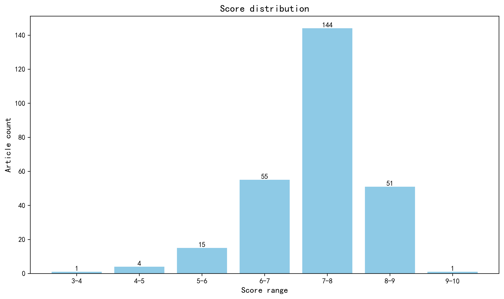

神经科学快讯·第020期 Nature重磅：无需双链断裂的高效精准大片段DNA敲入技术，开启基因编辑新范式 (2026-07-26)
📊 本周概览
历史摘要修订（2026-10-18）：第 020 期保留历史期号、日期与封面。本期 558 条记录中补回 244 条正式摘要，仅对这些条目使用 DeepSeek 重新评分和分级推荐，其余评估保持原值。修订后拟发布 237 篇，其中 1 篇仍缺充分摘要，已保留资料不足提示。来源、旧评分和推荐变更见 getfiles/abstract_history_2026-10-18.json。
- 头条推荐: 0 篇
- 深度解读: 127 篇
- 简要提及: 110 篇
- 跨界启发: 0 篇
- 已过滤: 321 篇
🌏 环球视野

地区与机构按本期原始发表记录、ROR 及城市地址规则分别统计；跨地区合作可重复计入，不作为完整机构排名。评分分布不含“域外局限”文章。
🌍 国家/地区分布 TOP 10
| 排名 | 国家 | 文章数量 |
|---|---|---|
| 1 | United States | 113 |
| 2 | China | 37 |
| 3 | United Kingdom | 22 |
| 4 | Germany | 21 |
| 5 | Canada | 18 |
| 6 | France | 12 |
| 7 | Switzerland | 11 |
| 8 | Australia | 9 |
| 9 | Italy | 9 |
| 10 | Japan | 9 |
地区计次合计: 346 次；取得地区信息 218/271 篇
🏢 研究机构 TOP 10
| 排名 | 机构 | 文章数量 |
|---|---|---|
| 1 | Howard Hughes Medical Institute | 13 |
| 2 | Stanford University | 9 |
| 3 | Harvard University | 9 |
| 4 | New York University | 7 |
| 5 | Washington University in St. Louis | 7 |
| 6 | Centre National de la Recherche Scientifique | 6 |
| 7 | Yale University | 6 |
| 8 | University of California, Berkeley | 6 |
| 9 | University of California San Diego | 6 |
| 10 | University of Pittsburgh | 6 |
📊 评分分布
| 评分区间 | 文章数量 |
|---|---|
| 3-4 | 1 |
| 4-5 | 4 |
| 5-6 | 15 |
| 6-7 | 55 |
| 7-8 | 144 |
| 8-9 | 51 |
| 9-10 | 1 |
总计: 271 篇评分文章
📈 各领域文章分布
| 领域 | 深度解读 | 简要提及 | 总计 |
|---|---|---|---|
| 未知领域 | 0 | 67 | 67 |
| 认知神经科学 | 24 | 5 | 29 |
| 感觉与运动神经科学 | 19 | 8 | 27 |
| 系统与环路神经科学 | 21 | 6 | 27 |
| 分子与细胞神经科学 | 22 | 4 | 26 |
| 临床与转化神经科学 | 12 | 10 | 22 |
| 方法学 | 12 | 4 | 16 |
| 计算与理论神经科学 | 10 | 3 | 13 |
| 发育神经科学 | 6 | 1 | 7 |
| 社会与情感神经科学 | 1 | 2 | 3 |
合计: 深度解读 127 篇，简要提及 110 篇，共 237 篇
📚 精选文献（按领域分类）
临床与转化神经科学
Single-cell multiomics connects 3D genome and transcriptome alterations in Alzheimer's disease.
深度解读 8.7/10中文标题: 单细胞多组学连接阿尔茨海默病中3D基因组和转录组的改变
作者: Yang Zhang, Xinyue Lu, Alexander K Kunisky et al.
单位: Ray and Stephanie Lane Computational Biology Department, School of Computer Science, Carnegie Mellon University, Pittsburgh, PA, USA.; Eric and Wendy Schmidt Center, Broad Institute of MIT and Harvard, Cambridge, MA, USA.; Department of Neurobiology, University of Pittsburgh, Pittsburgh, PA, USA. 等
研究地区: United States
关键词: 单细胞多组学, 3D基因组, 阿尔茨海默病, 人类, 全脑, 空间转录组
亮点: 单细胞多组学揭示3D基因组重组是阿尔茨海默病细胞类型特异性基因表达失调的新机制。
核心优势: 首次在单细胞分辨率下联合分析AD患者脑组织中3D基因组与转录组，结合空间转录组和深度学习预测。
研究局限: 基于死后脑组织样本，可能受死后间隔影响；深度学习模型的可解释性有限；需更多队列验证。
目标读者: 神经科学、表观遗传学、计算生物学和神经退行性疾病研究者
推荐理由: 这项研究首次在单细胞水平联合解析阿尔茨海默病（AD）患者脑组织的三维基因组结构与转录组变化，揭示了染色质重组与细胞类型特异性基因表达失调之间的直接联系。通过GAGE-seq方法并结合空间转录组数据，为理解AD的表观遗传机制提供了全新维度，也为未来靶向染色质结构的治疗策略奠定了基础。
中文标题: 脑静脉血流通过脑膜淋巴管调节颅内压和脑清除
作者: Marie-Renee El Kamouh, Myriam Spajer, Stéphanie Lenck
关键词: MRI, 人类, 小鼠, 硬脑膜静脉窦, 颅内高压, 脑膜淋巴管
亮点: 脑静脉血流通过脑膜淋巴管调控颅内压与脑清除的新机制
核心优势: 结合人体影像与动物模型，首次揭示静脉血流通过脑膜淋巴管调控颅内压的完整通路
研究局限: 小鼠模型为急性结扎，与IIH慢性病程不完全一致；人体影像证据为相关性
目标读者: 神经血管生理学家、脑淋巴系统研究者、神经内科医生（特别是IIH方向）
推荐理由: 该研究通过临床影像与动物模型相结合，揭示了脑静脉血流通过脑膜淋巴管调节颅内压及脑清除的关键机制。特发性颅内高压患者的静脉窦狭窄导致静脉周围液体异常和脑水肿，而小鼠颈静脉结扎模型进一步证实了静脉血流障碍引发短暂颅内高压和脑水肿。这一发现不仅为IIH的病理生理提供了新解释，也为通过干预静脉-淋巴通路治疗颅内压异常和相关神经疾病（如阿尔茨海默病）开辟了新方向。研究整合了临床观察与机制探索，具有较强的转化价值。
中文标题: 局部PD-1 CAR T疗法重编程神经炎症
作者: Rotem Shalita, Maya Ben Yehuda, Chamutal Gur et al.
单位: Department of Systems Immunology, Weizmann Institute of Science, Rehovot, Israel; Department of Systems Immunology, Weizmann Institute of Science, Rehovot, Israel.; Department of Medicine, Hadassah Medical Center, Faculty of Medicine, Hebrew University of Jerusalem, Jerusalem, Israel. 等
研究地区: Israel, Germany, Switzerland
关键词: 单细胞RNA测序, CAR T细胞治疗, 多发性硬化症, 神经炎症, B细胞, 浆细胞
亮点: 局部PD-1 CAR T疗法通过重编程神经炎症实现精准免疫调控
核心优势: 首次利用单细胞组学鉴定MS中致病性PD-1+ Tfh样细胞，并设计局部释放IL-10的CAR T细胞精准清除，开辟了神经免疫疾病局部免疫治疗新范式。
研究局限: 主要基于小鼠模型验证，人体疗效和安全性未知；CAR T细胞持久性和脱靶风险仍需深入评估。
目标读者: 神经免疫学、CAR T细胞工程、多发性硬化症和自身免疫疾病研究者
推荐理由: 本研究通过大规模单细胞RNA测序构建了多发性硬化症患者脑脊液、脑和血液的免疫细胞图谱，发现疾病特异的IgG+ B细胞和浆细胞富集，并定位到罕见活化T细胞亚群。在此基础上提出局部PD-1 CAR T细胞疗法重塑神经炎症的新策略，为抗体阴性复发患者提供了精准免疫干预的潜在靶点。方法学上，跨组织单细胞分析与临床转化紧密结合，为神经免疫疾病研究树立了范式。
中文标题: 利用小鼠和人类模型的多平台方法开发结核性脑膜炎的宿主导向治疗
作者: Carlos E Ruiz-Gonzalez, Medha Singh, Yuderleys Masias-Leon et al.
单位: Department of Pediatrics, Johns Hopkins University School of Medicine, Baltimore, MD, USA.; Center for Tuberculosis Research, Johns Hopkins University School of Medicine, Baltimore, MD, USA.; Department of Pediatrics, Cincinnati Children's Hospital Medical Center, Cincinnati, OH, USA. 等
研究地区: United States
关键词: 结核性脑膜炎, 宿主导向治疗, 免疫调节, 跨物种平台, 人类脑类器官, 小鼠模型
亮点: 多平台筛选揭示结核性脑膜炎宿主导向治疗新候选药物
核心优势: 结合小鼠模型、新型人脑类器官和患者PBMC，系统评估12种免疫调节药物，揭示多种药物优于标准治疗。
研究局限: 结果主要基于动物和体外模型，临床转化仍需大规模临床试验验证；药物作用机制和长期安全性有待深入研究。
目标读者: 神经感染病学、神经免疫学、药物开发及转化医学研究者
推荐理由: 该研究通过整合小鼠模型和新型免疫血管化人类脑类器官模型，系统评估了12种免疫调节药物对结核性脑膜炎的宿主导向治疗效果。跨物种平台的设计有效弥补了传统动物模型与人类病理的差距，为神经炎症性疾病的药物筛选提供了兼具临床终点和机制解析的可迁移方法。对于关注神经免疫互作及转化策略的研究者，这是一项兼具深度与广度的示范性工作。
中文标题: 冯·维勒布兰德因子激活驱动缺血性卒中无复流的机制
作者: Audrée Laroche, Nick Rovito, Alice Liu et al.
单位: Centre de Recherche du Centre Hospitalier Universitaire de Québec-Université Laval, Québec, QC G1V 4G2, Canada.; Paul M. Rady Department of Mechanical Engineering, University of Colorado Boulder, Boulder, CO 80309-0427.; Faculté de Médecine de l'Université Laval, Centre de Recherche ARThrite, Québec, QC G1V 4G2, Canada. 等
研究地区: Canada, United States, Belgium
关键词: 缺血性卒中, 无复流现象, von Willebrand因子, 活体成像, 微血管血栓, 小鼠模型
亮点: 血液动力学剪切力与IL-6/ADAMTS13炎症轴汇聚驱动VWF活化，为取栓后无复流现象提供可干预的分子机制。
核心优势: 多模态证据链完整：活体成像直接观察半暗带血小板-VWF血栓形成，结合计算流体力学模拟提出汇聚血流升高局部拉伸流触发VWF展开，并在小鼠和患者血浆中验证IL-6抑制ADAMTS13的因果环节与临床相关性。
研究局限: 机制核心证据主要来自小鼠短暂缺血模型和离体患者血浆，人体在体血栓形成与IL-6抑制的因果效应尚未验证；ADAMTS13活性与VWF活性的测量方法及样本量细节需进一步确认，且未复流的功能结局与微血栓的定量因果关系仍需干预实验直接支持。
目标读者: 卒中转化医学、血栓与止血生物学、微循环血流动力学及神经重症研究者
推荐理由: 该研究利用活体成像小鼠模型，揭示了暂时性缺血后von Willebrand因子激活驱动微血管血栓形成进而导致无复流现象的分子与血流动力学机制。这一发现填补了血管内取栓后仍存在显著残疾的机制空白，将血栓炎症、内皮激活与血流剪切力联系起来，为改善卒中再灌注治疗提供了新的靶点。研究结合高分辨率成像与机制验证，对临床转化和微循环研究具有重要启示。
Treatment escalation after clinically silent MRI lesions in relapsing-remitting multiple sclerosis.
深度解读 7.9/10中文标题: 复发缓解型多发性硬化中临床沉默MRI病灶后的治疗升级
作者: Cyrus Daruwalla, Courtney Kremler, Francesco Patti et al.
单位: Addenbrooke's Hospital, Cambridge, CB2 0QQ, UK.; Department of Medical and Surgical Sciences and Advanced Technologies, GF Ingrassia, 95123 Catania, Italy.; Cambridge Clinical Multiple Sclerosis Research Group, Department of Clinical Neurosciences, University of Cambridge, Cambridge, CB2 0QQ, UK. 等
研究地区: United Kingdom, Italy, Austria, Türkiye, Australia, Lebanon, Czechia, Croatia, Spain, Kuwait, Belgium, Canada, The Netherlands, Colombia, Oman, Tunisia, Hungary, Ireland, Estonia, Switzerland
关键词: 多发性硬化, MRI, 疾病修正治疗, 真实世界证据, 目标试验模拟, 队列研究
亮点: 大型真实世界注册队列显示，治疗中出现单个无症状MRI病灶即预示复发与残疾恶化风险升高，早期升级DMT可大幅降低复发风险，挑战现行仅按多发病灶升级的指南阈值。
核心优势: 基于MSBase 26国99中心、逾万例RRMS患者，采用目标试验模拟设计，样本量与外部效度突出，并首次分别量化单个与多个无症状病灶的预后意义及升级治疗效应。
研究局限: 观察性注册数据存在残余混杂与适应证偏倚（升级组仅286例，可能集中于高危或依从性更佳者）；残疾恶化终点未见显著获益，且缺乏MRI再评估与神经退行性标志物，因果推断仍受限。
目标读者: 多发性硬化专科神经科医师、神经免疫学与临床流行病学研究者、DMT治疗决策与指南制定相关人员
推荐理由: 该研究利用MSBase国际注册数据库，采用目标试验模拟方法，评估了复发缓解型多发性硬化患者在接受疾病修正治疗期间出现临床沉默MRI病灶后升级治疗的结局。研究聚焦于单个与多个沉默病灶对治疗决策的影响，为临床指南中模糊地带提供了真实世界证据。其方法学创新在于将注册数据与因果推断框架结合，对神经科医生优化治疗策略具有直接指导意义。
中文标题: 功能性肌肉网络作为卒中后运动损伤和治疗反应性的生物标志物
作者: David O'Reilly, Giorgia Pregnolato, Andrea Turolla et al.
单位: School of Biomedical sciences, University of Leeds, Leeds, United Kingdom.; Insight Research Ireland Centre for Data Analytics, University College Dublin, Dublin, Ireland.; IRCCS San Camillo Hospital, Venice, Italy. 等
研究地区: United Kingdom, Italy, Ireland, Greece
关键词: 卒中康复, 肌肉网络, 生物标志物, 运动训练, 上肢功能, 肌电
亮点: 用肌肉网络分析把卒中后运动损伤分层与康复响应转化为可量化的冗余-协同生物标志物。
核心优势: 将网络科学框架系统迁移到卒中上肢康复，提出从冗余到协同的协调转变作为有效恢复的候选标志，并用生物标志物对损伤严重度和治疗响应进行双重分层。
研究局限: 样本量、外部验证与多中心泛化性在摘要中未充分体现；肌肉网络指标与临床量表及神经生理机制之间的因果链条仍需更强证据支撑。
目标读者: 神经康复、运动控制、系统神经科学与计算生物标志物研究者
推荐理由: 该研究将肌肉网络分析框架应用于卒中后上肢运动康复，通过量化冗余与协同肌肉交互模式，衍生出可分层运动障碍严重程度并预测治疗反应性的生物标志物。其创新在于将网络科学引入临床康复评估，突破了传统量表主观性强、敏感性低的瓶颈，为个体化康复策略提供了客观、可量化的神经肌肉功能指标。方法学上具有可推广性，对运动控制与康复神经科学具有重要参考价值。
中文标题: 双侧伽玛刀放射外科治疗严重特发性震颤的前瞻性试验
作者: Jean Régis, Valentin Mira, Serge Pinto et al.
单位: CNRS, CRPN, Aix Marseille University, Marseille 13003, France.; Department of Stereotaxis, Assistance Publique Hôpitaux de Marseille (AP-HM), Functional Neurosurgery & Radiosurgery Marseille 13385, France.; Institut Neurosciences Systèmes (INS), INSERM, Aix Marseille University, Marseille 13284, France. 等
研究地区: France
关键词: 伽玛刀, 丘脑VIM, 特发性震颤, 双侧分期手术, 前瞻性试验, 立体定向放射外科
亮点: 分期双侧VIM伽玛刀在药物难治性特发性震颤中显示可控安全性与显著震颤改善的前瞻性II期证据
核心优势: 前瞻性单臂II期设计、12个月完整随访、覆盖神经心理、言语、步态与平衡的多维安全评估，并在严重双侧致残性震颤这一临床空白人群中首次系统验证分期双侧VIM-GKS的安全性。
研究局限: 单臂无对照、样本量小（33例）、随访仅12个月，缺乏盲法评估与长期放射性并发症数据，且入组严格排除言语与平衡问题患者，外推性受限。
目标读者: 运动障碍神经科医师、功能神经外科与立体定向放射外科医生、特发性震颤临床研究者
推荐理由: 该前瞻性2期试验首次严格评估分期双侧VIM伽玛刀放射外科治疗药物难治性特发性震颤的安全性与疗效。研究为无法接受双侧DBS或手术的高龄、脆弱患者提供了一种创伤更小的替代方案，有望减少双侧手术相关副作用，同时改善震颤障碍。结果对运动障碍疾病的功能神经外科实践具有直接指导意义，并提示放射外科可作为神经调控的补充策略。
中文标题: 超越心力衰竭绘制心脑连续体：神经病学为何重要
作者: Xia Zhang, Khosrov A Grigoryan, Nico Scherf et al.
单位: Max Planck Institute for Human Cognitive and Brain Sciences, Leipzig 04103, Saxony, Germany.; Massachusetts Eye and Ear, Harvard Medical School, Boston, Massachusetts 02114.; Max Planck Institute for Human Cognitive and Brain Sciences, Leipzig 04103, Saxony, Germany zhangx@cbs.mpg.de karstenm@cbs.mpg.de. 等
研究地区: Germany, United States, Czechia
关键词: 心力衰竭, 灰质微结构, 弥散加权成像, 认知功能, 中介分析, 前瞻性队列
亮点: 基线心功能下降可前瞻性预测未来灰质微结构损伤，且AD易感区微结构完整性在心脏健康与记忆衰退之间起中介作用
核心优势: 将心脏标志物（EF、NT-proBNP）与纵向扩散MRI及认知结局通过中介分析串联，提出心-脑连续体假说，并把无临床心衰人群纳入早期预警框架，概念整合具有吸引力。
研究局限: 样本量仅73例且缺乏健康对照、随访仅3.5年、单中心设计，中介分析基于观察性数据无法确证因果；作者团队与期刊定位可能更多为观点性整合而非机制性突破，结论外推需谨慎。
目标读者: 心脑轴、神经影像、认知老化与心血管-神经交互方向的研究者及转化医学读者
推荐理由: 该研究基于Leipzig心脏研究的前瞻性队列，首次系统探讨心力衰竭患者灰质微结构完整性的纵向变化及其对认知功能的中介效应。利用弥散加权MRI揭示心脏 dysfunction 与脑微结构改变的关联，为心脑轴机制提供了影像学证据。研究强调神经科在心力衰竭管理中的重要性，提示临床应关注心衰患者的中枢神经系统并发症。方法学上，中介分析框架有助于解析心脑共病的因果路径，对转化神经科学具有参考价值。
中文标题: 帕金森病中微生物组到黑质纹状体易损性的图谱优先考虑SCFA相关的肠-脑轴
作者: Ghosh, N.
单位: Maulana Azad College, Kolkata, India
研究地区: India
关键词: 微生物组, 短链脂肪酸, 肠-脑轴, 帕金森病, 多巴胺系统, 计算建模
亮点: 提出NGBCS评分系统，优先化SCFA-IL1B轴为帕金森病潜在炎症通路。
核心优势: 集成多组学数据的轻量级计算框架，系统评估微生物-代谢物-宿主基因-脑区联系。
研究局限: 完全基于公开数据库和生物信息学分析，缺乏湿实验验证，预测结果需后续检验。
目标读者: 计算神经科学、微生物组学和帕金森病研究者
推荐理由: 该研究开发了一套轻量级计算流程MiNi-PD，系统整合肠道微生物功能、代谢物、宿主基因和脑区转录组数据，优先筛选出与SCFA（短链脂肪酸）相关的肠-脑轴，揭示帕金森病中黑质纹状体易损性的潜在微生物-代谢-免疫机制。方法学上可推广至其他神经退行性疾病，为理解微生物组如何影响特定脑区脆弱性提供了可量化的整合分析框架。
中文标题: 情景记忆ERP反映了临床前阿尔茨海默病的进展
作者: Raposo Pereira, F., Chaumon, M., Dubois, B. et al.
单位: Sorbonne Universite, Institut du Cerveau - Paris Brain Institute - ICM, INSERM, U 1127, CNRS, UMR 7225, AP-HP, CENIR, Centre MEG-EEG, Hopital de la Pitie-Salpet
研究地区: France
关键词: EEG, 事件相关电位, 情景记忆, 阿尔茨海默病, 临床前诊断, 认知正常老年人
亮点: 纵向EEG-ERP标记揭示临床前阿尔茨海默病进展，为早期风险分层提供非侵入性指标
核心优势: 5年纵向设计结合多个ERP成分（FN400、P600、监测电位）及源定位，系统刻画了认知正常Aβ+个体的记忆衰退轨迹
研究局限: 样本量较小（每组15人），且仅纳入单一记忆范式，统计效力有限，结果需在独立队列中验证
目标读者: 阿尔茨海默病早期诊断、认知老化、EEG生物标记物及神经心理学研究者
推荐理由: 本研究通过高密度EEG记录认知正常老年人的情景记忆任务，发现事件相关电位（ERPs）可区分β-淀粉样蛋白阳性进展者与稳定者，为阿尔茨海默病的临床前诊断提供了非侵入性、低成本的电生理标记。这一发现拓展了ERPs在早期AD检测中的应用价值，并为大规模筛查和纵向监测提供了新的可行方案。
中文标题: 用于抑郁症迷走神经刺激的无线可贴附皮肤贴片，配备三维液态金属电极
作者: Wonjung Park, Enji Kim, Doo-Ho Kang et al.
单位: Department of Materials Science and Engineering, Yonsei University, Seoul 03722, Republic of Korea.; Department of Neurosurgery, Yonsei University College of Medicine, Seoul 03722, Republic of Korea.; Center for Nanomedicine, Institute for Basic Science, Seoul 03722, Republic of Korea. 等
研究地区: South Korea
摘要: 采用仿组织低模量的三维液态金属电极，实现无线、皮肤贴附式微创迷走神经刺激，并在抑郁小鼠模型中关联神经可塑性与免疫指标改善。
优势: 将材料/器件创新（三维液态金属电极穿透角质层、降低界面阻抗）与多模态在体验证（行为、神经探针脑信号、树突棘密度、血浆血清素及淋巴结免疫分型）整合于同一抑郁模型，概念链条较完整。 局限: 仅为小鼠层面的概念验证，样本与模型单一，缺乏与标准VNS或假刺激的严格对照及刺激参数的系统优化；机制证据多为相关性，且PNAS非神经调控领域顶刊，长期安全性、电极稳定性与跨物种转化未验证。 受众: 神经调控、生物电子器件与柔性电极、抑郁神经免疫机制及转化神经科学研究人员
中文标题: 单侧纹状体深部脑刺激改善认知控制
作者: Elizabeth M Sachse, Evan M Dastin-van Rijn, Jon P Bennek et al.
单位: Neuroscience, University of Minnesota, Minneapolis, Minnesota 55454.; Departments of Psychiatry & Behavioral Sciences, University of Minnesota, Minneapolis, Minnesota 55454.; Departments of Psychiatry & Behavioral Sciences, University of Minnesota, Minneapolis, Minnesota 55454 sachs075@umn.edu awidge@umn.edu. 等
研究地区: United States
摘要: 在啮齿类模型中复现VCVS DBS认知控制增强的偏侧化效应，并揭示单侧与双侧刺激通过相同决策变量起效。
优势: 用计算建模将单侧/双侧刺激与同一决策变量（如决策阈值或非决策时间）对应，并纳入雌雄两性验证，增强了该转化模型对DBS参数优化的参照价值。 局限: 结论主要基于反应时这一单一行为指标和一项已知范式，缺乏神经电生理因果证据，偏侧化效应的机制解释与人类临床直接对应仍较薄弱。 受众: 从事DBS机制、认知控制神经环路、计算精神病学与转化神经科学的系统/计算神经科学家
Photobiomodulation of immune crosstalk rescues neuroinflammation in Alzheimer's disease models.
简要提及 6.9/10中文标题: 光生物调节免疫交互作用缓解阿尔茨海默病模型中的神经炎症
作者: Qi Shen, Haocai Chang, Junyu Li et al.
单位: Guangdong Provincial Key Laboratory of Laser Life Science, College of Biophotonics, School of Optoelectronic Science and Engineering, South China Normal University, Guangzhou 510631, China.; Department of Neurology, Sun Yat-sen Memorial Hospital, Sun Yat-sen University, Guangzhou 510120, China.; MOE Key Laboratory of Laser Life Science & Institute of Laser Life Science, College of Biophotonics, School of Optoelectronic Science and Engineering, South China Normal University, Guangzhou 510631, China. 等
研究地区: China
摘要: 光生物调节通过重塑小胶质细胞-星形胶质细胞-CD8+ T细胞三方免疫对话缓解AD神经炎症并改善认知
优势: 多模型（APP/PS1与3×Tg）结合遗传过表达与药理抑制双重验证，系统刻画PBM经NLRP3炎症小体—A1星形胶质细胞—T细胞募集轴的中枢-外周免疫调控链条 局限: 机制链条虽长但各环节多为相关性证据，缺乏对PBM直接分子靶点（如光感受器/线粒体通路）的因果鉴定，且CD8+ T细胞浸润对认知改善的因果贡献未用过继转移或清除实验独立验证 受众: 神经免疫学、阿尔茨海默病转化研究、胶质细胞生物学及非药物神经调控领域研究者
中文标题: 额叶皮质厚度的空间特异性模式预示主观认知下降个体未来更快的淀粉样蛋白积累
作者: Vidaurre, D., Moreno, A., Sotolongo-Grau, O. et al.
单位: Aarhus University
研究地区: Denmark
摘要: 发现无症状个体额叶皮层厚度模式可预测五年后淀粉样蛋白积累速度
优势: 利用纵向数据建立早期结构指标与后续病理变化的关联 局限: 样本量有限，单中心，未在独立队列验证，且效应大小未知 受众: 阿尔茨海默病早期检测、神经影像学、认知衰退临床研究者
中文标题: 阿尔茨海默病试验结果为靶向tau蛋白的药物增添势头
作者: Jennie Erin Smith
摘要: 首个降低tau蛋白并减缓认知衰退的药物试验结果引发关注，尽管数据令人困惑。
优势: 及时报道了阿尔茨海默病治疗领域的前沿进展，突出tau靶向药物的最新趋势。 局限: 缺乏关键数据细节和深入分析，内容过于简化，未对困惑数据提供解释。 受众: 对AD药物研发感兴趣的神经科学家、临床医生和患者。
中文标题: 老年黑人成年人中炎症蛋白与认知衰退的关联研究
作者: Anat Yaskolka Meir, Henry A Adeola, Shinya Tasaki et al.
单位: Department of Chemistry, Vanderbilt University, Nashville, TN 37240, USA.; Rush Alzheimer's Disease Center, Rush University Medical Center, Chicago, IL 60612, USA.; Department of Epidemiology, Harvard T.H. Chan School of Public Health, Boston, MA 02115, USA. 等
研究地区: United States
摘要: 靶向炎症蛋白组学揭示老年黑人群体中OPG、CCL23、SCF与CXCL9特异性关联认知水平及认知域衰退速度
优势: 在代表性不足的高风险老年黑人队列（n=642）中整合Olink炎症蛋白组、纵向多认知域评估及多种统计模型（线性混合效应、潜类别混合模型、弹性网），并采用FDR校正，系统刻画循环炎症蛋白与认知衰退的关联。 局限: 研究为观察性关联设计，无法确立因果；Olink Target-96覆盖蛋白有限，弹性网对认知衰退预测能力差，且缺乏外部独立队列验证与多重比较后效应量的稳健性检验。 受众: 神经免疫学、流行病学、老年神经科学及炎症生物标志物研究者
中文标题: FMRP-LEAN：一种符合HIPAA标准的AI增强型LIMS架构，用于端到端临床检测工作流优化
作者: Eva McCord, Ernest Pedapati, Zag ElSayed
单位: Affiliation: School of Information Technology (SoIT), University of Cincinnati, Ohio, USA; Affiliation: Division of Child and Adolescent Psychiatry, Cincinnati Children’s Hospital Medical Center, Ohio, USA
研究地区: United States
摘要: 面向临床检测的HIPAA合规AI增强LIMS架构，提升多日检测工作流可见性和合规性。
优势: 将有限状态机模型与AI辅助QC结合，在保障数据隐私前提下优化工作流透明度。 局限: 缺乏与现有系统的定量比较和严格性能评估，证据说服力不足。 受众: 临床实验室信息学、生物样本库管理、转化医学研究者
分子与细胞神经科学
中文标题: 一种基因编码的离子应激传感器将细胞质子动力学与睡眠联系起来
作者: Zhijian Ji, Bingying Wang, Zhimin Ma et al.
单位: Department of Molecular Cell Biology, University of California, Berkeley, Berkeley, CA, USA.; Nagi Bioscience SA, Rue des Jordils 1A, 1025 Saint-Sulpice, Switzerland.; Cardiovascular Research Institute, University of California, San Francisco, San Francisco, CA, USA. 等
研究地区: United States, Switzerland
关键词: 遗传编码传感器, 离子应激, 秀丽隐杆线虫, 睡眠, 微流控, 核转位成像
亮点: 新型遗传编码传感器揭示质子离子节律调控发育性睡眠的新机制
核心优势: 开发了首个活体离子应激传感器GENTIS，直接证明了质子积累通过V-ATP酶调控睡眠。
研究局限: 研究限于线虫模型，在高等动物中的泛化性及睡眠调控的保守性有待验证。
目标读者: 神经科学、睡眠研究、细胞生物学家及生物传感器开发者
推荐理由: 本研究开发了遗传编码的核转位离子传感器（GENTIS），首次实现了活体动物内离子应激的实时可视化。利用该传感器结合自动化微流控平台，在线虫中发现蜕皮期间肠道离子强度出现高度同步的节律性升高，与发育定时睡眠紧密相关。工作揭示了细胞质子动态与睡眠之间的直接联系，为理解睡眠的细胞机制提供了全新工具和视角，对分子与细胞神经科学领域具有重要创新价值。
中文标题: 多巴胺D2受体绕过经典信号直接调节NMDA受体功能和厌恶学习
作者: Sheng Gong, Joy Adler, Ying Zhu et al.
单位: Department of Psychiatry, Columbia University Vagelos College of Physicians & Surgeons, New York, NY 10032, USA.; Howard Hughes Medical Institute, Janelia Research Campus, Ashburn, VA 20147, USA.; Department of Pharmacology, University of Colorado School of Medicine, Anschutz Medical Campus, Aurora, CO 80045, USA. 等
研究地区: United States
关键词: D2R, NMDA受体, GluN2B, 异源相互作用, 伏隔核, 厌恶学习
亮点: 发现D2受体通过物理耦合直接抑制NMDA受体，绕过经典信号通路，实现输入特异性和厌恶学习调控
核心优势: 揭示D2R调节谷氨酸突触传递的非经典机制，通过受体-受体直接相互作用，并证明其行为相关性
研究局限: 机制仅基于NAc脑区，限于D2R与GluN2B-NMDA的相互作用，泛化性需验证；详细结构基础未明
目标读者: 多巴胺信号、突触可塑性、谷氨酸受体、厌恶学习和成瘾领域的研究者
推荐理由: 本研究揭示D2R通过直接物理耦联GluN2B-NMDA受体，绕过经典G蛋白信号通路，精准调控伏隔核中棘神经元的突触功能与厌恶学习。这一发现颠覆了以往对D2R信号转导的认知，为理解成瘾、精神分裂症等疾病中D2R功能障碍提供了全新的分子机制，并开辟了靶向受体-受体相互作用而非传统配体的治疗策略。
中文标题: DNA张力计揭示驱动蛋白-1、-2和-3的逆锁键解离动力学
作者: Crystal R Noell, Tzu-Chen Ma, Rui Jiang et al.
单位: Department of Biomedical Engineering, Pennsylvania State University, University Park, United States.; Department of Mathematics, Tulane University, New Orleans, United States.; Department of Chemistry, Pennsylvania State University, University Park, United States.
研究地区: United States
关键词: 驱动蛋白, 分子马达, DNA张力计, 光学镊, 力学感知, 轴突运输
亮点: 基于DNA熵弹簧的平行力张力计揭示kinesin-1/-2/-3的catch-bond脱离动力学，重塑对双向运输拔河竞争的理解
核心优势: 原创DNA张力计实现沿微管平行方向施力，结合定量动力学测量与随机模拟，首次系统比较三个kinesin家族的载荷依赖脱离/再结合动力学。
研究局限: 体外重构体系简化了真实货架几何与调控因子，结论向体内双向运输的推广仍需细胞水平验证；家族间差异的分子结构基础未深入解析。
目标读者: 分子马达、细胞骨架运输、计算系统生物学及神经退行性疾病机制研究者
推荐理由: 该研究开发了DNA张力计，在垂直力方向上测量驱动蛋白-1、-2、-3的脱离动力学，揭示了catch-bond行为。这一方法克服了传统光学镊的局限，为理解驱动蛋白与动力蛋白拔河过程中负载依赖的脱离机制提供了新视角，对轴突运输和神经退行性疾病研究具有重要意义。
中文标题: 条件性删除所有神经连接蛋白定义了神经连接蛋白作为必需突触组织蛋白功能的多样性
作者: Jiang, M., Li, Y., Artyukhova, M. et al.
单位: Department of Molecular and Cellular Physiology and Howard Hughes Medical Institute, Stanford University Medical School, 265 Campus Drive, Stanford, CA 94305, U
研究地区: United States
关键词: 条件性基因敲除, 神经连接蛋白, 突触组织者, 电生理, 分子多样性, 小鼠
亮点: 首个系统性跨突触类型比较揭示neurexin的突触特异性功能
核心优势: 使用三重条件性敲除小鼠结合多种电生理和成像技术，直接比较了不同突触类型中neurexin的差异性作用
研究局限: 研究仅限于特定脑区和神经元亚型，且未探讨Neurexin-1γ的贡献可能影响结论完整性
目标读者: 突触生物学、神经递质分子机制、神经回路研究领域的科研人员
推荐理由: 该研究通过条件性敲除所有神经连接蛋白基因，系统比较了不同突触类型中神经连接蛋白的突触组织者功能，揭示了其功能多样性与必要性。尽管原始论文因图像问题被撤回，但重新分析确认了核心结论，为突触粘附分子的功能研究提供了不可替代的基准数据。
中文标题: 人类海马体老化过程中的表观遗传和三维基因组重编程
作者: Nathan R Zemke, Seoyeon Lee, Sainath Mamde et al.
单位: Department of Anatomy and Neurobiology, University of California, Irvine School of Medicine, Irvine, CA, USA.; Department of Cellular and Molecular Medicine, University of California, San Diego School of Medicine, La Jolla, CA, USA.; Center for Epigenomics, University of California, San Diego School of Medicine, La Jolla, CA, USA. 等
研究地区: United States
关键词: 单核多组学, 表观基因组, 3D染色质架构, 人类, 海马, 衰老
亮点: 多组学单核分析揭示人类海马衰老中细胞类型特异性的表观基因组和3D基因组重编程
核心优势: 整合单核转录组、表观组和3D基因组，首次系统描绘人类海马衰老过程中的动态基因调控变化，并发现关键细胞亚群替换
研究局限: 样本量有限，且主要为相关性分析，因果关系未验证
目标读者: 神经科学家、表观遗传学家、计算生物学家、衰老研究者
推荐理由: 该研究首次以单核分辨率整合了人类海马体衰老过程中的基因表达、染色质可及性、DNA甲基化和3D染色质架构，揭示了线性和非线性动态的基因调控重编程。特别值得注意的是，发现50-75岁间胚胎卵黄囊来源的小胶质细胞被外周血单核细胞样细胞取代，为理解衰老相关的神经炎症和认知衰退提供了全新视角。这项多模态单核组学分析框架也为其他脑区的衰老研究树立了方法学标杆。
中文标题: 空间多组学揭示突触核蛋白病中的早期突触修剪和情境依赖的多巴胺能脆弱性
作者: Svenja-Lotta Rumpf, Felix L Strübing, Karsten Nalbach et al.
单位: German Center for Neurodegenerative Diseases (DZNE), Munich, Germany.; Munich Cluster for Systems Neurology (SyNergy), Munich, Germany.; Department of Neurology, LMU University Hospital, Ludwig-Maximilians-Universität München, Munich, Germany. 等
研究地区: Germany, Italy, United States
关键词: 空间转录组学, 空间蛋白质组学, 突触修剪, 多巴胺能神经元, α-突触核蛋白, 人类脑组织
亮点: 空间多组学揭示帕金森病发生前补体介导的抑制性突触重塑
核心优势: 结合空间转录组学、蛋白质组学和种子扩增实验，在iLBD阶段发现补体C1QC上调与抑制性突触丢失，揭示前驱期分子事件。
研究局限: 关联性而非因果性，样本量可能有限（人脑组织），且仅聚焦中脑黑质，其他脑区未涉及。
目标读者: 神经退行性疾病研究者、突触生物学、空间组学专家、系统生物学
推荐理由: 该研究通过整合空间转录组学、空间蛋白质组学和α-突触核蛋白种子扩增实验，对死后中脑组织进行系统分析，首次在分子水平上揭示了早期突触修剪事件在帕金森病（PD）谱系中的关键作用，并阐明了多巴胺能神经元脆弱性的环境特异性。研究发现αSyn播种活性与多巴胺能神经元损失在PD中相关，但在阿尔茨海默病伴路易体病理中不相关，提示不同突触核蛋白病的分子机制存在差异。该工作为理解PD的早期分子病理提供了高分辨率的空间图谱，并为开发早期诊断和干预策略奠定了多组学基础。
中文标题: 利用单分子质量光度法解析蛋白质聚集机制及抑制剂作用效果
作者: Aaron Lyons, Simanta Sarani Paul, Jack E MacArthur et al.
单位: Centre for Prions and Protein Folding Diseases, University of Alberta, Edmonton AB T6G2M8, Canada.; Department of Biochemistry, University of Alberta, Edmonton AB T6G2H7, Canada.; Department of Physics, University of Alberta, Edmonton AB T6G2E1, Canada. 等
研究地区: Canada
关键词: 单分子质量光度法, tau蛋白, 蛋白聚集, P301L突变, 动力学建模, 抑制剂筛选
亮点: 单分子质量光度法直接追踪tau寡聚体动力学，揭示传统淀粉样动力学无法推断聚集机制的关键漏洞。
核心优势: 用单分子质量光度法直接观测瞬态寡聚体群体，并全局拟合跨阶段动力学模型，系统性证明仅凭ThT淀粉样动力学推断聚集机制不可靠。
研究局限: 主要基于体外纯化P301L tau体系，缺少细胞内或体内验证；抑制剂机制结论依赖特定化合物与模型假设，跨蛋白普适性待证。
目标读者: 蛋白质聚集与神经退行性疾病研究者、药物发现与机制建模科学家、生物物理化学方法学研究者
推荐理由: 该研究利用单分子质量光度法直接观测tau蛋白P301L突变体聚集过程中瞬态寡聚体的分布变化，并通过全局动力学拟合解析聚集机制，为神经退行性疾病中难以捕捉的早期毒性物种提供了直接的定量证据。该方法克服了传统技术对异质性寡聚体监测的局限，并展示了抑制剂对特定寡聚体群体的调控效果，为靶向蛋白聚集的药物开发提供了新的筛选范式。
Distinct Filament Conformation for Receptor-Bound Amyloid-β from Alzheimer’s Disease Brain
深度解读 8.1/10中文标题: 阿尔茨海默病脑中受体结合淀粉样β蛋白的独特纤维构象
作者: Mikhail A Kostylev, Carmen Butan, Graham P Roseman et al.
单位: Departments of Neuroscience, Yale School of Medicine, New Haven, CT, USA. stephen.strittmatter@yale.edu.; Department of Pathology, Yale School of Medicine, New Haven, CT, USA.; Departments of Neuroscience, Yale School of Medicine, New Haven, CT, USA. 等
研究地区: United States
关键词: 淀粉样蛋白, 受体结合, 阿尔茨海默病, 蛋白构象, 突触毒性, 人类脑组织
亮点: 从AD脑内直接纯化受体结合型Aβ，首次揭示其65nm短纤维的S形构象，将毒性species从模糊的“寡聚体”重新定义为一种独特纤维构象。
核心优势: 用受体拮抗剂释放法从人脑分离出均一的受体结合Aβ池，结合cryo-EM、生化定量与突触丢失功能实验，把分子构象与突触毒性直接挂钩。
研究局限: 样本来源和纯化产量可能限制统计效力与跨个体可重复性；功能因果性主要依赖体外突触丢失实验，体内验证与构象-毒性直接因果链仍不完整。
目标读者: 神经退行性疾病、蛋白质错折叠与cryo-EM结构生物学研究者，以及AD药物开发与生物标志物领域科学家
推荐理由: 该研究从阿尔茨海默病患者脑内分离出受体结合的β-淀粉样蛋白（Aβ）寡聚体，并首次解析其独特的丝状构象，为“寡聚体Aβ是突触丢失近因”的假说提供了直接分子证据。其丰度远高于游离Aβ，且通过受体拮抗剂释放，凸显了受体结合在Aβ致病中的关键作用。这一发现不仅重新定义了毒性Aβ的分子特征，也为靶向受体-Aβ相互作用的治疗策略开辟了新途径。
中文标题: 局灶性星形胶质细胞缺失揭示损伤再增殖过程中的核转位
作者: Marina Herwerth, Matthias T. Wyss, Bruno Weber
关键词: 双光子成像, 单细胞转录组, 小鼠, 躯体感觉皮层, 星形胶质细胞消融, 核转位
亮点: 星形胶质细胞局部丢失后的核移位与再群体化动力学
核心优势: 首次通过纵向双光子成像结合空间转录组学，直接观察并量化了星形胶质细胞在局灶性损伤后的增殖、多核状态及核迁移过程。
研究局限: 仅针对特定疾病模型（AQP4抗体介导）和单一脑区，人类星形细胞病变中的普适性及长期功能影响尚需验证。
目标读者: 胶质细胞生物学、神经免疫、神经损伤修复及体内成像研究者
推荐理由: 本研究通过体内双光子成像与时空转录组结合，揭示了局灶性星形胶质细胞丢失后残留细胞发生核转位等动态反应以重新填充损伤区的新机制。该发现为理解星形胶质细胞在神经免疫疾病（如视神经脊髓炎）中的修复潜能提供了重要细胞学基础，同时为体内长时程追踪胶质细胞行为建立了可迁移的实验范式。
中文标题: VAMP7依赖的线粒体-溶酶体接触参与胶质细胞线粒体动力学与多巴胺能神经元存活
作者: Honglei Wang, Mengxiao Wang, Yu-Ting Tsai et al.
单位: The Key Laboratory of Developmental Genes and Human Disease, School of Life Science and Technology, Southeast University, Nanjing 210096, China.; School of Life Science and Technology, ShanghaiTech University, Shanghai 201210, China.; Institute of Neuroscience, National Yang Ming Chiao Tung University, Taipei 11221, Taiwan. 等
研究地区: China, Taiwan
关键词: VAMP7, 线粒体-溶酶体接触, 胶质细胞, 线粒体动力学, 多巴胺能神经元, 果蝇
亮点: R-SNARE蛋白VAMP7以非融合方式调控胶质细胞线粒体-溶酶体接触解离，揭示胶质细胞线粒体动力学非自主决定多巴胺能神经元存活的新轴。
核心优势: 将SNARE蛋白从经典膜融合功能拓展到细胞器接触位点调控，并通过VAMP7-TBC1D15-17-Rab7 GTP水解轴厘清分子机制，实现从胶质细胞到神经元存活的多层次因果链验证。
研究局限: 核心结论主要基于果蝇遗传学与胶质细胞特异性操作，哺乳动物胶质细胞及人类疾病相关性尚未验证，且VAMP7调控MLC解离的结构细节与直接互作证据仍有提升空间。
目标读者: 细胞器接触与膜运输研究者、胶质细胞生物学家、线粒体动力学与神经退行性疾病领域科学家
推荐理由: 该研究首次在成年果蝇胶质细胞中揭示VAMP7调控线粒体-溶酶体接触（MLCs）解离的机制，发现胶质细胞VAMP7缺失导致MLCs延长、线粒体过度融合和膜电位超极化，进而引发多巴胺能神经元死亡。这项工作将胶质细胞线粒体动力学与神经元存活直接联系，为帕金森病等神经退行性疾病的胶质细胞-神经元交互机制提供了全新视角，并提示MLCs是潜在治疗靶点。
中文标题: 储存单胺和谷氨酸的突触小泡在蛋白质组成上存在差异
作者: Hrach Asmerian, Alexia J Diaz, Hongfei Xu et al.
单位: Center for Neural Science and Medicine, Board of Governors Regenerative Medicine Institute, Departments of Biomedical Sciences and Neurology, Cedars-Sinai Health Sciences University, Los Angeles, CA, USA.; Department of Pharmaceutical Chemistry, University of California, San Francisco School of Medicine, San Francisco, CA, USA.; Departments of Physiology and Neurology, University of California, San Francisco School of Medicine, San Francisco, CA, USA.
研究地区: United States
关键词: 突触小泡, 单胺类, 谷氨酸, 蛋白质组学, VMAT2, VGLUT2
亮点: 比较VMAT2和VGLUT2突触小泡的蛋白质组差异，揭示SCAMP5选择性调控谷氨酸能小泡回收
核心优势: 多层面验证（蛋白质组、原代神经元、脑组织）发现VMAT2和VGLUT2小泡的蛋白质组成差异，并定位功能分子SCAMP5
研究局限: 功能实验主要在异源表达系统中进行，内源性SCAMP5在体内其他神经元类型中的角色有待探究
目标读者: 突触传递、神经递质释放、单胺系统研究者和蛋白质组学研究者
推荐理由: 该研究通过比较含有VMAT2和VGLUT2的突触小泡的蛋白质组成，揭示了单胺类和谷氨酸类神经递质释放机制的分子差异。对理解神经调质与经典递质的释放机制有重要价值，也为突触小泡功能异质性提供了新的蛋白质组学视角。
中文标题: 中央突触中移动和簇状CaV2.1通道的功能相关性
作者: El khallouqi, a., Amaral, C., Lassen, A. S. et al.
单位: Functional Neurobiology, Institute of Developmental Biology and Neurobiology, Johannes Gutenberg University Mainz.
研究地区: Germany
关键词: 单粒子追踪, 数学建模, CaV2.1, 突触前, 海马, 神经递质释放
亮点: 稳态聚集与动态移动CaV2.1通道协调频率依赖的突触传递可靠性
核心优势: 首次揭示移动CaV2.1通道在频率>10Hz时对维持释放可靠性至关重要，且光遗传学手段直接验证功能
研究局限: 仅局限于海马谷氨酸能突触，且移动通道的具体分子机制（如与哪些蛋白相互作用）尚不清楚
目标读者: 突触传递、钙通道生物学、神经递质释放机制研究者
推荐理由: 该研究通过单粒子追踪实验与数学模型结合，揭示了海马谷氨酸能突触中CaV2.1钙通道的移动性与聚集分布对神经递质释放可靠性的不同贡献。传统观点认为只有聚集在释放位点的通道才有效，而本研究证明移动的分散通道可通过协同作用增强释放概率，为理解突触传递的灵活调节提供了新机制。
中文标题: 溶酶体损伤的全局细胞反应
作者: Jingyue Jia
单位: Autophagy, Inflammation and Metabolism Center of Biochemical Research Excellence, Albuquerque, NM 87106, USA. Electronic address: JJia@salud.unm.edu.; Center for Global Health, Department of Internal Medicine, University of New Mexico Health Sciences Center, Albuquerque, NM 87106, USA
研究地区: United States
关键词: 溶酶体, 细胞应激, 膜损伤, 神经退行性疾病, 细胞器互作, 细胞稳态
亮点: 系统整合溶酶体损伤后局部修复与整体细胞响应（翻译、代谢、转录）的最新概念进展，揭示其在细胞稳态与疾病中的关键角色。
核心优势: 全面覆盖了从局部损伤修复到整体细胞重编程的跨层次调控网络，提供了连贯的概念框架。
研究局限: 综述性质，缺乏原始实验数据支撑，对具体信号机制和争议点的讨论深度有限。
目标读者: 细胞生物学、膜损伤生物学、神经退行性疾病及溶酶体稳态研究者
推荐理由: 该研究系统描绘了细胞应对溶酶体损伤的全局响应机制，揭示了溶酶体如何通过膜修复、信号转导及细胞器互作维持稳态。对于神经科学领域，这一发现为理解溶酶体功能障碍在阿尔茨海默病、帕金森病等神经退行性疾病中的核心作用提供了关键细胞生物学基础，并提示了潜在治疗靶点。
中文标题: 空间转录组学揭示携带常见人类μ阿片受体变体Oprm1A118G的雌性小鼠在阿片依赖后不同的细胞类型动态
作者: Yihan Xie, Anna K Leonard, Omar Guessoum et al.
单位: Department of Bioengineering, School of Engineering and Applied Science, University of Pennsylvania, Philadelphia, PA, USA.; Departments of System Pharmacology and Translational Therapeutics, Perelman School of Medicine, University of Pennsylvania, Philadelphia, PA, USA.; Department of Genetics, Perelman School of Medicine, University of Pennsylvania, Philadelphia, PA, USA. 等
研究地区: United States
关键词: 空间转录组学, μ阿片受体, A118G, 雌性小鼠, 阿片依赖, 单核苷酸多态性
亮点: 单核空间转录组揭示人源μ阿片受体A118G变异在女性小鼠阿片依赖中把转录扰动重心从神经元转向胶质细胞。
核心优势: 首次将人源化Oprm1 A112G变异与单核空间转录组结合，在依赖状态下按细胞类型和脑区定位基因型特异的胶质-神经元网络重塑，为基因型—细胞状态—行为风险搭建了分子桥梁。
研究局限: 仅限雌性小鼠和单一阿片药物（吗啡）依赖范式，缺乏雄性或其它阿片类药物对照及功能性验证（如胶质细胞特异性操控），单核转录组也难以完全反映蛋白与突触层面变化。
目标读者: 成瘾神经生物学、药物基因组学、单细胞/空间组学和胶质细胞生物学研究者
推荐理由: 该研究利用空间转录组学解析雌性小鼠中人类μ阿片受体A118G变异对阿片依赖后细胞类型动态的影响，首次在空间层面上揭示了该SNP如何重塑特定脑区的细胞组成和基因表达。这不仅为理解遗传变异如何增加阿片成瘾风险提供了分子和细胞层面的新证据，也展示了空间转录组学在复杂神经精神疾病遗传机制研究中的强大应用潜力。
中文标题: 皮层灰质髓鞘降低动作电位传播能量成本而不增加传导速度
作者: Oron Kotler, Yana Khrapunsky, Israel Melamed et al.
单位: Department of Physiology and Cell Biology, Faculty of Health Sciences and Zelman Center for Brain Science Research, Ben-Gurion University of the Negev, Beer Sheva 84105, Israel.; Department of Molecular Cell Biology, Weizmann Institute of Science, Rehovot 76100, Israel.; Department of Neurosurgery, Soroka University Medical Center, Ben-Gurion University of the Negev, Beer Sheva 84105, Israel. 等
研究地区: Israel, United States
关键词: 髓鞘, 皮层灰质, 能量代谢, 传导速度, L5锥体神经元, 计算建模
亮点: 皮质灰质髓鞘并非提速工具，而是以削减锋电位传播能量成本、维护离子稳态为首要功能的代谢优化结构
核心优势: 结合薄轴突光学/电生理记录与计算建模，提出皮质髓鞘通过periaxonal nanodomain对高低频电流分流的结构性权衡，挑战了髓鞘等同于加速器的传统观点
研究局限: 证据主要来自小鼠L5锥体神经元体外/急性切片体系，轴突极细导致电生理记录与髓鞘完整性验证存在技术挑战，体内高频放电与长期可塑性条件下的结论仍需独立验证
目标读者: 髓鞘生物学、皮质微环路与能量代谢神经科学家，以及从事轴突计算建模的研究者
推荐理由: 该研究挑战了中枢髓鞘主要加速传导的经典观点：在皮层灰质薄轴突中，髓鞘化使动作电位传播的能量成本减半，而传导速度几乎不变。作者结合光电记录与生物物理建模，揭示速度与能效的提升受复极化及结间通道/泵功能约束，提出灰质髓鞘的核心功能是代谢优化。这一结论重塑了对皮层轴突设计原理的理解，并为能量受限的神经环路计算与脱髓鞘病理提供了新框架。
Altered postnatal chromatin development in the nucleus accumbens primes enduring stress sensitivity.
深度解读 7.7/10中文标题: 产后伏隔核染色质发育改变启动持久应激敏感性
作者: Rebekah L Rashford, Lisa Z Fang, Michael DeBerardine et al.
单位: Department of Psychiatry, Washington University in St. Louis, St. Louis, Missouri 63110.; Princeton Neuroscience Institute, Princeton University, Princeton, New Jersey 08544.; Department of Anesthesiology, Washington University in St. Louis, St. Louis, Missouri 63110. 等
研究地区: United States
关键词: 伏隔核, 早期生活应激, H3K4me1, 染色质可及性, 表观遗传编程, 小鼠
亮点: 幼年伏隔核H3K4me1表观遗传编程足以预置成年应激敏感性，链接染色质发育、D2型中型多棘神经元生理与行为。
核心优势: 以Setd7病毒过表达实现因果性表观遗传操控，结合染色质可及性、电生理与行为的多模态验证，并区分幼年与成年时间窗及D1/D2细胞类型特异性。
研究局限: 机制证据仍以相关性组学与过表达为主，缺乏内源性H3K4me1位点敲除/编辑的反向因果验证；单一脑区、单一组蛋白修饰，且行为范式与性别差异的深度解析有限。
目标读者: 表观遗传学、应激与精神疾病神经生物学、奖赏环路电生理及计算系统生物学研究者
推荐理由: 该研究聚焦伏隔核中H3K4me1修饰，揭示早期生活应激如何通过持续改变染色质状态“编程”增强子，进而敏化个体对后续应激的细胞与转录反应。其创新在于将产后染色质发育与终身应激敏感性联系起来，为理解表观遗传 priming 在精神疾病风险中的因果作用提供了直接证据。对关注染色质动态、发育关键窗及应激相关环路可塑性的读者具有重要参考价值。
The ARHGAP32 isoform PX-RICS is specifically targeted to inhibitory synapses by binding to gephyrin.
深度解读 7.7/10中文标题: ARHGAP32亚型PX-RICS通过结合gephyrin特异性靶向抑制性突触
作者: Guanhua Bai, Ruifeng Huang, Yinmiao Lian et al.
单位: Innovation Center for Brain Medical Sciences, The Ministry of Education of the People's Republic of China, Huazhong University of Science and Technology, Wuhan 430030, China.; Department of Pathophysiology, School of Basic Medicine and Tongji Medical College, Huazhong University of Science and Technology, Wuhan 430030, China.; Department of Neuroscience, School of Life Sciences, Southern University of Science and Technology, Shenzhen 518055, China. 等
研究地区: China, Hong Kong
关键词: PX-RICS, gephyrin, 抑制性突触, 晶体结构, 选择性剪接, 突触靶向
亮点: PX-RICS通过其N端GBR与gephyrin E结构域结合，以竞争性方式被靶向至抑制性突触，为ARHGAP32相关神经发育障碍提供了结构层面的机制解释。
核心优势: 2.2 Å共晶结构清晰解析了PX-RICS GBR与gephyrin E结构域的疏水相互作用界面，并直接解释了异构体特异性靶向；Arhgap32ΔGBR小鼠的行为与癫痫表型提供了体内功能验证。
研究局限: 机制主要依赖结构解析与单一敲除模型，gephyrin结合位点与神经递质受体结合位点竞争的动态性缺乏直接动力学或竞争性结合实验证据，且小鼠表型与人类ASD/癫痫之间的转化关联仍较初步。
目标读者: 突触分子生物学、抑制性突触传递、神经发育障碍（ASD/癫痫）及结构生物学研究者
推荐理由: 本研究首次揭示PX-RICS通过结合gephyrin被特异性靶向至抑制性突触，并解析了2.2 Å复合物晶体结构，从分子层面阐明了抑制性突触形成的关键机制。该发现不仅填补了ARHGAP32 splice variant突触靶向的空白，还为ASD和癫痫等兴奋-抑制失衡相关疾病提供了新的分子靶点，对理解神经发育障碍的病理机制具有重要意义。
中文标题: 淀粉样前体蛋白家族成员的跨二聚化通过不同信号通路诱导突触前和突触后分化
作者: Ritu Rajender, Natalie Foth, Simone Eggert et al.
单位: Department of Human Biology and Human Genetics, RPTU University Kaiserslautern-Landau, Kaiserslautern 67663, Germany.; Departments of Computational Biology, RPTU University Kaiserslautern-Landau, Kaiserslautern 67663, Germany.; Department of Neurogenetics, Max Planck Institute for Multidisciplinary Sciences, Göttingen 37075, Germany. 等
研究地区: Germany, Romania
关键词: APP家族, 突触黏附分子, 突触分化, 信号通路, 小鼠, 原代神经元
亮点: APP家族作为突触黏附分子通过反式二聚化驱动突触前和突触后分化，且两条信号通路可分离
核心优势: 利用异源突触形成实验结合条件性三敲除神经元和药理通路解析，系统证明APP/APLP1/APLP2均具突触生成活性并区分pre/post分化信号需求
研究局限: 机制证据主要来自体外异源共培养与药理学抑制，缺乏在体突触功能与行为层面的因果验证，且E1结构域与sAPP调控的具体分子细节仍不明确
目标读者: 突触生物学、阿尔茨海默病机制、细胞黏附分子与信号转导研究者
推荐理由: 该研究系统揭示了APP家族三个成员（APP、APLP1、APLP2）在非神经元细胞中表达时，均能诱导小鼠原代神经元的树突兴奋性突触后分化，并证明其通过不同的信号通路分别驱动突触前和突触后特化。这一发现将APP家族从传统的突触前诱导因子拓展为双向突触组织者，为理解突触发育的分子机制及阿尔茨海默病中突触功能障碍提供了新视角。
中文标题: 通过自噬增强逆转年龄依赖性线粒体动力学改变在重编程人类神经元中的研究
作者: Klinman, E., Kwon, J.-S., Dolle, R. E. et al.
单位: Washington University School of Medicine in St Louis
研究地区: United States
关键词: 直接重编程, 人类神经元, 线粒体动力学, 自噬, 转录组学, 衰老
亮点: 揭示人类神经元衰老中线粒体动力学与自噬障碍的补偿机制
核心优势: 利用人类原代成纤维细胞重编程神经元，结合活细胞成像和转录组学，系统揭示了年龄依赖性自噬流下降导致线粒体分裂融合代偿性增加。
研究局限: 研究基于体外培养的诱导神经元，缺乏体内衰老环境的验证，且样本量和批次效应控制未明确说明。
目标读者: 神经衰老、线粒体生物学、自噬机制和重编程技术研究者
推荐理由: 本研究利用微RNA诱导的直接重编程人类神经元（miNs）保留供体年龄特征的优势，系统比较了年轻与老年个体来源神经元的转录组和细胞器动力学。发现老年神经元中线粒体碎片化、自噬流受损，并通过增强自噬成功逆转了这些年龄依赖的线粒体动态缺陷。该工作为理解神经元衰老中细胞器互作机制提供了新视角，并提示自噬增强作为干预神经衰老的潜在策略。
中文标题: PKMζ-PKCι/λ双敲除证明非典型PKC对海马LTP持续性及空间记忆至关重要
作者: Panayiotis Tsokas, Changchi Hsieh, Alejandro Grau-Perales et al.
单位: Department of Pathology, State University of New York Downstate Health Sciences University, Brooklyn, United States.; Department of Physiology and Pharmacology, The Robert F. Furchgott Center for Neural and Behavioral Science, State University of New York Downstate Health Sciences University, Brooklyn, United States.; Department of Anesthesiology, State University of New York Downstate Health Sciences University, Brooklyn, United States. 等
研究地区: United States
关键词: PKMζ, PKCι/λ, 海马LTP, 空间记忆, 基因敲除, 小鼠
亮点: 通过双基因敲除证明PKCι/λ在PKMζ缺失时持续补偿并维持海马晚期LTP与空间长期记忆，重塑aPKC维持记忆的分子框架。
核心优势: 利用可诱导条件性PKCι/λ敲除叠加组成性PKMζ缺失的双敲除设计，直接区分两种aPKC亚型在LTP维持与记忆持久性中的分工与互偿。
研究局限: 核心依赖单一实验室此前提出的互偿模型，功能证据主要来自药理学与电生理相关性，缺乏直接分子干预或跨脑区、跨行为范式的独立重复验证。
目标读者: 学习记忆与突触可塑性研究者、分子神经生物学家、计算与系统神经科学读者
推荐理由: 该研究通过PKMζ与PKCι/λ双基因敲除，解决了领域内关于非典型PKC在LTP维持和长期记忆中的关键争议。结果表明两种激酶在功能上相互补偿，且双敲除完全消除海马晚期LTP和空间记忆，首次明确非典型PKC对记忆持久性是必不可少的。这一发现不仅澄清了PKMζ单敲除研究的矛盾，也为记忆维持的分子机制提供了更清晰的图景，对理解突触可塑性与认知功能的关系具有重要价值。
中文标题: 中枢神经系统中空间上不同的皮层胶质细胞群体调控光敏感和温度敏感型癫痫发作
作者: Govind Kunduri, Tanja Angela Godenschwege, Katherine Sankey et al.
单位: Center for Cancer Research, Cancer and Developmental Biology Laboratory, National Cancer Institute, Frederick, MD 21702.; Biological Sciences Department, Florida Atlantic University, Jupiter, FL 33458.
研究地区: United States
关键词: 果蝇, 皮质胶质细胞, 癫痫, 光遗传学, 温度敏感, 胶质异质性
亮点: 通过脑区特异性胶质细胞亚群操控，揭示皮层胶质异质性如何差异化调控光敏与温敏癫痫易感性。
核心优势: 结合优化的Split-Gal4/Gal80驱动系统与多种癫痫模型（cpes、zyd1及dTRPA1），在视叶、中央脑和腹神经索实现区域特异性胶质救援，直接证明皮层胶质亚群功能分工。
研究局限: 机制证据主要来自果蝇遗传学救援实验，缺乏胶质亚群分子异质性及与神经元相互作用的上游机制解析，向哺乳动物癫痫的转化相关性有限。
目标读者: 神经胶质细胞生物学、癫痫机制研究及果蝇遗传学模型领域的系统神经科学家
推荐理由: 该研究利用果蝇模型揭示了中枢神经系统中空间上不同的皮质胶质细胞群体对光和温度敏感型癫痫发作的差异性调控。通过遗传学操作和钙成像等技术，作者发现特定区域的皮质胶质细胞通过调节神经元兴奋性影响发作阈值，证明了胶质细胞异质性在癫痫发生中的因果作用。这项工作不仅将胶质细胞异质性与癫痫易感性直接联系起来，还为理解神经-胶质相互作用在环路水平上的功能提供了新视角，对开发针对胶质细胞的癫痫治疗策略具有重要启示。
中文标题: I-II环的结构刚性将Ca(V)β锚定与Ca(V)2.2门控模式耦合
作者: Jin-Nyeong Woo, Jung-Eun Kim, Byung-Chang Suh
单位: Department of Brain Sciences, Daegu Gyeongbuk Institute of Science and Technology, Daegu 42988, Republic of Korea.
研究地区: South Korea
关键词: 电压门控钙通道, CaVβ亚基, 门控动力学, 结构刚性, 电生理, 膜锚定
亮点: β亚基通过I-II环结构刚性机械耦合膜锚定与CaV2.2开放态稳定，用Markov模型拆解宏观失活为不可逆失活与可逆非导态转换的复合过程。
核心优势: 将宏观电流衰减解构为不可逆失活与可逆非导态平衡的复合动力学，并用I-II环铰链区突变与linker长度操控把β亚基膜邻近性确立为门控模式选择的机械决定因素。
研究局限: 证据主要来自异源表达系统的电生理与Markov建模，缺乏神经元原生理条件下对该门控通路及R370机械耦合的直接验证，机械力传导的分子细节仍属推断。
目标读者: 离子通道生物物理学、钙通道门控与计算神经科学/系统生物学研究者
推荐理由: 该研究揭示CaV2.2通道中一个精妙的动力学悖论：膜锚定的β亚基减缓去极化时的电流衰减，却加速复极化后的尾电流失活，而胞质β亚基效果相反。通过结构分析，作者将这一悖论归因于I-II环的结构刚性，它耦合了β亚基的锚定状态与通道的门控模式。这项工作在分子层面统一了β亚基对通道开关的差异调控，为理解神经元兴奋性和突触传递的精细调节提供了新机制，对离子通道动力学建模具有重要启示。
FMRP regulates neuronal RNA granules containing stalled ribosomes, not where ribosomes stall.
简要提及 6.5/10中文标题: FMRP调控含有停滞核糖体的神经元RNA颗粒，而非核糖体停滞的位置
作者: Jewel T-Y Li, Mehdi Amiri, Senthilkumar Kailasam et al.
单位: Department of Biochemistry, McGill University, Montréal, Canada.; Goodman Cancer Institute, McGill University, Montreal, Canada.; Department of Neurology and Neurosurgery, Montreal Neurological Institute, McGill University, Montreal, Canada. 等
研究地区: Canada
摘要: FMRP 并不决定核糖体停滞位点，而是调控含有停滞核糖体的神经元 RNA 颗粒数量，这为脆性 X 综合征的翻译调控机制提供了更精确的定位。
优势: 在 FMRP 缺失小鼠中系统比较了停滞核糖体相关蛋白、核糖体结构和 RPF 停滞位点，得出清晰的阴性结果，并通过核糖体嘌呤霉素化实验将 FMRP 的功能定位到 RNA 颗粒层面。 局限: 主要结论以阴性结果为主，机制解释深度有限；仅使用 P5 小鼠单一时间点，且 RPF 数量变化幅度较小，因果链条和发育阶段依赖性仍需更多验证。 受众: 翻译调控、RNA 颗粒、脆性 X 综合征及相关神经发育障碍领域的研究者
中文标题: 猕猴前扣带皮层锥体神经元的亚区与层状特化
作者: Yuxin Zhou, Maxine Hsiung, Angela L Capriglione et al.
单位: Center for Systems Neuroscience, Boston University, Boston, Massachusetts 02215.; Department of Anatomy & Neurobiology, Boston University Chobanian & Avedisian School of Medicine, Boston, Massachusetts 02118 zhouybu@bu.edu.; Department of Anatomy & Neurobiology, Boston University Chobanian & Avedisian School of Medicine, Boston, Massachusetts 02118.
研究地区: United States
摘要: 系统绘制猕猴前扣带回三个亚区锥体神经元的层特异性电生理与形态图谱，揭示认知—情绪分区间的细胞异质性。
优势: 在同一物种、同一实验范式下跨ACC三个亚区系统比较L2-3与L5-6锥体神经元的生物物理和形态特性，样本量可观（19只猕猴）且纳入雌雄两性，填补了灵长类ACC亚区细胞水平比较的空白。 局限: 属于描述性、相关性研究，未直接操纵或因果验证这些细胞特性差异如何影响ACC亚区的环路功能与行为；体外切片记录脱离了完整网络背景，且亚区间比较可能受切片质量、动物个体差异和细胞采样偏倚影响。 受众: 系统神经科学、前扣带回与情绪—认知环路研究者、皮层细胞生物学家及计算神经科学建模者
中文标题: CaMKII介导的相分离驱动突触成熟
作者: Walid Idi
单位: Department of Molecular Medicine, Université Laval, Québec, Quebec G1V 0A6, Canada walid.idi@crchudequebec.ulaval.ca.; CHU de Québec Research Center, Axe Neurosciences, Québec, Quebec G1V 4G2, Canada.
研究地区: Canada
摘要: 将CaMKII介导的液-液相分离定位为突触成熟的物理驱动力，为PSD组装与受体纳米域分选提供统一框架
优势: 以清晰的机制假说把CaMKII发育性表达升高、GluN2B依赖性LLPS与棘突增大及AMPA/NMDA受体纳米域分离串联为因果链条，概念整合度高 局限: 属于对Kuo等(2025)单篇研究的评论/观点类文章，非原创实验数据，缺乏独立方法学创新与多模态证据支撑，论证强度受限于被评论文献本身 受众: 突触生物学、蛋白质相分离与NMDA受体信号领域的神经科学家及计算系统生物学家
中文标题: 细胞类型特异性的m1A动态与脊髓损伤后小胶质细胞表型转化和神经元代谢适应相关
作者: Chi Zhang, Shaolong Li, Ruizhi Jiang et al.
单位: Department of Orthopaedics, Tianjin Medical University General Hospital, International Science and Technology Cooperation Base of Spinal Cord Injury, Tianjin Key Laboratory of Spine and Spinal Cord, Tianjin, China.; Department of Orthopaedics, The Second Qilu Hospital of Shandong University, Shandong University Centre for Orthopaedics, Cheeloo College of Medicine, Shandong University, Jinan, China.; Department of Orthopaedics, Qilu Hospital of Shandong University, Shandong University Centre for Orthopaedics, Advanced Medical Research Institute, Cheeloo College of Medicine, Shandong University, Jinan, China. 等
研究地区: China
摘要: 用调控因子表达推断的m1A评分追踪脊髓损伤后小胶质细胞与神经元的表观转录组动态
优势: 在bulk与单细胞层面同时刻画SCI后m1A调控因子表达变化，并结合伪时间与功能富集提出小胶质细胞表型转换与神经元代谢适应之间的关联假说。 局限: 所谓m1A评分仅由writer/eraser/reader基因表达间接推断，未直接测定RNA m1A修饰水平，核心结论建立在代理指标之上，因果性与修饰特异性证据薄弱。 受众: 脊髓损伤、神经免疫与表观转录组学领域的研究者
发育神经科学
中文标题: 染色质调节因子ANKRD11的凝聚体限制过度转录基因以保障发育
作者: Tao Zhang, Xiufeng Li, Wei Zhou et al.
单位: State Key Laboratory of Green Biomanufacturing, Tsinghua-Peking Joint Center for Life Sciences, Beijing Frontier Research Center for Biological Structure, School of Life Sciences, Tsinghua University, Beijing 100084, China.; Center for Synthetic and Systems Biology, School of Life Sciences, Tsinghua University, Beijing 100084, China.; State Key Laboratory of Druggability Evaluation and Systematic Translational Medicine, Tianjin Institute of Pharmaceutical Research, Tianjin 300301, China 等
研究地区: China
关键词: 遗传筛选, 凝聚体, 染色质调控, 转录调控, KBG综合征
亮点: 揭示ANKRD11通过形成相分离凝聚体限制超转录基因，其缺失导致KBG综合征的新机制
核心优势: 首次将相分离机制与超转录调控和发育疾病直接关联，并通过多模态实验验证
研究局限: 相分离在体内的动态组成和普遍性仍需进一步验证，机制是否适用于其他脑区或疾病模型不确定
目标读者: 染色质生物学、转录调控、神经发育疾病领域的研究者
推荐理由: 该研究通过双层面遗传筛选发现ANKRD11作为染色质调控因子，通过形成生物分子凝聚体优先抑制高度转录的基因，从而防止发育过程中的转录失调。这一机制揭示了发育障碍（如KBG综合征）中基因剂量敏感的分子基础，为理解染色质凝聚体在细胞命运决定中的作用提供了新范式。
中文标题: 亚核基因组区室化控制二价染色质活性
作者: Sajad Hamid Ahanger, Evan R. Semenza, Daniel A. Lim
关键词: 3D基因组, 核纤层, 核斑点, 二价染色质, 人类, 神经发生
亮点: 揭示核层-核斑区室重编程控制神经发生中双价染色质活性与基因表达
核心优势: 首次高分辨率解析人类神经发生过程中核层和核斑对双价基因的区室化调控，建立空间位置与表观基因组调控的直接因果联系
研究局限: 机制上对核层如何维持转录抑制环境（如与转录延伸机器的空间分离）仍需更直接的分子证据
目标读者: 神经发育、表观遗传学、核组织与基因调控、计算基因组学研究者
推荐理由: 该研究通过高分辨率基因组互作图谱，揭示了核纤层和核斑点等亚核区室如何协同调控二价染色质活性，在神经谱系细胞中建立了三维基因组结构与表观遗传状态之间的因果联系。这一发现为理解发育过程中基因表达的时空精确调控提供了新的亚核层面机制，对神经发育障碍的研究具有重要意义。
中文标题: HUWE1通过RMC1靶向线粒体以促进神经发育
作者: Jiamin Yi, Qin Yang, Chunzhuang Zhou et al.
单位: Key Laboratory of Birth Defects and Related Diseases of Women and Children, Department of Paediatrics, West China Second University Hospital, State Key Laboratory of Biotherapy, Sichuan University, Chengdu 610041, China.; Development and Related Diseases of Women and Children Key Laboratory of Sichuan Province, West China Second University Hospital, Sichuan University, Chengdu 610041, China.
研究地区: China
关键词: HUWE1, 线粒体, 泛素化, 斑马鱼, 神经发育, 智力障碍
亮点: 非催化型HUWE1突变通过破坏AMBRA1-RMC1依赖的线粒体招募来解释X连锁智力障碍，并提示线粒体质量控制增强作为治疗策略。
核心优势: 机制链条完整：从患者非催化变异的表型、全局泛素化谱的底物选择性，到AMBRA1-RMC1-HUWE1招募轴的直接生化互作，并在斑马鱼中验证Urolithin A的 rescue。
研究局限: 核心机制主要基于斑马鱼模型和过表达/变异引入实验，缺乏哺乳动物（尤其人神经元或小鼠）在体内对线粒体底物 ubiquitination 与神经发育因果关系的验证；AMBRA1-RMC1-HUWE1 轴的内源化学计量与动态调控未明。
目标读者: 神经发育障碍、泛素-蛋白酶体系统、线粒体质量控制及斑马鱼疾病模型研究者
推荐理由: 该研究揭示HUWE1通过AMBRA1-RMC1轴将泛素化信号导向线粒体，从而调控神经发育，并首次阐明XLID中非催化型HUWE1变异的致病机制。斑马鱼模型重现了患者的关键神经发育缺陷，将蛋白质稳态、线粒体质量控制与认知障碍联系起来，为理解智力障碍的分子基础提供了新视角。
中文标题: 人类脑发育共识图谱定义细胞类型特异性成熟轨迹跨越整个生命周期
作者: Venkatesan, S., Nano, P., Werner, J. et al.
单位: University of Toronto, Toronto, ON, Canada
研究地区: Canada
关键词: 单细胞转录组, 人类, 全脑, 发育轨迹, 数据整合, 共识图谱
亮点: 统一细胞类型分类揭示人类全生命周期脑发育的成熟轨迹
核心优势: 从原始数据整合多研究，建立标准化参考图谱，覆盖从神经发生到成年
研究局限: 基于预印本，未经同行评审；未提供独立功能验证；可能受限于原始数据质量
目标读者: 发育神经生物学、计算生物学、单细胞基因组学研究者
推荐理由: 该研究整合了九个独立数据集，构建了涵盖156个捐赠者约220万个人类大脑细胞的发育转录组图谱，覆盖从神经发生到成年的完整时间跨度。通过统一的数据处理和注释框架，定义了细胞类型特异性的成熟轨迹，揭示了发育过程中的动态基因表达变化。这一资源为理解人类大脑发育的细胞和分子基础提供了前所未有的分辨率和一致性，也为跨研究比较和元分析树立了新标准。
中文标题: 星形胶质细胞代谢在物种特异性神经元发育中的作用
作者: Steiner, S. C., Foster, K., Chinn, R. R. et al.
单位: Salk Institute
关键词: 星形胶质细胞, 类脑器官, 代谢组学, 人类, 非人灵长类, 13C代谢流
亮点: 星形胶质细胞代谢差异驱动人类神经元发育延缓的新机制
核心优势: 首次通过跨物种代谢比较和功能验证，揭示了星形胶质细胞代谢在人类神经发育迟缓中的细胞外作用。
研究局限: 基于类器官模型，缺乏体内验证；PHGDH抑制仅部分介导，其他机制未阐明。
目标读者: 发育神经生物学、进化神经科学、代谢与胶质细胞生物学研究者
推荐理由: 该研究利用人类与非人灵长类类脑器官模型，揭示星形胶质细胞代谢差异是导致人类神经元发育延缓（neoteny）的关键因素。通过转录组和13C代谢流分析，发现NHP星形胶质细胞增强丝氨酸/甘氨酸合成，而人类星形胶质细胞代谢更偏向其他通路。这一发现不仅为物种特异性神经发育提供新的细胞机制，也提示星形胶质细胞代谢在进化中塑造人类大脑独特发育轨迹的潜力。对理解人类脑进化及神经发育障碍具有重要价值。
中文标题: 过氧化物酶体醚脂合成调控皮层神经发生并维持放射状胶质细胞线粒体能量稳态
作者: Lin Li, Wenzheng Zou, Yuqing Lv et al.
单位: State Key Laboratory of Organ Regeneration and Reconstruction, Institute of Zoology, Chinese Academy of Sciences, Beijing 100101, China.; Beijing Institute for Stem Cell and Regenerative Medicine, Beijing 100101, China.; Medical Institute, University of Chinese Academy of Sciences, Beijing 100049, China.
研究地区: China
关键词: 皮层发育, 放射状胶质细胞, 过氧化物酶体, 醚脂合成, 线粒体能量代谢, 小鼠
亮点: 过氧化物酶体通过醚脂合成调控线粒体嵴结构与能量稳态，从而驱动皮层神经发生的新机制
核心优势: 多模态证据链完整：小鼠皮层与人类类器官双模型、脂质组学、成像与遗传操控相互印证，并将过氧化物酶体动态与线粒体能量代谢直接联系。
研究局限: 机制多依赖药理学挽救与敲低，缺乏醚脂直接靶点或过氧化物酶体-线粒体接触位点的因果性分子证据；人类类器官表型相对有限。
目标读者: 发育神经生物学、细胞器互作与脂质代谢、神经发生及神经发育障碍研究者
推荐理由: 本研究揭示过氧化物酶体在放射状胶质细胞（RGCs）中富集，并随神经分化减少，提示其在大脑皮层发育中具有特化功能。通过调控醚脂合成，过氧化物酶体维持RGCs线粒体能量稳态，从而影响神经发生。该工作将细胞器互作与代谢调控引入皮层发育框架，为理解神经干细胞命运决定提供了新视角，并可能为相关发育障碍提供机制线索。
中文标题: 发育可塑性：稳定的根基系住了重新定向的枝条
作者: Cynthia M Solek, Edward S Ruthazer
单位: Department of Neurology and Neurosurgery, Montreal Neurological Institute-Hospital, McGill University, Montréal, QC H3A 2B4, Canada. Electronic address: edward.ruthazer@mcgill.ca.; Department of Neurology and Neurosurgery, Montreal Neurological Institute-Hospital, McGill University, Montréal, QC H3A 2B4, Canada.
研究地区: Canada
摘要: 视网膜特征调谐的晚期发育可塑性挑战视觉输入稳定性的经典假设
优势: 以简洁有力的评论介绍了一项颠覆性发现，并将其置于发育神经可塑性的广泛背景中。 局限: 作为一篇评论，缺乏原始数据，且受限于篇幅，批判性分析和未来指导方向不够深入。 受众: 发育神经生物学、视觉科学和系统神经科学研究者
感觉与运动神经科学
中文标题: 快速伤害感受器在机械性伤害反射和敏化中的核心作用
作者: John Chwen-Yu Chen, Olivia Le Moëne, Felipe Meira de-Faria et al.
关键词: 光遗传学, 转基因小鼠, 伤害感受器, 机械性疼痛, 行为学, 外周神经
亮点: 首次通过交叉遗传学技术明确揭示快速传导A-伤害感受器在机械性伤害性行为和敏化中的核心作用。
核心优势: 结合多模态因果操作（光遗传学、抑制）和跨物种（小鼠、人类）证据，首次确立A-伤害感受器在快速机械痛觉中的必要性和充分性。
研究局限: 遗传小鼠模型可能未完全覆盖所有A-伤害感受器亚型，人类病例仅为单个个体，结论的普适性需更多验证。
目标读者: 疼痛神经科学、感觉系统遗传学、伤害感受器生物学家
推荐理由: 该研究通过创新的交叉遗传策略，实现对机械响应性A-伤害感受器（A-MNs）的选择性操控，揭示了快速传导的有髓A纤维在机械性痛觉行为和敏化中的核心作用，突破了以往研究偏重C纤维的局限。光遗传学激活A-MNs可快速诱发退缩反射和厌恶行为，为理解急性痛和慢性痛机制提供了新靶点。这一方法学突破将推动外周痛觉环路的功能解析。
中文标题: 人类视网膜中表观基因组和三维染色质架构的单细胞分析
作者: Ying Yuan, Pooja Biswas, Nathan R Zemke et al.
单位: Department of Material Science, UC San Diego, La Jolla, CA 92037, USA.; Ophthalmology, Shiley Eye Institute, UC San Diego, La Jolla, CA 92037, USA.; Department of Cellular and Molecular Medicine, UC San Diego, La Jolla, CA 92037, USA. 等
研究地区: United States, Germany, Austria
关键词: 单细胞多组学, 人类视网膜, 染色质架构, 基因调控元件, 表观基因组, 3D基因组
亮点: 单细胞多组学共建人视网膜表观基因-三维基因组图谱，解锁非编码眼病风险变异解释
核心优势: 首次在单细胞水平整合人视网膜多种表观遗传和三维染色质架构数据，利用深度学习预测非编码变异功能
研究局限: 细胞类型覆盖虽广但可能遗漏罕见亚型；深度学习模型依赖于现有数据，泛化性待验证
目标读者: 单细胞基因组学、视网膜发育与疾病、计算生物学和人类遗传学研究者
推荐理由: 该研究通过单细胞多组学技术系统构建了人类视网膜的基因表达、染色质可及性、DNA甲基化及三维染色质架构图谱，鉴定了超过42万个候选调控元件。这一资源为理解眼部疾病非编码风险变异的功能机制提供了关键基础，并揭示了视网膜细胞类型特异性的调控逻辑，对视觉系统发育和疾病研究具有重要价值。
中文标题: 感知垂直与眼水平作为一个方向序参数：Li-Matin自我中心空间规则的封闭形式解释
作者: A. Y. Shavit
单位: Affiliation: Hunter College and the Graduate Center, City University of New York, New York, NY, USA
研究地区: United States
关键词: 视觉感知, 定向统计, 心理物理学, 计算建模, 空间知觉
亮点: 一个统一序参量模型解释了诱导垂直和眼水平的Li-Matin规则。
核心优势: 将多个看似独立的经验规律统一为单个序参量的数学推导，无自由参数匹配角度组合系数。
研究局限: 仅基于前人数据，无新实验验证；模型对长线数据不能区分简单平均。
目标读者: 视觉空间感知、心理物理学和计算神经科学研究者。
推荐理由: 该研究为Li和Matin关于视觉诱导垂直的三个经验规则提供了统一的数学基础：通过将刺激方向映射到双倍角域并计算一阶圆矩，简洁地解释了线性叠加与对称抵消现象。这一封闭形式解不仅深化了对空间知觉中视觉背景作用的理解，也为更复杂的自然场景感知建模提供了可扩展的理论框架。
中文标题: 皮肤支配的谷氨酸能神经元调节衰老
作者: Zhikai Wang, Xinping Jin, Yue Wu et al.
单位: School of Pharmacy, Shanghai Jiao Tong University, Shanghai 200240, China.; Precision Research Center for Refractory Diseases, Shanghai Jiao Tong University Pioneer Research Institute for Molecular and Cell Therapies, Shanghai General Hospital, Shanghai Jiao Tong University School of Medicine, Shanghai 201620, China.; Department of Cardiovascular Medicine, State Key Laboratory of Medical Genomics, Shanghai Key Laboratory of Hypertension, Ruijin Hospital, Shanghai Institute of Hypertension, Shanghai Jiao Tong University School of Medicine, Shanghai 200025, China. 等
研究地区: China
关键词: 皮肤神经支配, 谷氨酸能神经元, 衰老, 胶原蛋白, 成纤维细胞, 基因敲除
亮点: 揭示皮肤谷氨酸能神经元通过Nefh调控成纤维细胞衰老与胶原稳态的新机制
核心优势: 首次阐明皮肤神经支配中谷氨酸能神经元对衰老的直接调控作用，提供潜在的抗衰老靶点
研究局限: 主要基于小鼠模型，缺乏人类皮肤样本验证；机制链条中Cdk5-Nefh-Vglut2及Slc1a3的功能仍需更直接的证据
目标读者: 衰老生物学、皮肤科学、神经科学及神经-免疫交叉领域研究者
推荐理由: 该研究揭示了皮肤感觉神经元通过谷氨酸能信号调控成纤维细胞胶原合成，从而影响皮肤衰老进程。通过去神经支配和Nefh基因敲除模型，作者明确了Vglut2+神经元对维持皮肤结构完整性的关键作用，为神经-组织互作领域提供了新的细胞和分子机制，也为衰老相关皮肤疾病的干预提供了潜在靶点。
中文标题: LPA/LPAR信号通过调控PIEZO2的表达和敏化驱动颞下颌关节紊乱样疼痛
作者: Qiaojuan Zhang, Shanchun Su, Pengfei Liang et al.
单位: Department of Neurology, Duke University, Durham, NC 27710, USA.; Department of Anesthesiology, Duke University, Durham, NC 27710, USA.; Department of Biochemistry, Duke University, Durham, NC 27710, USA. 等
研究地区: United States
关键词: LPA信号, PIEZO2, 颞下颌关节紊乱, 三叉神经节, 伤害感受, 脂质信号
亮点: LPA/LPAR信号通过调控PIEZO2介导颞下颌关节疼痛新机制
核心优势: 从患者到小鼠模型建立LPA-PIEZO2通路在TMD疼痛中的核心作用，证据链完整且具有转化价值。
研究局限: 机制主要在雄性小鼠中验证，性别差异未探讨；PIEZO2上游调控的具体分子细节需进一步解析。
目标读者: 疼痛神经生物学、口腔颌面疼痛、机械感觉转导研究者以及药物开发人员
推荐理由: 该研究揭示了LPA/LPAR信号通过上调并敏化机械敏感离子通道PIEZO2驱动颞下颌关节紊乱（TMD）疼痛的新机制。临床样本显示患者血LPA水平升高且与疼痛强度正相关，动物模型证实LPAR1/3介导该效应。研究不仅为TMD疼痛提供了潜在的生物标志物和治疗靶点，也拓展了对脂类信号调控PIEZO通道在慢性痛中作用的认识，对口腔颌面疼痛和机械性痛觉过敏的研究具有重要价值。
中文标题: 自主神经系统中的双眼组合
作者: Segala, F. G., Bruno, A., Martin, J. T. et al.
单位: Department of Psychology, University of York, Heslington, York, United Kingdom
研究地区: United Kingdom
关键词: 双原色系统, 自主神经, 瞳孔反射, 感光细胞, 双眼整合, 视觉
亮点: 揭示不同感光通路在瞳孔调控中双眼整合的差异性，挑战传统视觉皮层主导的观点
核心优势: 结合沉默替代与贝叶斯建模，系统表征了多个感光通路在瞳孔反应中的双眼相互作用
研究局限: 结果基于瞳孔反应，是否推广到其他自主神经反应未验证；预印本阶段，方法细节和统计分析需进一步审核
目标读者: 视觉神经科学、自主神经生理学、计算神经科学研究人员
推荐理由: 这项研究首次在自主神经系统中揭示双眼瞳孔反射的独立整合机制，利用双原色系统结合沉默替代技术，分别靶向不同感光通路，发现视锥、视杆和ipRGCs在时间尺度上的分工。研究突破了视觉皮层主导的传统双眼整合认知，为感觉运动反射的自主调控提供了新视角，也为自主神经系统的计算建模开辟了方法学路径。
中文标题: 鹰蛾喙部探查中偏侧化视觉运动轴的保守性
作者: Lochlan Walsh, Sören Magnus Kannegieser, Anna Lisa Stöckl
单位: International Max Planck Research School for Quantitative Behaviour, Ecology and Evolution, 78464 Konstanz, Germany.; Behavioral Physiology and Sociobiology (Zoology II), Biozentrum am Hubland, University of Würzburg, 97074 Würzburg, Germany.; Department of Biology, University of Konstanz, 78464 Konstanz, Germany. 等
研究地区: Germany
关键词: 偏侧化, 视觉运动协调, 天蛾, 行为学, 高速摄像, 计算建模
亮点: 首次在无脊椎动物中定量刻画“眼-喙-目标”共享参照系，揭示视觉运动偏侧化与脊椎动物趋同的控制原则及截然不同的感觉运动可塑性。
核心优势: 结合高速摄像与无标记姿态估计，在单侧复眼遮蔽下仍精确解析出稳定的眼-喙-目标轴线，并展示其功能后果与姿态补偿机制。
研究局限: 仅基于单一物种与单一行为范式，缺乏神经环路层面的因果操控证据，偏侧化的发育与进化保守性尚未直接检验。
目标读者: 比较神经科学、感觉运动控制、行为生态学与进化神经科学研究者
推荐理由: 该研究在无脊椎动物天蛾中揭示了一种保守的偏侧化视觉运动轴，用于指导喙的探测行为。通过高精度行为追踪与建模，作者证明眼-喙协调遵循与脊椎动物眼-手协调相似的参考框架原则，为感觉运动偏侧化的进化保守性提供了关键证据。这项工作将昆虫行为范式与计算神经科学连接起来，对理解跨物种的运动控制原理具有重要价值。
中文标题: 小脑性共济失调患者在时长改变的听觉反馈中不调整言语片段时长
作者: Robin Karlin, Benjamin Parrell
单位: Department of Speech, Language, and Hearing Sciences, University of Missouri, Columbia, Missouri 65211 rkarlin@health.missouri.edu.; Department of Communication Sciences and Disorders, University of Wisconsin - Madison, Madison, Wisconsin 53705.; Waisman Center, University of Wisconsin - Madison, Madison, Wisconsin 53705.
研究地区: United States
关键词: 小脑, 言语运动, 感觉运动适应, 听觉反馈, 小脑共济失调, 时间控制
亮点: 小脑损伤选择性消除言语时长感觉运动适应，揭示时间控制与小脑功能的特定关联
核心优势: 首次将小脑损伤与言语时间维度感觉运动适应缺陷直接联系，采用改变听觉反馈范式在自然复杂任务中检验毫秒级时间控制，并区分了知觉缺陷与适应缺陷的独立贡献。
研究局限: 样本量有限且小脑损伤异质性可能混淆结果；仅检验单一元音时长扰动范式，缺乏对其他时间维度（如节奏、辅音时长）的泛化验证；机制解释（时长表征、时间协调、时间估计三方面）仍属推测性框架。
目标读者: 运动控制与感觉运动适应研究者、小脑神经生物学与言语运动神经科学研究者、计算运动控制建模者
推荐理由: 该研究利用改变听觉反馈的经典范式，首次直接检验小脑损伤对言语时间维度感觉运动适应的影响。发现小脑共济失调患者无法适应句子时长扰动，而健康对照可正常适应，表明小脑对时间性运动适应至关重要。这一发现将小脑在时间处理中的作用从感知扩展到感觉运动整合，为理解言语运动的神经基础及小脑性言语障碍的康复提供了新视角。
中文标题: 结合‘光遗传-微透析’技术鉴定的胆碱能前运动调节舌下运动活动
作者: Raina Amin Ladha, Carolina da Silveira Scarpellini, Wen-Ying Liu et al.
单位: Department of Physiology, University of Toronto, Toronto, Ontario, Canada.; Keenan Research Centre for Biomedical Science, St. Michael's Hospital, Toronto, Ontario, Canada.; Department of Medicine, University of Toronto, Toronto, Ontario, Canada.
研究地区: Canada
关键词: 光遗传学, 微透析, 舌下运动核, 胆碱能调制, 运动控制, 阻塞性睡眠呼吸暂停
亮点: 结合光遗传与微透析原创技术，首次在体揭示胆碱能前运动神经元对舌下运动核的调制机制，为OSA治疗提供新靶点。
核心优势: 首创'opto-dialysis'组合技术，直接鉴定胆碱能前运动输入对舌下运动核的抑制性调制，并定位到毒蕈碱受体。
研究局限: 未在自然睡眠或呼吸行为中验证该调制的功能意义，缺乏行为学证据支持其与OSA的直接关联。
目标读者: 呼吸神经科学、睡眠医学、运动控制及神经药理学研究者
推荐理由: 本研究通过结合光遗传学和微透析技术，首次在活体动物中揭示了胆碱能前运动输入对舌下运动核活动的调控机制。研究不仅阐明了毒蕈碱受体抑制舌运动的细胞通路，还为阻塞性睡眠呼吸暂停的药物靶点提供了直接证据。该工作将神经递质调制与运动控制行为紧密联系，为理解上气道运动控制及临床转化开辟了新途径。
中文标题: 重新审视颈段脊髓损伤后人类初级躯体感觉皮层中面部到手部的区域重映射
作者: Paige Howell, Finn Rabe, Charlotte Meneghin et al.
单位: Neuroscience Center Zurich, University of Zurich and ETH Zurich, Zurich 8057, Switzerland.; Spinal Cord Injury Center Balgrist, University Hospital Zurich, University of Zurich, Zurich 8008, Switzerland.; Neural Control of Movement lab, Department of Health Sciences and Technology, ETH Zurich, Zurich 8092, Switzerland paige.howell@hest.ethz.ch. 等
研究地区: Switzerland, United States
关键词: 脊髓损伤, 体感皮层, 皮层重组, fMRI, 人类, 触觉
亮点: 两项fMRI实验未能复现颈髓损伤后手区S1的面部重映射，提示需重新审视人类大规模跨模态皮层重组假设
核心优势: 针对经典猕猴重映射假说进行了预注册式的多标记验证（lip运动、多面部部位振动触觉、峰值位移与可分性及临床相关分析），阴性结果清晰且直接挑战领域共识
研究局限: 样本量较小（16例患者）且性别极度失衡（15男/1女），仅纳入慢性期患者，无法排除早期或更精细尺度重映射；fMRI空间分辨率与个体差异可能削弱检测敏感性
目标读者: 神经影像、脊髓损伤康复、皮层可塑性与系统神经科学研究者
推荐理由: 该研究利用高分辨率fMRI重新审视颈髓损伤后人类初级体感皮层中面部-手代表区的重组现象，针对非人灵长类经典发现与人类证据之间的不一致提供了严格的检验。研究在16名慢性患者与21名对照中系统评估了面部刺激是否侵入失神经手区，为感觉剥夺诱导的皮层可塑性提供了关键的人类证据。结果对于理解损伤后脑重组的边界条件、推动基于可塑性的康复策略具有重要意义，并提示临床转化需谨慎对待跨物种推断。
中文标题: 快速等速肘屈曲力量产生前运动单位放电率的预期性调制
作者: Park, J., Park, J.-W., Lee, S. et al.
关键词: 表面EMG分解, 人类, 运动单位, 放电率调制, 预期性肌肉激活, 肘屈曲
亮点: 揭示放电率调制是快速等长力量产生前预期性准备的主要运动单位层面特征
核心优势: 首次量化对比了运动单位招募与放电率在预期性准备中的相对贡献
研究局限: 样本量小，仅男性，拮抗肌数据不完整
目标读者: 运动神经生理学、神经肌肉控制、生物力学研究者
推荐理由: 该研究利用表面EMG分解技术，在快速等长肘屈曲任务中揭示了预期性运动单位放电率调制而非募集的变化机制，为理解运动准备阶段的神经控制提供了新的细胞级解释。这一发现对运动控制和神经康复领域有重要参考价值。
Speech sensorimotor adaptation in young adult cochlear implant users with early implantation.
深度解读 7.4/10中文标题: 早期植入的年轻人工耳蜗使用者的语音感觉运动适应
作者: Monica Ashokumar, Jean-Luc Schwartz, Takayuki Ito
单位: Univ. Grenoble Alpes, CNRS, Grenoble INP, GIPSA-lab, Grenoble, France.
研究地区: France
关键词: 听觉反馈, 感觉运动适应, 言语产生, 人工耳蜗, 人类, 行为实验
亮点: 早期植入和长期经验对言语感觉运动适应的必要性——来自人工耳蜗用户的证据
核心优势: 多组对比设计清晰揭示了早期经历和长期适应对感觉运动整合的关键作用
研究局限: 样本量偏小，且未深入探讨适应发生的神经机制（缺乏电生理或脑成像数据）
目标读者: 听觉神经科学、言语运动控制、人工耳蜗康复领域的研究者
推荐理由: 该研究利用改变听觉反馈范式，系统考察了早期植入人工耳蜗的年轻成年使用者言语感觉运动适应的能力。结果揭示了听觉经验对精细运动控制的关键作用，为理解感觉剥夺后运动学习机制以及人工耳蜗康复策略提供了重要证据，对感觉运动整合与临床康复交叉领域具有参考价值。
Asymmetric Bilateral Deficit and Facilitation in Maximal-Speed Bimanual Finger Coordination.
深度解读 7.4/10中文标题: 最大速度双手手指协调中的不对称双侧缺陷与促进效应
作者: Kazumi Azuma-Takeshita, Kohei Miyata, Wataru Kurebayashi et al.
单位: Department of Life Sciences, Graduate School of Arts and Sciences, The University of Tokyo, Tokyo, Japan.; Graduate School of Information Science and Technology, The University of Osaka, Osaka, Japan.
研究地区: Japan
关键词: 双手协调, 运动控制, 优势手, 非优势手, 行为学, 人类
亮点: 发现优势手与非优势手在最大速度双手协调中表现出相反的双侧效应，挑战双侧缺陷的全局理论。
核心优势: 通过实验和建模揭示双手协调中手特异性的双侧缺陷与促进共存，为不对称肢体功能提供新见解。
研究局限: 仅研究右利手参与者的手指运动，未探讨神经生理基础，且任务仅限于最大速度。
目标读者: 运动神经科学、双手协调、手部运动控制、计算神经科学研究者
推荐理由: 该研究揭示了双手快速协调运动中手部特异性的双侧效应：优势手呈现双侧缺陷，而非优势手在相位同步时反而表现出双侧促进。这一发现挑战了传统上认为双侧缺陷均匀作用于双手的假设，提示左右半球在运动控制中的不对称组织可能更复杂。对理解运动协调的神经机制及运动康复策略具有重要价值。
中文标题: 在行为小鼠中使用可重复的经皮光遗传学刺激量化痛觉敏感性的变化
作者: Yu-Feng Xie, Christopher Dedek, Steven A Prescott
单位: Hotchkiss Brain Institute, University of Calgary, Calgary, Alberta T2N 4N1, Canada.; Neurosciences and Mental Health, The Hospital for Sick Children, Toronto, Ontario M5G 0A4, Canada.; Institute of Biomedical Engineering, University of Toronto, Toronto, Ontario M5S 3G9, Canada. 等
研究地区: Canada
关键词: 光遗传学, 痛觉, 伤害性退缩, 机器人刺激, 小鼠, 行为学
亮点: 机器人化经皮光遗传刺激实现可重复的疼痛敏感性定量，并揭示CFA炎症后痛觉行为由激活伤害感受器数量而非单细胞强度决定。
核心优势: 将机器人精确递送光刺激与波形设计（斜坡vs脉冲）相结合，并配套电生理验证，把光遗传疼痛行为测试从定性推向可重复定量，同时给出NaV通道阻断的行为学药理学证据。
研究局限: 研究局限于小鼠后爪单一光遗传疼痛模型，光穿透与ChR2表达变异对刺激剂量-反应关系的定量影响未被完全刻画；CFA模型的转化外推及对自发痛等维度的覆盖有限。
目标读者: 疼痛神经生物学、躯体感觉系统、光遗传行为学方法学及外周钠通道药理学研究者
推荐理由: 该研究通过机器人实现可重复的经皮光遗传学刺激，精确量化小鼠痛觉敏感性。方法学创新在于克服了传统光刺激的不精确性，使不同波形刺激与伤害性退缩行为的关系得以可靠解析，为感觉神经科学中特定传入纤维的功能研究提供了标准化行为测试范式。
中文标题: 缩短和延长收缩过程中运动单位放电与肌束动力学的相互作用
作者: Michail Arvanitidis, Patricio A Pincheira, Francesco Negro et al.
单位: School of Health, Medical and Psychological Sciences, University of Southern Queensland, Ipswich, Queensland, Australia.; Centre of Precision Rehabilitation for Spinal Pain, School of Sport, Exercise and Rehabilitation Sciences, University of Birmingham, Birmingham, United Kingdom.; School of Human Movement and Nutrition Sciences, The University of Queensland, Brisbane, Queensland, Australia. 等
研究地区: United Kingdom, Australia, Italy
关键词: HDEMG, 超声, 运动单位, 束长度, 人类, 肌肉收缩
亮点: 首次揭示非等长收缩下运动单位放电与肌束动力学的同步模式及收缩类型依赖的延迟差异
核心优势: 创新性地结合高密度表面肌电与超声成像，同时记录神经和力学信号，揭示了缩短与伸长收缩中神经力学延迟的显著差异
研究局限: 样本量较小（N=10，仅男性），限于单一肌肉和速度，外推性有限
目标读者: 运动神经科学、肌电与超声成像、神经肌肉控制领域研究者
推荐理由: 该研究创新性地融合高密度表面肌电图与超声透明电极技术，首次在缩短和拉长收缩条件下同步解析运动单位放电特性与肌束长度动态。成果不仅揭示了非等长收缩模式下神经肌肉控制的新机制，也为运动生理学与神经康复提供了可迁移的实验范式。
中文标题: 动态点光源布料产生超越生物学的丰富知觉
输入资料不足：原始摘要未取得，当前评估仅供初筛，推送前需核对原文。
作者: Merve Erdogan, Wenyan Bi, Ilker Yildirim et al.
关键词: 点光显示, 运动感知, 人类, 视觉皮层, 心理物理学, 非生物运动
亮点: 非生物动态点光源布料同样能诱发丰富知觉，挑战传统生物运动感知边界
核心优势: 首次系统证明非生物点光源布料可产生类似生物运动的丰富知觉体验
研究局限: 仅依赖行为实验，缺乏对神经机制的直接验证
目标读者: 视觉知觉、认知科学、计算机视觉研究者
推荐理由: 本研究采用动态点光布料刺激，突破传统生物运动范式，揭示了视觉系统对非生物运动模式的感知机制。通过系统操纵布料物理参数，作者发现人类被试能够从稀疏点光中提取丰富的布料动态信息，且感知精度超越对生物运动的模仿。这一发现挑战了运动感知领域对生态效度的依赖，为理解视觉系统如何灵活处理复杂运动特征提供了新视角，并启发生成式模型在视觉研究中的应用。
中文标题: 遗传靶向与基于电导的建模揭示小鼠II型螺旋神经节神经元的新多样性
作者: Nathaniel Nowak, Radha Kalluri
单位: Hearing and Communications Neuroscience Training Program, University of Southern California, Los Angeles, California 90057.; Hearing and Communications Neuroscience Training Program, University of Southern California, Los Angeles, California 90057 radha@usc.edu.; Caruso Department of Otolaryngology, Keck School of Medicine, University of Southern California, Los Angeles, California 90057. 等
研究地区: United States
关键词: 听觉, 螺旋神经节神经元, 膜片钳, 转基因小鼠, 电导模型, 离子通道
亮点: 利用遗传标记靶向稀有II型螺旋神经节神经元，结合膜片钳与电导模型揭示其低兴奋性源于失活钾电流，并提示其功能亚型多样性
核心优势: 以双Cre依赖报告小鼠实现稀有II型SGN的可靠靶向，将生理记录与电导基建模结合，因果性地证明失活钾电流抑制重复放电
研究局限: 样本量受II型SGN稀缺性限制，亚型划分主要基于电生理聚类而缺乏分子/形态学与体内功能验证，计算模型未做正式参数敏感性分析
目标读者: 听觉神经科学、离子通道生物物理学与计算神经科学研究者
推荐理由: 该研究针对稀少且缺乏特异性标记的II型螺旋神经节神经元，利用两种Cre依赖荧光报告小鼠品系实现精准靶向，结合全细胞膜片钳记录和基于电导的建模，揭示了其独特的生物物理特征（如存在失活电流），并发现了II型SGN内部的新多样性。这项工作为理解听觉信号传递的神经元基础提供了关键工具和生理学证据，对感觉神经生物学和电生理建模均有重要参考价值。
Visual Semantic Decoding of Electrocorticography from Video Stimuli using End-to-End Deep Learning
简要提及 7.0/10中文标题: 基于端到端深度学习的视频刺激下脑皮层电图视觉语义解码
作者: Stella Ho, Joel Villalobos, Joseph West et al.
单位: Affiliation: The University of Melbourne; Affiliation: Department of Biomedical Engineering; Affiliation: and Graeme Clark Institute 等
研究地区: Australia, Japan
关键词: ECoG, 视觉解码, 端到端深度学习, 少样本学习, 人类, 视频刺激
摘要: 端到端深度学习从ECoG解码视频视觉语义，并揭示频谱-时空-皮层维度的神经相关性
优势: 结合Transformer和mixup的数据增强，在有限训练样本下实现视频刺激的视觉语义解码，并提供了可解释的神经活动分析。 局限: 训练样本极少（每类<50），存在过拟合风险；仅在药物难治性癫痫患者中测试，泛化性存疑；未进行独立重复验证。 受众: 计算神经科学、脑机接口、视觉解码和临床神经电生理研究者
中文标题: 转录组分析揭示非洲爪蟾发声进化背后的神经生理学基因候选
作者: Charlotte L Barkan, Lucas A Binder, Brett A Davis et al.
单位: Williams College, Williamstown, Massachusetts, United States.; Reed College, Portland, Oregon, United States.; Oregon Health and Science University, Portland, Oregon, United States.
研究地区: United States
摘要: 利用转录组学在近缘种中鉴定与叫声差异相关的神经生理候选基因
优势: 将比较转录组与已知神经回路结合，直接筛选行为进化候选基因 局限: 缺乏功能验证，仅基于相关性 受众: 进化神经科学、比较基因组学、声行为研究者
中文标题: 连续探索过程中扫视抑制的持续动态与适应性眼动反应
作者: Celeste Cafaro, Giovanni Cirillo, Giovanna Vermiglio et al.
单位: Department of Biomedical, Dental, Morphological and Functional Imaging Sciences, University of Messina, Messina 98122, Italy.; Department of Educational, Psychological and Communication Sciences, Suor Orsola Benincasa University, Naples 80135, Italy.; Division of Human Anatomy - Neuronal Networks Morphology and Systems Biology Lab, Department of Mental, Physical Health and Preventive Medicine, University of Campania "Luigi Vanvitelli", Naples 80138, Italy. 等
研究地区: Italy, United Kingdom
摘要: 眼动抑制的反射性门控与运动再启动出现分离性习惯化，揭示感觉输入与运动输出在重复刺激下的动态解耦
优势: 利用扫视抑制的抑制-反弹双相结构作为探针，结合对照实验（仅呈现首次或第五次闪光）巧妙地将反弹衰减归因于重复感觉刺激而非探索时间，设计简洁且有说服力 局限: 样本量小（实验一21人、实验二19人），仅两个实验且闪光次数有限（5次），缺乏神经环路或计算模型的直接证据，机制解释（独立通路、扫视发生器重校准）仍属推测；习惯化的时间尺度和跨范式泛化性未验证 受众: 眼动与扫视控制研究者、感觉运动适应与习惯化领域学者、系统神经科学与计算建模研究者
Competitive pre-ordering during planning persists in kinematically fused sequential movements.
简要提及 6.5/10中文标题: 规划过程中的竞争性预排序在运动学融合的连续动作中持续存在
作者: Helena Wright-Wieckowski, Jason Friedman, Joseph M Galea et al.
单位: Centre for Human Brain Health, University of Birmingham, Birmingham, United Kingdom.; Department of Physical Therapy, Tel Aviv University, Tel Aviv-Yafo, Israel.; School of Psychology, University of Birmingham, Birmingham, United Kingdom.
研究地区: United Kingdom, Israel
摘要: 竞争性排队在连续融合动作中依然存在，且与熟练表现相关
优势: 通过操控运动融合度，证明了序列规划不依赖新的运动原语，而是维持独立元素计划 局限: 仅使用手写任务，缺乏神经生理学直接证据，泛化性有限 受众: 运动控制、序列学习、计算神经科学研究者
Frequency-dependent effects of motor thalamus deep brain stimulation on speech and swallowing
简要提及 6.2/10中文标题: 运动丘脑深部脑刺激对言语和吞咽的频率依赖性效应
作者: Lilly W Tang, Erinn M Grigsby, Arianna Damiani et al.
单位: Department of Physical Medicine and Rehabilitation, University of Pittsburgh, 3471 Fifth Avenue, Suite 910, Pittsburgh, PA, USA.; Rehab Neural Engineering Labs, University of Pittsburgh, 1622 Locust St., Floor 4, Pittsburgh, PA, USA.; School of Medicine, University of Pittsburgh, 3550 Terrace St, Pittsburgh, PA, USA. 等
研究地区: United States, Canada
摘要: 首次揭示运动丘脑DBS频率依赖性调控皮质延髓通路改善言语吞咽功能
优势: 概念验证性研究，为DBS治疗创伤后构音障碍和吞咽困难提供了新靶点和频率特异性依据。 局限: 样本量极小（仅1例TBI患者+8名正常对照），缺乏随机对照和长期随访，证据强度弱。 受众: 临床神经调控、脑损伤康复、言语病理学和吞咽障碍研究者
中文标题: 身体活动在渐进性运动需求中塑造皮质脊髓能力与神经效率
作者: Suhaila Basim, Omama Taleb, Iman Khowailed et al.
单位: Neuromusculoskeletal Rehabilitation Research Group, RIMHS-Research Institute of Medical and Health Sciences, University of Sharjah, Sharjah, United Arab Emirates.; Faculty of Physical Therapy, Cairo University, Giza, Egypt.; Department of Physiotherapy, College of Health Sciences, University of Sharjah, Sharjah, United Arab Emirates.
研究地区: United Arab Emirates, Egypt
摘要: 习惯性体力活动与渐进姿势挑战下皮层-肌肉耦合及频段特异性脑电动态的关联
优势: 采用线性混合模型配合FDR校正，在四个难度层级上刻画CMC与多频段EEG的Difficulty×Activity交互，设计清晰且统计控制较规范。 局限: 横断面设计与自报体力活动削弱因果推断，单电极（Cz）与单一肌肉（胫骨前肌）的CMC定位粗糙，样本量小（n=60）且效应量未报告，创新性有限。 受众: 运动神经科学、姿势控制与脑电-肌电耦合研究者，以及关注体力活动与神经效率关系的系统神经科学家
When to Smell in Stereo
简要提及 5.7/10中文标题: 何时使用立体嗅觉
作者: Sina Tootoonian, Andreas T. Schaefer
单位: Affiliation: Sensory Circuits and Neurotechnology Laboratory; Affiliation: The Francis Crick Institute, London, UK
研究地区: United Kingdom
摘要: 利用简单计算定量揭示立体嗅觉在气味边缘检测中的适用条件
优势: 从物理原理出发，给出了立体嗅觉优势的定量边界条件，概念清晰。 局限: 模型过于简化，缺乏实验验证，实际应用中可能忽略噪声和湍流等因素。 受众: 嗅觉神经科学、动物行为学、计算神经科学研究者
中文标题: 协同结构作为无标度网络：运动学习中的级联与渗流动力学及实证验证
作者: Chulwook Park
单位: Systemic Risk and Resilience, International Institute for Applied Systems Analysis (IIASA), Laxenburg, Austria.; Department of Physical Education, Seoul National University, Seoul, South Korea.; Complexity Science and Evolution, Okinawa Institute of Science and Technology (OIST), Okinawa, Japan.
研究地区: South Korea, Austria, Japan
摘要: 以无标度网络拓扑为协同结构的生成机制，提出可证伪的定量预测框架
优势: 将协同结构这一经典概念形式化为网络拓扑假说，并给出11条可检验预测与5条否证标准，理论建构具有明确的证伪姿态。 局限: 核心证据来自模拟与对已发表数据的再解释，缺乏针对该模型的前瞻性实验验证；跨五项独立研究的“验证”为定性对应而非定量拟合，PLOS单刊与单一作者的理论建模难以支撑其宣称的机制性解释力度。 受众: 运动控制与运动学习研究者、复杂网络与计算神经科学建模者、动作协调理论学者
方法学
中文标题: 全长单细胞空间转录组学揭示灵长类大脑中空间和细胞类型特异性的转录本异构体
作者: Hengxin Liu, Yanhong Hong, Wu Wei
关键词: 空间转录组学, 长读长测序, 可变剪接, 猕猴, 皮层分层, 单细胞
亮点: 首张灵长类大脑全长单细胞空间转录组图谱揭示皮层和区域特异性剪接异构体
核心优势: 首次在单细胞分辨率上系统性解析灵长类大脑的全长转录本异构体空间分布，建立新技术框架
研究局限: 尚需进一步优化通量及降低成本，目前仅覆盖部分脑区，且功能验证有限
目标读者: 计算生物学家、神经科学家、分子生物学家、疾病遗传学研究者
推荐理由: 本文开发了Fullscope-seq，一种全长单分子大视野空间转录组测序方法，首次在灵长类大脑中系统性地揭示了数千个基因的转录本异构体在皮层分层、细胞类型和脑区间的差异使用。该方法解决了传统空间转录组学无法捕获全长异构体的局限，为理解灵长类大脑的转录复杂性提供了关键工具，并对神经环路和疾病研究中的细胞类型特异性调控具有重要价值。
中文标题: 组织中单细胞的全转录组尺度异构体分辨空间成像
作者: Limor Cohen, Aaron R Halpern, Timothy R Blosser et al.
单位: Department of Chemistry and Chemical Biology, Harvard University, Cambridge, MA 02138, USA; Department of Physics, Harvard University, Cambridge, MA 02138, USA.; Howard Hughes Medical Institute, Harvard University, Cambridge, MA 02138, USA 等
研究地区: United States
关键词: MERFISH, 空间转录组学, 单细胞, 异构体解析, 原位RNA扩增, 全转录组
亮点: 融合原位RNA扩增与MERFISH实现全组织单细胞异构体分辨空间转录组学
核心优势: 首次实现全转录组尺度（~33,000 RNAs）异构体分辨的空间成像，为解析细胞功能异质性提供前所未有的分辨率。
研究局限: 技术复杂性可能限制其广泛采用，且需进一步验证在不同组织类型的适用性。
目标读者: 空间转录组学、单细胞生物学、神经科学、发育生物学和生物技术研究者
推荐理由: 该研究通过改进MERFISH技术，实现了全转录组尺度、异构体分辨率的单细胞空间成像，为神经科学中解析细胞类型特异性基因表达和可变剪接的时空动态提供了强大工具。该方法有望揭示复杂组织中细胞功能的分子基础，尤其适用于脑区精细图谱构建和疾病机制研究。
中文标题: 基于事件相机的神经活动超快无帧成像
作者: Angelo Forli, Krishna Chaitanya Kasuba, Katharine M Henn et al.
单位: Helen Wills Neuroscience Institute, UC Berkeley, Berkeley, CA 94720, USA.; Department of Bioengineering, UC Berkeley, Berkeley, CA 94720, USA. Electronic address: angelo89frl@gmail.com.; Department of Bioengineering, UC Berkeley, Berkeley, CA 94720, USA. Electronic address: myartsev@berkeley.edu. 等
研究地区: United States
关键词: 事件相机, 无帧成像, 电压成像, 荧光成像, 神经活动, 高时间分辨率
亮点: 事件相机实现无帧超快神经元活动成像，突破时空分辨率与数据率权衡
核心优势: 首次将事件相机用于电压荧光成像，实现千赫兹级帧率与大幅降低数据量，同时保持单动作电位分辨率
研究局限: 目前仅在海马制备中验证，泛化到其他脑区和行为条件仍需进一步实验；事件相机对噪声敏感，可能需要特定荧光探针配合
目标读者: 电压成像研究者、光学成像工程师、系统神经科学家、计算神经科学家
推荐理由: 本文提出使用事件相机进行无帧荧光成像，通过异步报告荧光变化作为稀疏时空事件，克服了传统帧式成像中时空分辨率耦合和数据冗余的瓶颈。该方法特别适用于电压成像，能够精准捕捉快速、分布式的神经信号，为光学测量神经活动开辟了新路径。对于从事高速神经成像和计算方法的研究者具有重要参考价值。
A versatile platform for two-photon neuronal population voltage imaging across cortical depths
深度解读 8.2/10中文标题: 一种用于跨皮层深度的双光子神经元群体电压成像通用平台
作者: Jingkun Guo, Kevin Barber, Alipasha Vaziri
关键词: 双光子成像, 电压成像, 皮层深度, 神经元群体, SNR提升, 可扩展性
亮点: 灵活可重构的双光子电压成像平台，覆盖多种记录需求
核心优势: 首次在同一平台内集成大视场、高速、深层、双平面及高SNR等多种成像模式，显著提升电压成像的通用性和效率
研究局限: 主要报道系统性能，缺乏与现有平台在相同条件下的直接定量比较；部分模式（如高SNR）的实际生理验证可能有限
目标读者: 双光子成像技术开发者、神经环路功能成像研究者、计算系统生物学家
推荐理由: 本研究提出了一种通用、可扩展的双光子成像方案，显著提升了电压成像的信噪比和光稳定性，可在皮层不同深度记录大规模神经元群体的电压活动。该平台解决了电压指示剂在信噪比和光漂白方面的核心瓶颈，为高时空分辨率的群体电生理研究提供了强大的方法学工具，有望推动电压成像在神经环路功能解析中的广泛应用。
中文标题: 通过场电位测量兴奋/抑制平衡
作者: Rodriguez-Sanchez, J., Diehl, G. W., Cunningham, P. J. et al.
单位: University College London
关键词: EEG, 兴奋抑制平衡, 场电位, 前额叶, 视觉皮层, 海马
亮点: 系统性比较多种EEG指标与经验测量E/I平衡，为可靠代理指标提供实证依据。
核心优势: 多脑区、多物种（大鼠、小鼠）验证，直接对比经验E/I测量，确认宽带和高伽马功率的可靠性。
研究局限: 仅限于特定脑区和实验条件，未深入探讨指标与E/I的因果机制，泛化性待验证。
目标读者: 神经科学、系统神经科学、神经影像、计算神经科学研究者
推荐理由: 本研究系统比较了四种基于场电位的兴奋/抑制平衡（E/I）候选指标，在大鼠和小鼠多个脑区（前额叶、眶额叶、视觉皮层、海马）中，利用单细胞和局部场电位记录直接验证其与实测E/I的相关性。结果发现宽带（6-80 Hz）和高伽马（80-150 Hz）功率在区域和情境下均与E/I一致相关，而1/f斜率和伽马振荡表现依赖脑区和状态。该工作为无创脑电图测量E/I提供了经过严格验证的代理指标，对揭示精神疾病中E/I失衡机制及评估干预效果具有重要方法学价值。
中文标题: 跨啮齿类、灵长类和人类的皮层和皮层下灰质分层的层级框架
作者: Siva Venkadesh, Yuhe Tian, Wen-Jieh Linn et al.
关键词: 跨物种图谱, 脑图谱, 层次框架, 灰质分割, 小鼠, 猕猴
亮点: 跨物种层级化脑图谱，解开同源性与进化分歧的钥匙
核心优势: 首次提供跨五个物种的层级化灰质分区统一图谱，并量化每区域同源性置信度，验证手段多样严谨
研究局限: 依赖已有模板和分割方法，可能受配准和分割误差影响；同源性指数基于几何和示踪剂，缺乏功能验证
目标读者: 比较神经科学、转化医学、跨物种功能成像和计算神经科学研究者
推荐理由: 本研究开发了一种跨小鼠、大鼠、狨猴、猕猴和人类的层级化灰质分割框架，基于最小变形模板和统一组织分割，实现了皮层与皮层下区域在物种间的同源映射。该图谱为比较神经科学和转化研究提供了关键解剖基础，有助于跨物种脑结构和功能数据的直接对齐与整合。
中文标题: 使用VASO和BOLD在下一代(NexGen) 7T扫描仪上对海马层进行功能成像
作者: Häkkinen, S., Beckett, A., Walker, E. et al.
单位: University of California, Berkeley, Berkeley, CA, United States
研究地区: United States
关键词: VASO, BOLD, 7T fMRI, 海马, 层特异性, 自传体记忆
亮点: 利用NexGen 7T的VASO技术实现海马层特异性功能成像，揭示BOLD静脉偏倚并提供更精确的层分析。
核心优势: 优化CBV-VASO在海马分层fMRI中的应用，首次在subiculum显示BOLD静脉偏倚并验证VASO的改善。
研究局限: 预印本，样本量有限，仅单一记忆任务范式，需更多验证。
目标读者: 神经影像学、海马研究、高场fMRI方法学研究者
推荐理由: 本研究在NexGen 7T扫描仪上针对海马层特异性优化了CBV VASO技术，有效克服了传统BOLD信号的静脉污染问题，并结合同步采集的BOLD对比验证了自传体记忆任务中海马前部的层状激活模式。这一方法学突破为高分辨率海马亚区及层特异性功能成像提供了更可靠的技术路径，对记忆、空间导航等认知功能的精细机制研究具有重要价值。
中文标题: Siibra：实现多级人类脑图谱的软件工具套件
作者: Timo Dickscheid, Xiaoyun Gui, Katrin Amunts
关键词: 多模态整合, 脑图谱, 软件工具, 数据平台, 人类, 坐标系
亮点: 统一跨尺度和多模态人脑图谱数据的开源工具套件
核心优势: 提供Python库、Web查看器、HTTP API等多接口，整合EBRAINS基础设施，实现人脑多层级图谱的开放访问。
研究局限: 创新性有限，证据强度较弱，缺乏与现有工具（如Allen Atlas）的系统比较和定量评估。
目标读者: 计算神经科学家、神经影像学家、人脑图谱数据开发者和生物信息学研究者
推荐理由: Siibra提供了一套完整的软件工具套件，将来自不同模态和尺度的复杂脑科学数据与标准人脑图谱进行连接，实现了交互式探索、可重复分析和应用开发。该工具极大地促进了跨学科数据的整合与利用，是计算神经科学和系统神经科学领域推动大数据时代标准化的关键基础设施。
中文标题: 平面曲线的深度形状回归与多模态协变量
作者: Manuel Pfeuffer, Roshan Prakash Rane, Hadya Yassin et al.
单位: Affiliation: Humboldt-Universität zu Berlin, Berlin, Germany; Affiliation: Universität Tübingen, Tübingen, Germany; Affiliation: Hertie Institute for AI in Brain Health, Universität Tübingen, Tübingen, Germany 等
资深研究者: Kerstin Ritter (h指数=20)
研究地区: Germany
关键词: 深度形状回归, 条件Procrustes均值, 协方差平滑, 神经影像, 高维协变量, 平面曲线
亮点: 结合深度学习和弹性形状分析的多模态条件平均估计方法
核心优势: 理论推导与深度学习结合，实现复杂协变量下的形状回归
研究局限: 真实应用仅展示海马体轮廓，缺乏与基准方法的定量比较
目标读者: 计算神经科学、医学影像分析和形状统计研究者
推荐理由: 本文提出一种新颖的深度形状回归模型，专门处理开放平面曲线，并允许多模态高维协变量输入。通过将曲线表示为复值函数并利用条件协方差的主导特征函数估计条件Procrustes均值，该方法在神经影像中的结构分析（如脑沟回形态）具有重要应用潜力。它为处理复杂形状数据提供了可扩展的深度学习框架，尤其适用于融合多种影像模态的队列研究。
中文标题: 利用无创电生理测量探索脑网络：方法与应用
作者: Richard Leahy, Takfarinas Medani
关键词: EEG, MEG, 脑网络分析, 非侵入性, 人类, 方法学综述
亮点: 为EEG/MEG脑网络分析提供从原理到实践的全面方法学指南
核心优势: 系统整合了物理原理、源重建、连接度量和分析流程，覆盖全面且实用性强
研究局限: 缺乏对最新前沿技术（如深度学习、动态因果模型）的深入批判性评价
目标读者: 神经科学研究者和研究生，特别是从事非侵入性电生理数据分析的人员
推荐理由: 该综述系统梳理了基于EEG和MEG的非侵入性脑网络分析方法，涵盖从物理原理、正反问题到实践流程的完整框架，为研究者提供了清晰的方法学指南。其内容不仅适用于认知与系统神经科学中大规模功能/有效连接的研究，也有助于推动临床转化中生物标志物的开发，是理解非侵入性电生理网络分析基础与前沿的必读文献。
Concept2Brain: an AI model for predicting neurophysiological responses to text and pictures
深度解读 7.2/10中文标题: Concept2Brain: 一个预测文本和图片神经生理反应的AI模型
作者: Alejandro Santos-Mayo, Faith Gilbert, Arash Mirifar et al.
关键词: 深度学习, CLIP, 电生理, 语义处理, 跨模态, 脑响应预测
亮点: 利用CLIP跨模态特征预测脑电信号，实现从概念到神经响应的AI生成模型
核心优势: 首个开放可用的、基于深度网络的文本/图片到脑电响应的预测工具，整合了跨模态表示与神经编码
研究局限: 合成EEG与实际神经信号在多样化任务和脑区的匹配程度、生态效度以及泛化能力尚需进一步验证
目标读者: 计算神经科学、认知神经科学、脑机接口和AI驱动的神经影像研究者
推荐理由: Concept2Brain提出了一个将CLIP多模态表征与脑电/皮层电图等神经生理信号直接映射的深度学习框架，能够从文本和图片输入预测大脑的语义和情感响应。该模型为理解语言与视觉的神经编码提供了新的逆向建模工具，并为开发神经接口、认知状态解码等应用开辟了途径。方法上可迁移至其他模态和脑区，值得计算神经科学和脑机接口领域关注。
中文标题: 经颅光生物调节的光-热双向耦合模型
作者: Zhang, T., Chen, Y., Zeng, X. et al.
单位: University of Electronic Science and Technology of China
研究地区: China
关键词: 光热耦合, 计算建模, 经颅光生物调节, 光学剂量, 光子传输, 温度依赖
亮点: 光热双向耦合模型揭示tPBM中热反馈对剂量预测的关键影响
核心优势: 首次建立光热双向耦合模型，量化被忽略的热反馈，发现脉冲波穿透深度优势。
研究局限: 仅基于仿真验证，缺乏实验数据支撑，且未考虑组织异质性和血流效应。
目标读者: 光生物调节、神经工程、计算生物物理、治疗剂量学研究者
推荐理由: 该研究建立了首个动态光热双向耦合模型，量化了组织加热与光传输之间的相互作用，突破了传统静态光学剂量计算的局限。对于经颅光生物调节这一非侵入性神经调控手段，模型能更精确预测脑组织内实际光剂量，有望提升临床前和临床应用中的剂量可靠性。为计算神经科学中光-热-生物效应的整合模拟提供了方法学新范式。
中文标题: 双光子与三光子显微镜在皮层环路活体功能钙成像中的比较：三光子真的比双光子更好吗？
作者: Saleh Altahini, Ting Fu, Hendrik Backhaus et al.
单位: Institute of Physiology I, University Hospital Münster, Münster, Germany.; Leibniz Institute for Resilience Research, Mainz, Germany.
研究地区: Germany
摘要: 系统比较2P与3P成像在皮层功能钙成像中的性能优劣
优势: 首次在同一实验体系下严格对比2P和3P成像的成像深度、信噪比和光毒性 局限: 仅基于特定GECI和皮层区域，缺乏跨模态验证且未讨论长时程稳定性 受众: 神经成像、光学工程及使用钙成像的神经科学家
中文标题: 面向秀丽隐杆线虫自动化分析的大型视觉模型框架：从静态形态测量到动态神经活动
作者: Aurélie Guisnet, Michael Hendricks
单位: Department of Biology, McGill University, Montreal, Quebec, Canada.
研究地区: Canada
摘要: 用SAM视觉基础模型搭建模块化流程，把线虫静态形态测量、行为姿态解析与钙成像神经活动提取整合进同一套可扩展分析体系。
优势: 将SAM/SAM2与微调视觉Transformer分类器组合成AI复合系统，在重叠线虫、低分辨率宽场及半限制钙成像三类场景中展示出较少依赖人工校正的通用自动化能力。 局限: 属于对现有基础模型的应用集成与工程改进，缺乏方法学层面的原创突破；手工分割相关性达0.999等证据偏演示性，缺少与现有工具的严格基准测试、误差分析和跨实验室独立复现验证。 受众: 线虫神经生物学、行为学与系统生物学研究者，以及需要高通量显微图像分析管线的计算生物学家
中文标题: 白质单脉冲电刺激调节人类早期视觉皮层iEEG视觉响应
作者: Harvey Huang, Kendrick N Kay, Nicholas M Gregg et al.
单位: Medical Scientist Training Program, Mayo Clinic, Rochester, Minnesota, United States of America.; Center for Magnetic Resonance Research, Department of Radiology, University of Minnesota, Minneapolis, United States of America.; Department of Neurology, Mayo Clinic, Rochester, Minnesota, United States of America. 等
研究地区: United States, Austria
摘要: 单脉冲白质电刺激对视觉皮层的双重作用：宽带响应叠加与视觉诱发电位放大
优势: 利用有限脉冲响应模型在iEEG数据中分离电刺激与视觉响应成分，清晰揭示刺激对宽带功率的加性效应和对同步视觉输入的放大效应。 局限: 仅基于两名临床患者，样本量极小；结论的普遍性存疑，且刺激与视觉响应分离的建模假设需更多验证。 受众: 神经调控、视觉神经科学、iEEG方法学及临床神经工程研究者
中文标题: 探究词汇判断任务中fNIRS的重测信度
作者: Elliott, L. M., Rankaduwa, S. S., Hamon-Hill, C. et al.
单位: Dalhousie University
研究地区: Canada
摘要: 评估fNIRS在词汇决策任务中重测信度的系统研究，揭示群体水平可接受但个体水平不足
优势: 首次系统评估fNIRS在快速事件相关阅读任务中的重测信度，涵盖群体和个体水平 局限: 仅包含英语成人及单一范式，结果对儿童或不同语言环境的推广性有限 受众: 功能近红外光谱、阅读神经科学、神经影像学可靠性研究者
社会与情感神经科学
中文标题: 同一代和代际关系发展与合作的纵向fNIRS超扫描数据集
作者: Moffat, R., Cross, E. S.
单位: Social Brain Sciences Lab, ETH Zurich
研究地区: Switzerland
关键词: fNIRS, 超扫描, 纵向研究, 代际互动, 社会连接, 老年人
亮点: 首个纵向多模态fNIRS超扫描数据集，结合运动捕捉追踪代际关系形成中的神经和行为同步
核心优势: 纵向设计（6次会面）与多模态（fNIRS、运动捕捉、自报告）整合，为研究关系形成提供独特资源
研究局限: 仅描述数据集，缺乏具体神经科学发现；样本量有限；fNIRS空间分辨率较低
目标读者: 社会神经科学、发展心理学、人际同步、代际关系及超扫描方法学研究者
推荐理由: 该研究提供了一个宝贵的纵向、多模态超扫描数据集，聚焦于代际关系发展与协作的神经生理和运动学基础。通过6次会话的fNIRS同步记录，数据集为研究社会连接形成及其对孤独感的缓解机制提供了独特的资源。对于希望探索自然主义社会互动中脑间同步动态的神经科学家，该数据集具有重要的再分析和元分析价值。
The effects of adolescent social isolation and group housing on adolescent binge drinking in mice.
简要提及 5.0/10中文标题: 青少年社会隔离与群居饲养对小鼠青少年期暴饮的影响
作者: Jyoti Lodha, Alanna Morgan, Rithika Balguri et al.
单位: Pharmacology and Toxicology Department, Virginia Commonwealth University, Richmond, Virginia, United States of America.; Alcohol Research Center, Virginia Commonwealth University, Richmond, Virginia, United States of America.
研究地区: United States
摘要: 社会环境调控青少年暴饮：群居减少、独居增加小鼠酒精摄入，且青少年期饮酒仅在群居条件下提升成年期摄入
优势: 系统操纵独居、相邻笼与群居三种社会情境，结合间歇双瓶选择与黑暗饮酒两种模型，并检验性别差异及成年期饮酒轨迹 局限: 结果为行为学关联，未揭示社会隔离影响饮酒的神经机制；单笼与群居在饮酒量上的差异可能受可得性、竞争或应激等混杂因素影响，样本与效应量信息有限 受众: 成瘾神经科学、社会行为神经生物学、精神疾病动物模型及青少年发育研究者
中文标题: 我对大脑情绪意识的五十年思考
作者: Joseph E LeDoux
单位: New York University, Brooklyn, New York 11249 ledoux@cns.nyu.edu.
研究地区: United States
摘要: LeDoux以五十年个人视角复盘杏仁核与情绪意识研究的范式变迁与自我修正。
优势: 由领域奠基者亲自梳理从杏仁核恐惧回路到情绪意识理论的思想演进，具有一手史学价值与坦诚的自我批判。 局限: 属个人回忆性观点文章，非系统综述，缺乏文献系统检索、证据分级与可检验的新框架，全面性与批判整合度有限。 受众: 情绪神经科学、意识研究及科学史与神经科学哲学研究者
系统与环路神经科学
中文标题: 果蝇雄性成体神经索连接组中下行输入到运动输出通路的组织
作者: Han S J Cheong, Katharina Eichler, Tomke Stürner et al.
单位: Janelia Research Campus, Howard Hughes Medical Institute, Ashburn, United States.; Zuckerman Institute, Columbia University, New York, United States.;
研究地区: United States, United Kingdom, Japan
关键词: 果蝇, 连接组, 下行神经元, 运动神经元, 神经环路, 突触分辨率
亮点: 首个雄性成体腹神经索突触分辨率连接组系统解析，揭示下行神经元到运动神经元的迂回多突触组织原则。
核心优势: 基于全突触分辨率密集重建连接组，系统证明直接下行-运动连接稀少并识别出与行走、飞行转向及翅腿协调相关的神经元群落，为VNC电路功能实验提供可检验假设。
研究局限: 研究本质为连接组描述性分析，功能因果证据尚未提供；部分电路推断依赖解剖匹配和假设生成，需后续光遗传/电生理实验验证。
目标读者: 果蝇神经生物学、连接组学、运动控制与计算系统神经科学研究者
推荐理由: 该研究基于果蝇雄性腹神经索（MANC）的突触分辨率连接组，首次系统解析了下行神经元（DNs）到运动神经元（MNs）的完整神经环路组织。通过密集重建和细胞类型鉴定，揭示了脑信号如何通过有限的DNs协调局部环路和运动输出，为理解感觉运动转换和行为生成的神经基础提供了关键图谱。这项工作不仅推动了果蝇环路神经科学的发展，也为跨物种比较连接组学设立了新标准。
中文标题: 通过蛛网膜孔到嗅脑膜淋巴管的脑脊液清除
作者: Seon Pyo Hong, Cheolhwa Jin, Myung Jin Yang et al.
单位: Graduate School of Medical Science and Engineering, Korea Advanced Institute of Science and Technology, Daejeon 34141, Republic of Korea.; Center for Vascular Research, Institute for Basic Science, Daejeon 34141, Republic of Korea; Center for Vascular Research, Institute for Basic Science, Daejeon 34141, Republic of Korea. Electronic address: sp_hong@ibs.re.kr. 等
研究地区: South Korea, Finland, United States
关键词: 脑脊液清除, 蛛网膜窗孔, 嗅脑膜淋巴管, 荧光示踪, 小鼠, 非人灵长类
亮点: 发现蛛网膜窗孔是脑脊液清除至颈淋巴结的关键通道，并揭示年龄相关损伤的可逆性
核心优势: 首次鉴定并表征了蛛网膜窗孔作为CSF清除的关键解剖结构，并在两种物种中验证，通过VEGF-C治疗恢复了老年小鼠的清除功能
研究局限: 只在啮齿类和灵长类中验证，人类数据缺失；并未完全阐明所有可能的CSF清除路径的相互作用
目标读者: 神经科学、淋巴生物学、脑脊液动力学、神经退行性疾病研究者
推荐理由: 该研究通过多模态示踪和跨物种比较，首次揭示了蛛网膜窗孔作为脑脊液从蛛网膜下腔进入嗅脑膜淋巴管的关键结构，完善了脑脊液清除途径的解剖学基础。这一发现不仅深化了对脑类淋巴系统功能的理解，也为脑积水、阿尔茨海默病等脑脊液循环障碍相关疾病提供了新的治疗靶点。方法学上，荧光标记与三维重建的结合为追踪脑脊液流动提供了可复用的技术框架。
中文标题: 小鼠脑五羟色胺系统的投射组组织
作者: Song, J. H., Friedmann, D., Wu, Y. et al.
单位: Department of Biology, Stanford University, Stanford, CA, USA; Howard Hughes Medical Institute, Stanford University, Stanford, CA, USA
研究地区: United States
关键词: 全脑轴突追踪, 病毒示踪, 小鼠, 中缝核, 血清素系统, 投影组
亮点: 首次系统性揭示5-羟色胺系统基于功能相关性的投射组组织原则
核心优势: 多模态整合分析（全脑轴突追踪+空间转录组+行为实验）构建了5-羟色胺投射组图谱，为理解其功能分化提供了全新框架。
研究局限: 预印本未经同行评审，行为表型分析相对初步，且仅关注小鼠模型，跨物种普适性未知。
目标读者: 系统神经科学、神经环路、精神病学及计算神经生物学研究者
推荐理由: 本研究通过全脑轴突追踪揭示了血清素系统的投影组组织原则，发现其按目标脑区的功能相关性而非解剖邻近性进行分组。这一发现颠覆了传统对弥漫性神经调质系统均匀作用的认知，为理解血清素在多种精神疾病中的差异化调控提供了全新的结构基础。方法上，系统整合大规模追踪数据与计算分析，为研究其他投射系统的组织逻辑提供了可复用的范式。
中文标题: 内在心脏神经系统对心脏功能和生存至关重要
作者: Qian J Xu, Marissa C Applegate, I-Uen Yvonne Hsu et al.
单位: Department of Cellular and Molecular Physiology, Yale University School of Medicine, New Haven, CT 06520, USA; Department of Neuroscience, Yale University School of Medicine, New Haven, CT 06520, USA; Interdepartmental Neuroscience Program, Yale University School of Medicine, New Haven, CT 06520, USA. 等
研究地区: United States
关键词: 遗传学, 成像, 小鼠, 心脏, 自主神经, 副交感
亮点: 首次证明内在心脏神经系统对心脏功能和生存是必需的，并鉴定出两种具有不同功能角色的神经元亚型。
核心优势: 综合运用遗传、成像、电生理和功能实验，清晰解析了ICNS中两种分子亚型在交感和副交感控制中的不同作用，提供了细胞类型靶向治疗的新框架。
研究局限: 主要在健康小鼠中研究，病理模型（如心衰、心肌缺血）中的ICNS功能变化尚未充分探讨，且人类ICNS的通用性需要验证。
目标读者: 神经心脏病学、自主神经科学、神经免疫调节、心血管生物学和神经工程研究者
推荐理由: 该研究通过整合遗传学和成像技术，首次证明内在心脏神经系统（ICNS）对心脏功能和生存不可或缺，并鉴定出两种分子、输入及功能不同的心脏神经元亚型。其中Npy⁺神经元优先接收迷走输入并介导副交感调控。这一发现不仅重塑了我们对心脑环路组织的理解，也为心脏疾病的神经调控干预提供了精确的细胞靶点。
中文标题: 程序性记忆的重放独立于海马
作者: Emmett J. Thompson, Lars B. Rollik, Marcus Stephenson-Jones
关键词: 背侧纹状体, 小鼠, 程序性记忆, 离线重放, 海马独立性, 钙成像
亮点: 挑战经典模型，发现程序性记忆重放独立于海马，揭示并行记忆巩固机制
核心优势: 通过完全海马损伤实验直接证明程序性记忆重放不依赖海马，颠覆了传统记忆巩固理论
研究局限: 仅在小鼠模型和单一程序性任务中验证，跨任务和物种的普适性有待确认
目标读者: 记忆与睡眠研究者、系统神经科学家、计算神经科学家
推荐理由: 该研究通过记录小鼠在睡眠期间背侧纹状体的神经元活动，发现程序性记忆的离线重放完全独立于海马，直接挑战了传统观点——即所有记忆重放均起源于海马。这一发现为理解非陈述性记忆的巩固机制提供了新的环路框架，提示基底 ganglia 系统具有自主的离线再激活能力，对解析睡眠依赖的认知过程具有重要理论意义。
中文标题: 最早蛇类的非凡脑和生态多样性
作者: Tiago R. Simões, Gabriela Sobral, Annie S. Hsiou
关键词: 显微CT, 内耳, 脑内铸型, 蛇类化石, 神经解剖演化, 生态多样性
亮点: 单一新化石整合多模态证据揭示早期蛇类惊人神经与生态多样性
核心优势: 首次高分辨率重建早期蛇类神经解剖并直接关联生态习性
研究局限: 仅依赖单一新化石，样本量有限，泛化至整个早期蛇类演化需更多证据
目标读者: 古神经生物学、演化生物学、古生态学研究者
推荐理由: 该研究通过对白垩纪早期蛇类化石的高分辨率显微CT扫描，首次重建了颅神经、内耳和脑的精细结构，为理解蛇类从穴居到多样生态适应的神经基础提供了关键化石证据。其方法学（虚拟内铸技术）和演化神经科学视角对比较神经解剖学具有重要启示。
中文标题: 脊髓伤害性感觉神经去除阻碍心肌梗死后雄性猪的慢性自主神经重塑
作者: Valerie Y.H. van Weperen, Jonathan Hoang, Neil Jani et al.
关键词: 脊髓, 去神经支配, 心肌梗死, 自主神经重构, 心室心律失常, 猪模型
亮点: 首次揭示脊髓伤害性传入在心肌梗死后自主神经重塑和室性心律失常中的关键驱动作用
核心优势: 通过急性和慢性脊髓伤害性消融实验，在大型动物模型中直接证明了伤害性传入对迷走功能障碍和交感兴奋的因果作用，并降低了心律失常诱导性
研究局限: 仅在雄性猪中进行，性别差异未知；样本量未报告；机制层面未明确伤害性传入如何具体影响脊髓和中枢自主网络
目标读者: 心脏神经科学、自主神经调控、电生理学、心血管内科以及神经免疫研究者
推荐理由: 这项研究通过猪模型揭示脊髓伤害性传入信号在心肌梗死后心脏自主神经重构中的关键启动作用。使用树脂毒素选择性消融脊髓背角神经元，显著减轻了后续的交感神经过度激活和迷走功能失调，降低了室性心律失常易感性。该发现为心源性猝死的神经调控干预提供了新的靶点——从外周伤害性传入而非仅局限于心脏神经丛，拓展了心血管神经科学的环路理解。
中文标题: 青春期大鼠暴露于致幻剂25C-NBOMe通过破坏海马-前额叶同步性诱导持久的竞争性回避
作者: Zhi-Peng Yu, Zhong-Yu Zhang, Hao-Wei Shen
关键词: 行为学, 电生理, 大鼠, 海马, 前额叶, 迷幻药
亮点: 揭示青春期致幻剂暴露通过破坏海马-前额叶同步性持久损害社会竞争行为的神经机制
核心优势: 多记录位点与因果操纵结合，精准锁定vHPC-OFC通路在青春期致幻剂诱导社交缺陷中的核心作用
研究局限: 仅使用了雄性大鼠和单一化合物，性别差异和其他致幻剂的普适性未知
目标读者: 神经科学、精神药理学、发育神经生物学研究者
推荐理由: 该研究揭示了青春期暴露于迷幻药25C-NBOMe可通过破坏海马-前额叶同步性，导致大鼠持续性的竞争性回避行为，且该效应具有发育阶段特异性。研究不仅阐明了青春期作为脆弱窗口期的神经环路基础，也为理解迷幻药对社交行为的长期影响提供了机制性见解，对发育神经科学和精神病学具有重要参考价值。
中文标题: 急性雷帕霉素处理揭示母体炎症小鼠模型中功能障碍的不同机制
作者: J E Le Belle, M C Condro, C Cepeda et al.
单位: Semel Institute for Neuroscience & Human Behavior, Department of Psychiatry, David Geffen School of Medicine, UCLA, Los Angeles, CA, USA.; UCLA Intellectual and Developmental Disabilities Research Center, Semel Institute, Department of Psychiatry, David Geffen School of Medicine, UCLA, Los Angeles, CA, USA.; The UCLA Brain Injury Research Center, Department of Neurosurgery, David Geffen School of Medicine, UCLA, Los Angeles, CA, USA. 等
研究地区: United States
关键词: 雷帕霉素, mTOR通路, 母体炎症, 自闭症模型, 小鼠, 行为学
亮点: 急性雷帕霉素2小时内快速逆转成年ASD小鼠模型的多重脑功能和行为缺陷
核心优势: 发现mTOR通路失调不仅驱动发育异常，还维持成人期功能障碍，且该功能异常可被急性药物快速可逆
研究局限: 机制上仅展示了相关性，缺乏直接因果证据证明mTOR通路在成人期的作用；急性效应持久性未说明
目标读者: 神经科学、自闭症研究、mTOR通路、神经药理学和系统生物学研究者
推荐理由: 本研究通过急性雷帕霉素处理，在母体炎症诱导的自闭症小鼠模型中揭示了mTOR通路在感觉处理异常和重复行为中的独特机制，区别于慢性处理的预防性作用。为理解mTOR信号的时空特异性及其在神经发育障碍中的角色提供了新视角。
中文标题: 果蝇中出生顺序和神经元身份的全局分子编码
作者: Sebastian Cachero, Myrto Mitletton, Erika Donà
关键词: 单细胞转录组, 连接组学, 果蝇, 发育转录组, 神经元身份, 回路组装
亮点: 高覆盖发育转录组与连接组对齐，揭示神经元出生顺序和性别决定的全局分子编码
核心优势: 首次将出生时间、全局转录因子和性别差异统一为神经环路构建的组织原则，并实现高覆盖转录组-连接组稳健对齐。
研究局限: 发现主要基于果蝇神经索的描述性分析，缺乏因果验证和跨物种泛化证据。
目标读者: 发育神经生物学、果蝇遗传学、单细胞组学和计算神经科学研究者
推荐理由: 该研究通过构建果蝇神经索高分辨率发育转录组图谱，首次将单细胞分子身份与连接组结构系统关联，揭示了编码神经元出生顺序和身份的全局分子代码。工作为理解神经系统多样性产生和精准回路组装提供了跨尺度的整合框架，单细胞组学与连接组学的联合分析方法具有广泛借鉴意义。
中文标题: 丘脑网状核纺锤波协调失常与小鼠及人类自闭症谱系障碍社交记忆缺陷相关
作者: Dongqi Cui, Xiaodan Wang, Ruosong Ai et al.
单位: Department of Anesthesiology and Perioperative Medicine, The First Affiliated Hospital of Xi'an Jiaotong University, Xi'an, China.; Xi'an TCM Hospital of Encephalopathy, Shaanxi University of Chinese Medicine, Xi'an, China.; Department of Psychiatry and Center for Brain Science, The First Affiliated Hospital of Xi'an Jiaotong University, Xi'an, China. 等
研究地区: China
关键词: 睡眠纺锤波, 丘脑网状核, 小白蛋白神经元, 社会记忆, 自闭症, 光遗传学
亮点: 睡眠纺锤波由感觉丘脑网状核PV+神经元经sTRN→VPM环路生成，其失协调可致社交记忆缺陷，并可作为孤独症儿童的机器学习诊断标记。
核心优势: 跨物种证据链完整：从sTRN PV+钙成像、光遗传/药理操控、NL2突变小鼠环路挽救，到儿童纺锤波特征机器学习预测，将睡眠微环路、社交记忆巩固与孤独症转化标记直接串联。
研究局限: 人类部分为基于纺锤波特征的相关性预测，样本与队列细节、跨中心验证及因果性仍不足；小鼠与人类纺锤波同源性及sTRN-VPM环路特异性需更多独立重复和机制性因果证据支撑。
目标读者: 睡眠与记忆、丘脑环路、孤独症转化神经科学及计算精神病学研究者
推荐理由: 该研究聚焦感觉丘脑网状核（sTRN）PV+神经元在睡眠纺锤波产生中的作用，结合药理学、光遗传学与钙成像，首次揭示sTRN纺锤波解协调与社会记忆缺陷的关联，并在自闭症患者中验证。这一发现将睡眠微结构与社交认知障碍联系起来，为自闭症社会记忆缺陷提供了新的环路机制和潜在干预靶点。
中文标题: 臂旁核Ntsr1神经元通过向腹内侧下丘脑的投射调节摄食和焦虑
作者: Jordan L Pauli, Sekun Park, Rachel R Felix et al.
单位: HHMI, University of Washington, Seattle, WA 98195.; Department of Biochemistry, University of Washington, Seattle, WA 98195.
研究地区: United States
关键词: 臂旁核, 下丘脑腹内侧, Ntsr1神经元, 化学遗传学, 摄食行为, 焦虑
亮点: 一条遗传学界定的臂旁核Ntsr1→下丘脑腹内侧核环路，将威胁信号与摄食抑制和焦虑行为联系起来
核心优势: 围绕一个界定清晰的遗传学与投射特异性细胞群，结合化学遗传学激活/沉默、Fos定位、光纤记录和行为学分析，以多模态证据将PBN Ntsr1神经元活动与威胁诱导的摄食抑制和焦虑直接关联
研究局限: 主要依赖化学遗传学和光纤记录的相关性证据，缺乏投射特异性环路操作（如通路特异性沉默）和突触层面的功能验证；PBN Ntsr1与Cck/Foxp2标记群体的重叠关系及VMH下游Nr5a1/Bdnf神经元的功能必要性尚未充分剖析
目标读者: 系统神经科学、摄食与能量代谢、焦虑障碍及神经环路研究者
推荐理由: 该研究鉴定出臂旁核中表达Ntsr1的神经元亚群，其选择性投射至下丘脑腹内侧核（VMH），并利用化学遗传学操控揭示该通路同时调控摄食与焦虑行为。这一发现将脑干感觉 relay 与下丘脑代谢/情绪中枢直接联系，为理解摄食障碍与焦虑共病提供了环路层面的新机制。研究结合遗传标记、投射追踪与行为学，逻辑清晰，对系统神经科学和转化研究均有较高参考价值。
中文标题: 小鼠初级运动皮层不同神经元群和局部场电位频带功率对运动速度的S形解码
作者: Ghazaal Tahmasebi, Sophia Vargas, Christian Fofie Kuete et al.
单位: Department of Bioengineering, The University of Texas at Dallas, Richardson, Texas, United States.; Department of Neuroscience, Center for Advanced Pain Studies, The University of Texas at Dallas, Richardson, Texas, United States.
研究地区: United States
关键词: 小鼠, 初级运动皮层, 运动速度编码, 局部场电位, 单单位记录, 群体编码
亮点: 揭示M1神经元群体以S形而非线性门控方式编码运动速度，两种功能亚群构成拮抗架构
核心优势: 通过大规模长期记录和严谨模型比较，发现速度反相关群体在解码中优势显著，且S形模型优于传统线性模型
研究局限: 仅基于跑步机运动范式，缺乏自然运动验证；且未阐明S形计算的突触/网络机制
目标读者: 运动神经生理学、神经解码、种群编码和计算神经科学研究者
推荐理由: 这项研究揭示了小鼠初级运动皮层中存在两种功能不同的神经元群体，其发放率与运动速度的关系符合Sigmoid状态转换模型，而非传统的线性或增益调节。此外，该Sigmoid框架同样适用于局部场电位频带功率，为跨尺度的速度编码提供了统一解释。研究不仅深化了对运动皮层编码机制的理解，也为分析运动相关的神经群体动力学提供了新视角。
中文标题: 不动状态下海马神经元的位点与行为调制
作者: Nicola Sartorato, Ioannis S Zouridis, Ulzii-Utas Narantsatsralt et al.
单位: Graduate Training Centre of Neuroscience, International Max Planck Research School (IMPRS), Tübingen, Germany.; Institute for Neurobiology, Eberhard Karls University of Tübingen, Tübingen, Germany.; Werner Reichardt Centre for Integrative Neuroscience, Tübingen, Germany. 等
研究地区: Germany
关键词: 海马CA1, 位置细胞, 清醒静止, Theta振荡, 瞳孔测量, 电生理
亮点: 清醒不动状态下，自发行为波动通过调节θ振荡与增益，招募离散位置细胞群参与空间编码，且单细胞刺激可在无运动时诱导位置野。
核心优势: 多模态行为状态监测（面部运动、瞳孔测量、LFP）与单细胞刺激相结合，将自发觉醒波动、θ动力学和海马空间编码增益联系起来，方法学整合度高。
研究局限: 结论基于头固定小鼠CA1位置细胞，清醒不动范式与自由运动存在差异，单细胞刺激诱导位置野的长期稳定性和因果机制仍需验证。
目标读者: 海马生理学、空间认知、记忆编码及系统神经科学研究者
推荐理由: 该研究在头固定小鼠中揭示了清醒静止期间自发行为状态波动对海马CA1位置细胞编码的影响。通过面部运动、瞳孔测量和LFP分析，发现胡须垫运动事件时长与唤醒水平相关，并调节theta振荡的频率和功率。位置细胞在静止期间仍保持位置编码，且其活动受行为状态调制。这项工作将内部状态、theta节律与空间编码联系起来，为理解行为状态波动如何影响情景记忆处理提供了环路层面的新见解。
中文标题: 果蝇如何保持单一目标：FC2中的标准化而非选择
作者: Gioele Nanni, Christopher Lee
单位: Affiliation: Common Origin
关键词: 果蝇, 扇形体, FC2神经元, 连接组, 全局抑制, 目标维持
亮点: 从连接组和计算建模出发，揭示果蝇FC2通过全局归一化而非竞争选择维持单一目标的新机制
核心优势: 基于完整连接组定量分析与多种动力学模型，系统性地排除了winner-take-all假说，提出并支持全局归一化新机制
研究局限: 核心结论依赖FB5A抑制性身份的连接组预测（未实验验证），且实验验证仅停留在建议阶段
目标读者: 果蝇神经科学、计算神经科学、系统神经生物学研究者
推荐理由: 本研究通过果蝇全脑连接组追踪，揭示了扇形体FC2神经元维持单一目标方向的核心机制：来自FB5A细胞的全局抑制，而非局部竞争性选择。这一发现挑战了传统的赢家通吃模型，提出归一化机制如何稳定神经活动凸包，为理解大脑如何保持行为连贯性提供了新的环路原理。对系统神经科学中目标导向行为的神经计算具有重要意义。
中文标题: 安慰剂效应：重新思考吗啡镇痛的机制
作者: Tor D Wager
单位: Presidential Cluster in Neuroscience and Department of Psychological and Brain Sciences, Dartmouth College, Hanover, NH 03755, USA. Electronic address: Tor.D.Wager@dartmouth.edu.
研究地区: United States
关键词: 安慰剂效应, 内源性阿片, 前额叶, 脑干, 条件化, 镇痛
亮点: 基于经典前额叶-脑干通路揭示安慰剂镇痛的内源性阿片释放机制
核心优势: 首次将条件性学习与内源性阿片释放的神经环路机制直接联系，提供迄今最全面的机制解释
研究局限: 仅基于一项新研究的评述，缺乏系统综述的广度和深度，全面性受限
目标读者: 疼痛研究、安慰剂效应、学习与记忆、神经环路研究者
推荐理由: 该研究系统揭示了安慰剂镇痛的神经机制，通过条件反射将阿片类药物效应与环境关联，阐明了一个从前额叶到脑干的内源性阿片释放通路。这一发现不仅加深了对认知-药物交互的理解，也为非药物镇痛策略提供了靶点基础。
中文标题: 小鼠大脑中央杏仁核的单神经元连接组
作者: Lin-Han Wang, Wei Song, Xu Chen et al.
单位: State Key Laboratory of Brain Cognition and Brain-Inspired Intelligence Technology, Shanghai 200031, China.; Institute of Neuroscience, CAS Center for Excellence in Brain Science & Intelligence Technology, Chinese Academy of Sciences, Shanghai 200031, China.; University of Chinese Academy of Sciences, Beijing 100049, China. 等
研究地区: China
关键词: 单神经元连接组, 中央杏仁核, 小鼠, 病毒示踪, 神经环路, 防御行为
亮点: 单细胞分辨率重建中央杏仁核三种分子亚型在全脑的输入输出图谱，揭示亚型特异且偏侧化的结构连接架构
核心优势: 在同一研究中系统比较CeA三种分子定义亚型的单细胞级全脑输入与输出连接，并将偏侧化、共投射及皮层-杏仁核串并联协调整合为多层次架构
研究局限: 仅限雄性小鼠且基于解剖学重建，缺少功能操控或行为验证来直接检验连接架构与防御行为选择之间的因果联系
目标读者: 系统神经科学、神经解剖学、杏仁核与防御行为研究及连接组学研究者
推荐理由: 该研究在单细胞分辨率上重建了小鼠中央杏仁核三种分子亚型（Sst、Pkc-δ、Crh）的全脑输入输出图谱，揭示了各亚型内存在从局部限制到广泛广播的多种投射类别。这一工作将分子定义与环路架构直接关联，为理解中央杏仁核协调防御、疼痛和应激反应的机制提供了关键基础，其数据集和方法也为系统神经科学提供了重要资源。
中文标题: 齿状回中门状苔藓细胞控制结构和功能组织
作者: Butler, C. R., Squellati, C. R., Danis, A. B. et al.
单位: Portland VA Medical Center
研究地区: United States
关键词: 病毒操控, 转基因小鼠, 齿状回, 苔藓细胞, 神经环路可塑性, 免疫组化
亮点: 通过消融与沉默的对比，揭示苔藓细胞在齿状回结构组织中的关键作用及网络的强大代偿能力
核心优势: 创新性地区分了苔藓细胞消融与沉默的不同效应，揭示了结构和功能重塑的机制
研究局限: 研究基于小鼠模型且为预印本，缺乏行为学证据和长期稳定性评估
目标读者: 海马回路、神经发生、癫痫领域的研究者
推荐理由: 该研究通过病毒介导的靶向操作，系统揭示了齿状回门区苔藓细胞在维持海马环路结构和功能稳态中的关键作用。苔藓细胞缺失导致颗粒细胞轴突芽生、异常神经发生和抑制减弱等结构重组，直接关联到多种神经系统疾病的病理机制。研究利用Crlr-Cre转基因小鼠实现了精细的细胞类型特异性操控，为理解海马环路可塑性及其在疾病中的失调提供了新视角。
中文标题: 下丘脑谷氨酸能/食欲素能神经元通过延髓前包钦格复合体通路减轻芬太尼诱导的呼吸抑制
作者: Hiroyuki Arakawa, Keiko Arakawa, Erica S Levitt
单位: Edward F. Domino Research Center, Department of Pharmacology, University of Michigan Medical School, Ann Arbor, Michigan 48109 elsawyer@umich.edu.; Edward F. Domino Research Center, Department of Pharmacology, University of Michigan Medical School, Ann Arbor, Michigan 48109.; Department of Anesthesiology, University of Michigan Medical School, Ann Arbor, Michigan 48109.
研究地区: United States
关键词: 光遗传学, 小鼠, 下丘脑, orexin, 呼吸节律, 阿片类药物
亮点: 下丘脑LH-ORX/谷氨酸能→preBötC通路被鉴定为可缓解芬太尼呼吸抑制的内源性呼吸驱动枢纽
核心优势: 在同一小鼠模型中系统比较LH与PVN、ORX能与谷氨酸能投射到preBötC的差异化呼吸效应，并用双ORX受体拮抗剂、化学遗传学和全身体积描记法交叉验证，逻辑链条完整。
研究局限: 化学遗传学激活无法区分细胞体与轴突末梢效应，preBötC靶向缺乏突触特异性操作；机制证据主要停留在相关与药理学阻断层面，未直接记录LH→preBötC通路在芬太尼作用下的突触动态。
目标读者: 呼吸神经生物学、阿片类药物药理学与成瘾研究、系统神经科学及转化医学研究者
推荐理由: 该研究揭示了 hypothalamic glutamatergic/orexinergic 神经元通过向髓质 pre-Bötzinger 复合体投射，减弱芬太尼诱导的呼吸抑制。采用光遗传学、化学遗传学和纤维光度记录等技术，在雌雄小鼠中证实了该通路的功能必要性，为阿片类药物过量导致的呼吸抑制提供了新的环路靶点。研究将下丘脑调制系统与脑干呼吸节律生成器直接联系，对理解呼吸控制的神经环路及开发非阿片类呼吸兴奋剂具有转化意义。
中文标题: 小鼠后顶叶RL区域中距离调制的多感官目标位置编码的地形学
作者: Yue Zhang, Uwe Lewin, Alessandro La Chioma et al.
单位: Max Planck Institute for Biological Intelligence, 82152 Martinsried, Germany. Electronic address: yue.zhang@bi.mpg.de.; Graduate School of Systemic Neurosciences, Ludwig-Maximilians-Universität München, 82152 Martinsried, Germany.; Max Planck Institute for Biological Intelligence, 82152 Martinsried, Germany 等
研究地区: Germany
关键词: 小鼠, 多感觉整合, 距离调制, 物体位置编码, 拓扑图, 电生理
亮点: 揭示小鼠RL区域视觉-触觉整合的深度依赖性和共校准自我中心参考框架
核心优势: 首次系统阐明距离调制对多感觉整合机制和地形图的影响
研究局限: 仅局限于小鼠RL区域，缺乏行为相关性和跨物种验证
目标读者: 系统神经科学、多感觉整合、空间认知和行为神经科学研究者
推荐理由: 该研究系统揭示了小鼠后顶叶RL区如何以距离依赖的拓扑方式编码多感觉物体位置，为理解跨模态空间信息整合的神经基础提供了新视角。通过对比视觉和触觉表征的拓扑结构，发现了不同感觉模态在空间编码上的共性与特异性，有助于阐明高级感觉皮层的计算原则。
Mapping Focal and Generalized Effects of Common Genetic Variants on Human Brain Structure
深度解读 7.2/10中文标题: 常见遗传变异对人类大脑结构的局灶性和广泛性效应的映射
作者: Gleave, E. J., Garcia-Marin, L. M., Ceja, Z. et al.
单位: University of Southern California
研究地区: United States
关键词: GWAS, 多基因评分, 脑结构, 遗传相关性, 皮层下体积, 全脑图谱
亮点: 整合PGS与VBM首次绘制常见遗传变异的全脑结构效应图谱
核心优势: 将多基因评分与体素形态学结合，揭示局灶与泛化遗传影响的脑区分布模式
研究局限: 仅基于十个ROI的PGS，样本量未明确，统计功效和多重比较校正需进一步验证
目标读者: 神经遗传学、脑影像遗传学、计算神经科学研究者
推荐理由: 该研究通过计算多基因评分并映射至全脑，系统揭示了常见遗传变异对脑结构的局灶性和广泛性影响，提供了首张遗传效应脑图谱。这为理解遗传风险如何转化为神经解剖差异、以及跨脑区共变模式提供了新框架，对系统神经科学和影像遗传学具有重要参考价值。
中文标题: 胡须刺激强化桶状皮层静息态网络：嵌套振荡与神经雪崩
作者: Benedetta Mariani, Ramón Guevara, Mattia Tambaro et al.
单位: Department of Physics, University of Milano Bicocca, Milan, Italy.; Department of Physics and Astronomy, University of Padova, Padova, Italy.; Padova Neuroscience Center, University of Padova, Padova, Italy. 等
研究地区: Italy
摘要: 清醒大鼠桶状皮层-丘脑同步记录揭示静息态11 Hz网络如何通过嵌套振荡与神经雪崩门控胡须刺激响应。
优势: 同时在桶状皮层与丘脑进行多电极记录，将静息态嵌套振荡、雪崩动力学与受控胡须刺激响应纳入同一丘脑驱动放电率模型，形成从自发活动到诱发反应的闭环解释。 局限: 研究局限于大鼠桶状皮层-丘脑回路，模型为现象学放电率框架而非机制性网络模型，雪崩与振荡的因果门控作用及跨物种、跨脑区推广性仍需更强扰动实验验证。 受众: 系统神经科学、计算神经科学、感觉皮层回路与神经动力学建模研究者
Serotonergic modulation of motor subspace dynamics drives a sleep-independent quiescent state.
简要提及 6.9/10中文标题: 血清素能调节运动子空间动力学驱动一种独立于睡眠的静止状态
作者: Kexin Qi, Yuming Chai, Guodong Tan et al.
单位: Hefei National Laboratory for Physical Sciences at the Microscale, Center for Integrative Imaging, University of Science and Technology of China, Hefei, China.; School of Data Science, University of Science and Technology of China, Hefei, China.; Division of Life Sciences and Medicine, University of Science and Technology of China, Hefei, China.
研究地区: China
摘要: 斑马鱼全脑成像结合dPCA揭示5-HT通过选择性调控同一运动子空间曲率而非感觉子空间来驱动一种睡眠无关的静息状态
优势: 在同一动物的全脑光场成像框架下，用demixed PCA将DRN激活、声音反应与运动相关的神经子空间干净分离，并提出以运动群体活动几何曲率作为量化行为抑制的签名，概念上新颖且可推广 局限: 仅限斑马鱼幼体单一模型，5-HT激活为全脑非细胞类型特异性操控，缺乏对特定下游运动神经元群的功能因果验证；睡眠反弹与“睡眠无关”的界定依赖mepyramine对照，机制层面的分子/回路解析有限，尚不足以支撑范式级结论 受众: 系统神经科学、神经回路与行为、斑马鱼全脑成像及计算神经科学研究者
中文标题: 光污染：揭示珊瑚礁鱼类的睡眠效应
作者: Fabio Cortesi
单位: School of the Environment, The University of Queensland, St Lucia, Brisbane, QLD 4072, Australia. Electronic address: f.cortesi@uq.edu.au.
研究地区: Australia
摘要: 夜间人造光照如何瓦解珊瑚鱼睡眠与脑健康——结合实验室与野外研究的短评
优势: 将实验室急性暴露与野外长期暴露相结合的研究视角，跨尺度揭示光照污染效应 局限: 作为短评，缺乏详细数据支持，批判性分析有限 受众: 生态毒理学、鱼类生理学、光污染与行为内分泌学研究者
中文标题: 沿经典皮层层级出现的声音噪声不变性表征
作者: Tomas Suarez Omedas, Ross S Williamson
单位: Pittsburgh Hearing Research Center, University of Pittsburgh, Pittsburgh, Pennsylvania, United States of America.; Neuroscience Institute, Carnegie Mellon University, Pittsburgh, Pennsylvania, United States of America.; Center for the Neural Basis of Cognition, University of Pittsburgh, Pittsburgh, Pennsylvania, United States of America. 等
研究地区: United States
摘要: 听觉皮层兴奋性亚群按层次分工：L5 IT优先承载噪声不变性表征，而L2/3 IT保持噪声依赖。
优势: 在同一实验范式中，同时比较L2/3 IT、L5 IT与L5 ET三类兴奋性亚群，并从单细胞、成对相互作用与群体表征三个层面刻画噪声不变性，形成了较清晰的层次化功能分工证据。 局限: 采用纯音加连续背景噪声的简化范式，噪声不变性仅停留在表征层面，没有行为学验证；仅记录三类兴奋性亚群，未覆盖抑制性中间神经元及全层次；期刊定位为PLOS，与顶刊在机制深度和因果操控上仍有差距。 受众: 听觉神经科学、皮层微环路与系统神经科学研究者，以及从事感觉编码计算建模的学者
Cortical and Thalamic Afferent Connectomes Distinguish ACC Subregions of the Macaque Brain.
简要提及 6.7/10中文标题: 皮质与丘脑传入连接组区分猕猴大脑前扣带皮层亚区
作者: Daulton C Myers, Tanzy M Love, Julie L Fudge
单位: Departments of Neuroscience, University of Rochester Medical Center, Rochester, New York 14642.; Departments of Neuroscience, University of Rochester Medical Center, Rochester, New York 14642 julie_fudge@urmc.rochester.edu.; Biostatistics, University of Rochester Medical Center, Rochester, New York 14642. 等
研究地区: United States
摘要: 以介观连接组视角揭示猕猴前扣带皮层亚区在丘脑与皮层输入权重上的层级化分离，为sgACC深部脑刺激的靶点机制提供解剖学依据。
优势: 将逆向示踪与无偏统计聚类结合，定量区分sgACC与pgACC的'重加权'输入来源，并刻画pgACC向sgACC的单向自上而下投射及丘脑-皮层层级组织。 局限: 样本量小（n=6只雄性猕猴）、仅依赖单一逆向示踪手段，缺乏投射强度与功能的因果验证，且性别与个体差异限制了向人类抑郁症转化的推论。 受众: 系统神经科学、灵长类连接组学、前扣带皮层与情绪障碍神经调控（DBS）研究者
中文标题: 整合神经生物学：追踪发声创新的起源
作者: Kinga Kocsis, Michael A Long
单位: Department of Neuroscience, NYU Grossman School of Medicine, New York University Langone Health, New York, NY 10016, USA; Department of Otolaryngology, NYU Grossman School of Medicine, New York University Langone Health, New York, NY 10016, USA; Department of Neuroscience, NYU Grossman School of Medicine, New York University Langone Health, New York, NY 10016, USA. Electronic address: Kinga.Kocsis@nyulangone.org. 等
研究地区: United States
摘要: 以歌唱小鼠为切入点，梳理发声创新的神经与演化机制
优势: 整合了行为学、神经生物学与演化视角，为比较发声研究提供新框架 局限: 作为短文综述，覆盖深度有限，缺乏系统实验证据支撑 受众: 比较神经生物学、发声行为演化、啮齿类动物模型研究者
计算与理论神经科学
中文标题: 巨海马：从结构单一文化到系统之系统
作者: Jaeho Seol
关键词: 计算建模, 结构多样性, 细胞构筑, 功能特化, 比较神经科学, AI-神经科学交叉
亮点: 从神经细胞构筑证据出发，批判Transformer是功能固定的海马体，提出异构拓扑网络作为AI架构新范式
核心优势: 将神经科学的结构多样性直接转化为AI架构设计原则，提出可操作的模块化蓝图
研究局限: 缺乏实验验证，异构模块的具体设计细节未展开，概念性较强
目标读者: AI架构研究者、计算神经科学家、系统生物学家
推荐理由: 本文从结构视角批判了当前AI模型中‘单一结构重复扩展’的设计范式，与大脑皮层中区域特异性的细胞构筑和层结构形成鲜明对比。通过回顾从Brodmann到单细胞Patch-seq的细胞构筑研究，论证不同认知功能依赖于定性的结构差异，并指出这一差异是可测量的。该工作为神经科学与AI的交叉提供了新的理论框架，鼓励研究者从结构多样性出发重新审视计算原理与生物实现的对应关系。
中文标题: 借鉴大脑以提高人工智能的能源效率
作者: Megan A K Peters, Seng Bum Michael Yoo, Michał Klincewicz et al.
单位: Center for the Neurobiology of Learning and Memory, University of California, Irvine, CA 92617, USA; Department of Logic and Philosophy of Science, University of California, Irvine, CA 92617, USA; Department of Cognitive Sciences, University of California, Irvine, CA 92617, USA 等
研究地区: United States, United Kingdom, Canada, South Korea, The Netherlands, Poland, Japan
关键词: 计算建模, 神经拟态, 能效, 脑启发计算, 学习与记忆, 认知架构
亮点: 从大脑能量优化中提取三大原则，为可持续AI设计提供新视角
核心优势: 系统整合生物学多层级发现，提出“休息样背景过程最大化效用”的新见解
研究局限: 缺乏具体实现路径和定量模型，多为定性建议
目标读者: 神经科学家、AI研究者、计算生物学家、可持续技术开发者
推荐理由: 这篇综述系统梳理了生物大脑实现高能效计算的若干关键原则，包括稀疏编码、事件驱动处理、局部学习规则等，为神经科学与人工智能交叉领域提供了清晰的路线图。对于试图理解大脑计算核心特征的研究者，本文是一次有益的跨学科整合；对于希望借鉴神经原理优化AI系统，则具有直接的指导意义。
中文标题: 神经形态组织：用于类脑时间计算的软生物分子网络
作者: Nicholas X Armendarez, Ahmed S Mohamed, Md Sakib Hasan et al.
单位: Department of Electrical and Computer Engineering, University of Mississippi, Oxford, MS 38677, USA.; Department of Mechanical Engineering, The Pennsylvania State University, University Park, PA 16802, USA.; Convergence Center for Living Multifunctional Materials and Systems, The Pennsylvania State University, University Park, PA 16802, USA.
研究地区: United States
关键词: 神经形态计算, 生物分子网络, 时间计算, 软物质, 人工突触, 电压门控离子通道
亮点: 软生物分子网络通过物理递归实现类脑时序计算
核心优势: 首次利用自组装脂膜与离子通道构建具有内在递归动力学的神经形态组织，实现无外部反馈的混沌序列预测。
研究局限: 当前网络规模较小，计算速度和可扩展性未充分验证，与真实神经网络的复杂度仍有差距。
目标读者: 神经形态计算、软机器人、生物材料、非线性动力学研究者
推荐理由: 该研究通过构建由脂质膜连接含水隔室的软生物分子网络，实现了类脑时间计算的基本机制。与传统的硅基神经形态硬件不同，这种“神经形态组织”利用电压门控离子通道形成动态突触，展示了生物材料在时间信息处理中的潜力。对于计算神经科学领域，它提供了一个全新的物理平台来检验神经编码理论，并为未来可植入、自适应的神经形态系统奠定了基础。论文巧妙地将生物物理原理与计算功能结合，值得关注其后续实验中复杂时序任务的实现。
中文标题: 戴尔从未说过：从药理学诞生到脑回路建模中戴尔定律的多种化身
作者: Gabrielle J Gutierrez, Natasha Baas-Thomas, Eve Marder
单位: Center for Theoretical Neuroscience, Columbia University, New York, United States.; Volen Center for Complex Systems and Biology Department, Brandeis University, Waltham, Massachusetts, United States.; Neuroscience and Behavior Department, Barnard College, New York, United States.
研究地区: United States
关键词: Dale定律, 神经递质, 网络模型, 历史分析, 计算建模
亮点: 追溯戴尔定律从药理学起源到现代环路建模的多重演变，论证单神经元单递质约束不应作为生物真实模型的先决条件。
核心优势: Marder团队以历史-概念-计算三条线索整合，清晰区分戴尔原始观察与后人强加的'一神经元一递质'教条，并系统梳理共递质与符号可变性证据，对计算神经科学建模惯例提出有分量的方法论批判。
研究局限: 作为观点/综述类文章，未提供新的实验数据或系统定量分析；对共递质释放的环路层面后果着墨偏概念性，缺乏可操作的建模建议或判定标准。
目标读者: 计算与系统神经科学建模者、神经药理学与突触生理学研究者、关注神经科学概念史和科学哲学的读者
推荐理由: 该文系统梳理了Dale定律从药理学起源到脑回路建模的演变，澄清了常见误解，并探讨了其在不同历史阶段的多种表述。对于计算神经科学家而言，这有助于理解网络模型中神经递质假设的局限与修正，推动更符合生物实际的回路建模。
中文标题: 带不应期的尖峰神经元群体密度动力学的谱理论
作者: Luca Falorsi, Gianni Valerio Vinci., Maurizio Mattia
关键词: 谱理论, Fokker-Planck方程, 不应期, 群体密度模型, 非自伴算子
亮点: 严格数学框架解决神经元群体密度模型中不应期长期开放问题，揭示特征值缺陷与振荡产生的机理。
核心优势: 首次对具有绝对不应期的Fokker-Planck算子进行完整的谱分解，严格证明耗散性和压缩半群，并识别出异常点（exceptional points）导致振荡模式的出现。
研究局限: 纯理论推导，缺乏与实验数据的对比验证；线性响应框架下的传递函数在强非线性情况下的适用性未充分讨论。
目标读者: 计算神经科学家、数学/理论生物物理学家、动力系统研究者
推荐理由: 该研究通过引入不应期到群体密度框架，建立了严格的算子谱理论，解决了长期存在的理论难题。其数学结构不仅适用于尖峰神经元网络稳定性和传递函数分析，也为其他带延迟或记忆的复杂系统提供了通用分析工具，是理论神经科学与应用数学交叉的典范。
中文标题: 为多巴胺介导的学习构建价值信号
作者: Mahajan, P., Seymour, B.
单位: University of Oxford
研究地区: United Kingdom
关键词: 强化学习, 多巴胺, 纹状体, 计算建模, 熵正则化, 奖励预测误差
亮点: 熵正则化价值函数统一解释多巴胺异质性和多目标学习
核心优势: 提出了解决多奖励学习和多巴胺异质性的统一规范性框架，为经典理论提供重要扩展。
研究局限: 仅基于模拟，缺乏实验验证，其预测有待实证检验。
目标读者: 计算神经科学、多巴胺研究、强化学习理论家
推荐理由: 该研究从理论层面推进了多巴胺功能的经典框架，提出多巴胺通过熵正则化强化学习优化一个包含默认行为惩罚的增强价值信号，而非单纯奖励预测误差。这一视角解释了多奖励学习、在线策略低效和纹状体异质反应的难题，为整合多巴胺的认知与运动功能提供了统一计算原理。对关注奖赏机制、决策计算和基底节功能的研究者具有重要启发。
Eccentricity-Constrained CNN Training Reveals Adaptive Information Coding Around the Visual Field
深度解读 7.5/10中文标题: 偏心约束的CNN训练揭示视野周围的适应性信息编码
作者: Dylan M. Diaz, Margaret M. Henderson
关键词: CNN, 计算建模, 人类, 视觉皮层, 偏心度偏差, 自然经验
亮点: 利用自然视觉经验训练神经网络，揭示视觉皮层偏心度编码的适应性起源
核心优势: 将大规模自然行为数据（VEDB）与神经网络建模及人脑fMRI预测相结合，提供证据支持偏心度依赖性编码源于自然经验
研究局限: 模型性能与人类fMRI匹配度有限（仅中等），且periphery-only优势较小，结论强度受限
目标读者: 计算神经科学、视觉系统、fMRI和深度学习建模研究者
推荐理由: 该研究通过构建偏心度约束的CNN，利用自然视角视频和眼动数据验证了视觉皮层中心-周边偏好编码的自适应起源。结果表明，仅通过自然视觉经验（而非先天机制）即可涌现出类似灵长类中央凹高分辨率支持精细任务、周边低分辨率支持场景理解的编码分化。这项工作为理解视觉皮层的功能性区域化和任务相关编码提供了计算原理层面的解释，并展示了深度学习模型在神经科学理论验证中的强大能力。
State-Dependent Observation Noise Reintroduces Epistemic Value in Linear-Gaussian Active Inference
深度解读 7.4/10中文标题: 状态依赖的观测噪声在线性-高斯主动推理中重新引入认知价值
作者: Daniel Corva
关键词: 主动推理, 自由能原理, 线性高斯模型, 状态依赖噪声, 认知驱动, 卡尔曼滤波
亮点: 揭示线性高斯主动推理中通过状态依赖观测噪声恢复探索行为的最小条件
核心优势: 严格数学定理证明了状态依赖噪声可打破epistemic value常数性，并提供可验证的软件库实现
研究局限: 结果限于线性高斯模型，未考虑非线性、混合观测或更一般的策略
目标读者: 计算神经科学、主动推理、双控制理论和贝叶斯滤波研究者
推荐理由: 该研究精准定位了主动推理中线性高斯模型丧失认知驱动这一理论缺陷，并提出了最小修正——引入状态依赖的观测噪声。这一发现恢复了感知-行动循环中的信息寻求动机，为理解智能体如何主动获取认知价值提供了核心机制，对设计更逼真的计算行为模型具有基础性方法学意义。
中文标题: 通过除法归一化稳定递归神经网络
作者: Flaviano Morone, Shivang Rawat, David J Heeger et al.
单位: Center for Neural Science, New York University, New York, NY 10003.; Courant Institute of Mathematical Sciences, New York University, New York, NY 10012.; Department of Physics, Center for Soft Matter Research, New York University, New York, NY 10003. 等
研究地区: United States
关键词: 循环神经网络, 除法归一化, 网络稳定性, 计算建模, 突触权重, 动力学分析
亮点: 分裂归一化作为一种动力学稳定机制：即使循环网络谱半径大于1，仍可避免失稳并预示临界慢化
核心优势: 将分裂归一化从经典响应增益调控提升为循环网络稳定性的充分机制，并解析预测归一化崩溃与临界慢化的起始点，为皮层强循环连接下的稳定性问题提供统一理论视角。
研究局限: 以线性动力学模型与数值模拟为主，缺乏真实神经数据或生理实验验证；结论依赖归一化强度与输入幅度的参数假设，向非线性、多区域及生物物理细节更丰富的网络推广仍需检验。
目标读者: 计算神经科学、系统神经科学、神经网络动力学与理论生物物理学研究者
推荐理由: 该研究从理论和数值上证明，即使循环矩阵的谱半径超过1，引入除法归一化后网络仍可保持稳定。这一发现挑战了传统线性稳定性判据，为理解生物神经网络在强大循环连接下的鲁棒性提供了新机制，也为设计稳定的人工循环网络提供了可操作的理论工具。
中文标题: 好奇驱动的机器人通过自我探索发展动作和语言
作者: Theodore J Tinker, Kenji Doya, Jun Tani
单位: Okinawa Institute of Science and Technology, Okinawa, Japan.
研究地区: Japan
关键词: 好奇心驱动, 主动推理, Q学习, 机器人, 语言习得, 自我探索
亮点: 好奇心驱动的自我探索让机器人像婴儿一样自然习得语言和动作
核心优势: 将好奇心主动推理与组合泛化、U形发展等儿童语言发展现象直接关联
研究局限: 仅基于模拟，缺乏真实机器人或人类验证，证据强度有限
目标读者: 发展心理学、机器人学、计算神经科学和主动推理研究者
推荐理由: 该研究通过好奇心驱动的自我探索框架，将主动推理与Q学习结合，在机器人平台上复现了婴儿语言与动作协同发展的关键特征。它揭示了内在动机如何在有限经验下引导高效泛化，为理解人类发育中的语言习得机制提供了计算层面的解释，并对发展神经科学与具身认知研究具有启发性。
中文标题: 视觉学习中的课程效应：读出维度性的作用
作者: Charlotte Volk, Christopher C Pack, Shahab Bakhtiari
单位: Department of Neurology & Neurosurgery, McGill University, Montréal, QC, Canada.; School of Computer Science, McGill University, Montréal, QC, Canada.; Mila - Quebec AI Institute, Montréal, QC, Canada. 等
研究地区: Canada
摘要: 用人工神经网络复现人类视觉知觉学习，揭示“课程安排”通过塑造读出子空间维度决定泛化能力
优势: 将课程设计、种群读出维度与泛化行为联系起来，提出可检验的机制框架，并在人类与人工网络中并行验证顺序训练的优势。 局限: 依赖特定简化ANN与行为范式，人类在交错训练下的高个体差异未获机制解释；从模型维度到真实神经群体的映射缺乏直接神经生理证据。 受众: 视觉知觉学习、计算神经科学与人工神经网络建模研究者
Perspective Latents as an Architectural Condition for Causal Emergence in Active Inference Agents
简要提及 6.6/10中文标题: 视角隐变量作为主动推理代理中因果涌现的结构条件
作者: Hongju Pae
摘要: 揭示因果涌现在主动推理智能体中主要源于建筑约束而非学习，质疑标量Φr作为学习整合指标的有效性
优势: 清晰定位g潜变量为因果涌现的架构位点，并提供原子层分解证据 局限: 仅基于单一模拟环境，缺乏跨任务或生物验证 受众: 主动推理、信息论、因果涌现、计算神经科学研究者
中文标题: 去极化和超极化阈值电位神经网络的峰间间隔统计分析
作者: Oliver Gambrell, Abhyudai Singh
单位: Affiliation: O. Gambrell is with the Department of Electrical and Computer Engineering, University of Delaware, Newark, DE USA 19716. olg@udel.edu; Affiliation: A. Singh is with the Department of Electrical and Computer Engineering, Biomedical Engineering, Mathematical Sciences, Center for Bioinformatics and Computational Biology, University of Delaware, Newark, DE USA 19716. absingh@udel.edu
研究地区: United States
摘要: 系统分析阈值自适应对神经元峰间间隔统计的影响，揭示超极化阈值下抑制输入触发动作电位的反直觉现象
优势: 首次系统比较固定与自适应阈值模型对ISI噪声的差异，并发现超极化阈值下抑制性输入可单独产生动作电位的新特性 局限: 仅基于简单积分点火模型，缺乏实验验证和生物物理细节（如离子通道机制），结论的普适性有待检验 受众: 计算神经科学、随机过程建模、神经元信息编码研究者
认知神经科学
中文标题: 代谢状态与能量储备共同调节适应性行为控制
作者: Tittgemeyer, M., Kuzmanovic, B., Melzer, C. et al.
单位: Max Planck Institute for Metabolism Research
研究地区: Germany
关键词: 禁食, 冲动控制, 奖赏加工, 体脂, 代谢, 行为控制
亮点: 首次揭示抑制控制与动机受不同代谢原则调控，能量赤字比率而非禁食本身是行为适应性的关键。
核心优势: 将体脂率和能量赤字比率整合为调节变量，区分了代谢状态对不同行为控制维度的影响机制。
研究局限: 预印本未经过同行评审；研究仅针对健康成人，且奖励类型有限，泛化性待验证。
目标读者: 认知神经科学、代谢心理学、决策与奖励研究者
推荐理由: 该研究巧妙地将代谢状态与能量储备纳入行为控制的框架，发现禁食选择性增强对食物奖赏的冲动性，而体脂比例可缓冲这一效应；同时禁食普遍提升努力付出。这一发现为理解能量稳态如何灵活调节认知与动机过程提供了新视角，对肥胖、饮食失调等领域的机制研究具有重要启示。
中文标题: 遍历性变换预测人类风险决策
作者: Benjamin Skjold, Simon Richard Steinkamp, Colm Connaughton et al.
单位: London Mathematical Laboratory, London, United Kingdom.; Warwick Mathematics Institute and Centre for Complexity Science, University of Warwick, Coventry, United Kingdom.; Danish Research Centre for Magnetic Resonance, Department of Radiology and Nuclear Medicine, Copenhagen University Hospital - Amager and Hvidovre, Copenhagen, Denmark. 等
研究地区: United Kingdom, Denmark, United States
关键词: 风险决策, 遍历性, 贝叶斯建模, 效用函数, 人类行为, 计算建模
亮点: 人类风险决策并非固定效用函数的体现，而是随财富动态环境快速调整、贴合遍历性理论最优的适应性过程。
核心优势: 将遍历性经济学理论转化为可预注册、可用贝叶斯建模检验的定量预测，并在有后果的风险决策实验中直接验证人类效用函数随财富动态快速重组的假设。
研究局限: 实验范式与样本规模有限，财富动态操纵较为抽象、生态效度待验证；效用函数估计依赖模型假设，且未深入揭示快速适应的神经或认知计算机制。
目标读者: 行为经济学、决策神经科学、计算认知建模与系统生物学研究者
推荐理由: 该研究挑战了传统决策理论中效用函数稳定不变的假设，通过风险决策实验证明人类效用函数会随财富动态调整，并符合遍历性变换的预测。它将经济物理学中的遍历性概念引入认知神经科学，为理解动态环境下的决策提供了新框架。贝叶斯建模方法严谨，结果对神经经济学和计算精神病学有重要启示。
Neural substrates underlying the expectation of rewards resulting from effortful exertion
深度解读 7.8/10中文标题: 努力付出产生的奖励期望的神经基础
作者: Kim, A., Chib, V. S.
单位: Johns Hopkins University
研究地区: United States
关键词: fMRI, 人类, 纹状体, 前额叶, 奖励期望, 努力决策
亮点: 参考依赖估值框架下努力决策的神经机制：腹侧纹状体编码期望与偏差
核心优势: 实验操纵独立于结果的奖励期望，直接揭示参考点依赖的努力行为及其腹侧纹状体神经表征
研究局限: 预印本未经同行评审，单任务范式且样本量有限，跨情境泛化性待验证
目标读者: 决策神经科学、计算神经科学、动机与努力研究者
推荐理由: 本研究将经济学的参考依赖偏好理论引入努力决策领域，通过fMRI实验揭示了大脑如何编码奖励期望相对于努力成本的偏差。研究发现腹侧纹状体和前额叶皮层在期望与实际奖励的对比中发挥关键作用，为理解动机与努力投入的神经计算提供了新框架，对精神疾病中动机缺乏的研究具有启示意义。
中文标题: 序列依赖性预测知觉学习中的泛化
作者: Noga Pinchuk-Yacobi, Dov Sagi, Yoram S Bonneh
单位: School of Optometry and Vision Science, Faculty of Life Science, Bar-Ilan University, Ramat Gan, Israel.; Department of Brain Sciences, The Weizmann Institute of Science, Rehovot, Israel.; The Leslie and Susan Gonda Multidisciplinary Brain Research Center, Bar-Ilan University, Ramat Gan, Israel.
研究地区: Israel
关键词: 知觉学习, 序列依赖, 泛化, 视觉纹理, 行为建模, 人类
亮点: 吸引性序列依赖作为知觉学习泛化的行为标志，将短时记忆痕迹与长期学习灵活性直接联系起来。
核心优势: 对超过20万试次进行再分析，在三种泛化条件间建立剂量-反应式关联，并在个体水平上证明SDE幅度能预测跨位置迁移，证据密度与内部一致性突出。
研究局限: 基于既有数据集的再分析而非预注册的干预实验，SDE与泛化的因果方向无法确立；机制层面仅停留在行为足迹与“模板可塑性”的框架性表述，缺乏神经或计算模型支撑。
目标读者: 知觉学习、视觉可塑性、计算神经科学与心理物理学研究者
推荐理由: 该研究通过再分析超过20万试次的行为数据，揭示了短时序列依赖效应（SDEs）在视觉纹理辨别学习中的动态特征，并首次将SDEs的持续时间与知觉学习的泛化程度联系起来。研究发现，在促进泛化的训练条件下，SDEs的时间窗口更宽，且在8天练习后仍持续存在。这一发现不仅深化了对知觉学习机制的理解，也为短时记忆痕迹如何累积成长时学习提供了计算神经科学层面的解释，对认知神经科学和计算建模具有重要启示。
中文标题: 扩展语言网络：语言响应性脑区对语言的贡献尚待发现
作者: Agata Wolna, Aaron Wright, Colton Casto et al.
单位: McGovern Institute for Brain Research and Department of Brain and Cognitive Sciences, Massachusetts Institute of Technology, Cambridge, Massachusetts 02139 awolna@mit.edu evelina9@mit.edu.; Kempner Institute for the Study of Natural and Artificial Intelligence, Harvard University, Cambridge, Massachusetts 02138.; McGovern Institute for Brain Research and Department of Brain and Cognitive Sciences, Massachusetts Institute of Technology, Cambridge, Massachusetts 02139. 等
研究地区: United States
关键词: fMRI, 语言网络, 全脑定位, 个体差异, 功能连接, 大数据
亮点: 772人大样本fMRI揭示语言选择性网络远超核心额颞区，延伸至颞极、内侧前额、海马与小脑，但仅占灰质不足5%。
核心优势: 采用经过充分验证的语言localizer范式严格分离语言加工与一般任务需求，样本量达772人且覆盖视听双模态，系统描绘了核心网络之外的延伸语言选择性脑区图谱。
研究局限: 本质上属于描述性图谱绘制，未揭示这些新识别脑区对语言的具体功能贡献；横断面设计无法回答因果或发育问题，且localizer范式的生态效度有限。
目标读者: 语言神经科学、认知神经影像、系统神经科学及计算语言建模研究者
推荐理由: 该研究利用大规模fMRI数据（n=772）和严格验证的语言定位任务，系统描绘了超越经典左额颞语言核心区的扩展语言网络，涵盖皮层与皮层下多个区域。其创新在于通过分离语言加工与感知、运动及任务相关认知过程，为这些区域的语言功能提供了更清晰的证据。这项工作是认知神经科学领域的重要进展，也为语言网络的个体差异和全脑功能组织研究提供了方法学参考。
中文标题: 人类学习率适应的两个时间尺度
作者: Jonas Simoens, Senne Braem, Pieter Verbeke et al.
单位: Department of Experimental Psychology, Ghent University, Ghent, Belgium.; Institute of Psychology, Universität Hamburg, Hamburg, Germany.
研究地区: Belgium, Germany
关键词: 强化学习, 学习率, 元学习, 适应性行为, 计算建模, 人类
亮点: 人类学习率在快慢两个时间尺度上适应性调整，中央眶额皮层通过表征环境特异性任务特征支持元学习。
核心优势: 巧妙设计六岛连续估计范式，首次在实验上分离快速瞬态适应与缓慢元学习获得的环境特异性学习率，并结合计算建模与fMRI表征相似性分析定位中央OFC。
研究局限: fMRI相关证据尚不能确立OFC与元学习间的因果作用；样本与任务集中于健康成人的特定强化学习范式，跨任务、跨人群及神经干预验证仍待开展。
目标读者: 计算神经科学、决策与强化学习、认知神经科学及fMRI方法学研究者
推荐理由: 该研究通过创新实验范式分离了人类学习率适应中两种时间尺度的成分：基于环境统计的全局元学习与基于局部预测误差的快速瞬态调整。这一发现挑战了单一学习率适应机制的假设，为理解大脑如何灵活调整学习速度提供了行为与计算证据，对强化学习模型和认知控制理论具有重要启示。
中文标题: 反弹：背景干扰对语音处理的短暂而非持久的影响
作者: Levy, O., Waxman, R., Okada, S. et al.
单位: Gonda Center for Brain Research, Bar Ilan University
研究地区: Israel
关键词: 语音处理, 背景干扰, 时间动态, 人类, 脑电图
亮点: 揭示听觉注意在短暂干扰后快速恢复的神经生理机制
核心优势: 生态化实验设计结合多模态神经生理记录，清晰展示干扰后注意的瞬时性和恢复力
研究局限: 预印本未经同行评审，样本量和统计细节未报告，干扰类型单一（简短言语），泛化性有限
目标读者: 言语认知、听觉注意、神经生理学研究者
推荐理由: 该研究通过精细的时间解析实验设计，揭示了背景干扰对语音处理的影响是短暂的而非持久存在，挑战了以往认为干扰会持续损害理解的假设。结果对理解听觉注意和实时语言加工的时间动态具有重要意义，也为开发抗干扰语音识别系统提供了神经认知依据。
Competing value signals impair reward-learning via dopaminergic mechanisms and increase exploration.
深度解读 7.6/10中文标题: 竞争性价值信号通过多巴胺机制损害奖励学习并增加探索
作者: Wen-Wei Lin, Pei-Yu Lee, Hsin-Yun Tsai et al.
单位: Graduate Institute of Brain and Mind Sciences, National Taiwan University College of Medicine, Taipei, Taiwan.; Taiwan International Graduate Program in Interdisciplinary Neuroscience, National Taiwan University and Academia Sinica, Taipei, Taiwan.; Department of Computer Science and Information Engineering, National Taiwan University, Taipei, Taiwan.
研究地区: Taiwan
关键词: 强化学习, 探索-利用权衡, 多巴胺, 奖赏学习, 惩罚学习, 计算建模
亮点: 奖赏与惩罚学习冲突时奖赏学习被选择性削弱，并由多巴胺D2/3信号与探索增强共同调控。
核心优势: 四组实验（N=159）结合计算建模、fMRI与amisulpride药物操控，形成行为-计算-神经-药理的多层次证据链。
研究局限: 药理学操控缺乏受体亚型与脑区特异性，样本以健康志愿者为主，PLOS级别期刊与结论的跨情境、跨临床泛化仍需独立重复验证。
目标读者: 强化学习与决策神经科学研究者、计算精神病学及多巴胺系统研究者
推荐理由: 该研究通过四项行为实验（N=159）和计算建模，揭示了奖赏与惩罚学习之间的竞争性价值信号如何通过多巴胺机制损害奖赏学习并增加探索。研究不仅阐明了混合结果情境下学习系统交互的认知计算基础，还将行为、计算与神经机制（多巴胺）联系起来，为理解适应性决策提供了新视角。方法上结合实验与建模，结论对强化学习理论及精神疾病（如成瘾）的研究具有启示意义。
中文标题: 个体大脑中高级语言处理的选择性高度局灶化
作者: Belisle, R. M., Scott, T. L., Perrachione, T. K.
单位: Boston University
研究地区: United States
关键词: precision neuroimaging, 个体化定位, fMRI, 语言选择性, 人类, 语言网络
亮点: 个体大脑中语言处理的高度局域化选择性
核心优势: 利用精确神经成像揭示语言区域的离散性和个体内高度重复性
研究局限: 预印本未经同行评审，且个体间位置变异大，泛化性需进一步验证
目标读者: 语言神经科学、功能神经影像、个体化脑图谱研究者
推荐理由: 该研究通过高精度个体化神经成像，揭示了高级语言功能在大脑中并非广泛分布，而是由离散、局灶且高度语言选择性的皮层区域支撑。这一发现挑战了传统观点，为理解语言的组织原则提供了关键证据。对于采用群体平均方法的神经科学研究，此项工作凸显了个体水平分析的重要性，并为认知神经科学的方法学革新指明了方向。
中文标题: 海马-中扣带回连接与认知地图更新过程中的表征整合相关
作者: Fu, J., Huang, C., Wang, R. et al.
单位: Kochi University of Technology
研究地区: Japan
关键词: fMRI, 人类, 海马, 中扣带回, 认知地图, 表征相似性分析
亮点: 揭示海马-中扣带连接在认知地图更新中的表征整合作用
核心优势: 通过三天内认知地图形成与更新的纵向fMRI实验，结合表征相似性分析，首次发现海马-中扣带连接特异性地调节更新关联的整合，而保持旧结构的区分。
研究局限: 仅基于fMRI的相关性证据，缺乏因果验证；样本量可能有限；未探索其他皮层区域的作用。
目标读者: 认知神经科学、记忆与空间导航、系统神经科学研究者
推荐理由: 该研究采用多日fMRI实验设计，揭示了海马-中扣带回连接在认知地图更新中的关键作用，为理解灵活行为背后的神经机制提供了新视角。通过表征相似性分析，作者发现海马中同时存在旧地图和新地图的神经表征，而海马-中扣带回的功能连接强度与表征整合程度相关。这一发现不仅深化了我们对认知地图动态更新的认识，也为探索空间导航和情景记忆的交互提供了重要的环路基础。
中文标题: 人类身份识别的视角容忍性依赖于水平面部信息
作者: Alexia Roux-Sibilon, Helene Dumont, Vincent Bremhorst et al.
单位: Statistical Methodology and Computing Service (SMCS), UCLouvain, Louvain-la-Neuve, Belgium.; Psychological Sciences Research Institute (IPSY), UCLouvain, Louvain-la-Neuve, Belgium.; Université Clermont-Auvergne, CNRS, LAPSCO, Clermont-Ferrand, France. 等
研究地区: Belgium, France
关键词: 面孔识别, 视角不变性, 心理物理学, 计算建模, 人类, 视觉皮层
亮点: 水平面部信息是跨视角身份识别的稳定基础：视角容忍度依赖于水平方向线索。
核心优势: 结合视角选择与视角容忍两种模型观察者，系统量化了不同视角下诊断性身份线索的物理可用性，并直接解释了人类行为始终依赖水平信息的统计根源。
研究局限: 研究局限于二维过滤图像与特定的合成/受控面部刺激，未直接检验自然场景中动态多模态线索的贡献，神经机制层面的证据也较为间接。
目标读者: 视觉神经科学、面部识别计算建模、心理物理学及计算机视觉研究者
推荐理由: 该研究通过心理物理学与模型观察者相结合，揭示了人类面孔身份识别在不同视角下依赖水平面部信息的规律。其创新在于将行为表现与图像中物理可用的身份信息进行定量比较，表明视角选择性模型能解释人类为何依赖水平信息。这项工作为理解高-level视觉中视角不变性的信息基础提供了新视角，并强调了水平空间频率通道在面孔识别中的核心作用，对认知神经科学和计算视觉研究均有启示。
中文标题: 当音乐失去愉悦：海马扣带白质作为衰老中音乐奖赏下降的结构中介
作者: Wang, J., Kathios, N., Kubit, B. et al.
单位: Northeastern University
关键词: 音乐奖励, 衰老, 白质微结构, 海马扣带, 弹性网络模型
亮点: 海马扣带回白质完整性介导老年音乐奖励下降的神经结构基础
核心优势: 首次使用全脑机器学习识别出海马扣带回和外囊的FA作为老年人音乐奖励敏感性的可靠预测因子，并发现右侧海马扣带回FA的中介作用。
研究局限: 横截面设计，样本量较小（仅58名老年人），未进行因果推断，且结果未在年轻人中复制。
目标读者: 衰老神经科学、听觉认知、奖励加工和神经影像学研究者
推荐理由: 本研究通过比较老年与年轻成年人的音乐奖励敏感性，发现白质微结构（尤其海马扣带区域）可预测年龄相关的音乐愉悦感下降。这一发现不仅为音乐奖赏的神经基础提供新见解，也提示白质完整性在维持奖励处理中的关键作用，对理解正常衰老中奖赏系统退化具有重要意义。
中文标题: 解码从动作与物体识别到心理化的神经阶段
作者: Moritz F Wurm, Seoyoung Lee
单位: CIMeC - Center for Mind/Brain Sciences, University of Trento, Rovereto 36068, Italy.; Department of Psychology, University of Chicago, Chicago, Illinois 60637.
研究地区: Italy, United States
关键词: fMRI, 表征相似性分析, 心理理论, 动作识别, 物体识别, 跨模态解码
亮点: 跨模态fMRI表征相似性分析揭示动作、客体与心理状态表征共享一个左侧概念语义核心网络，挑战严格的序列式自下而上层级模型。
核心优势: 采用跨模态多重回归RSA在同一框架内直接比较动作、客体与心理状态三类概念信息的表征结构，方法设计巧妙且具有较强的理论针对性。
研究局限: 证据主要基于相关性表征相似性分析，缺乏因果干预或时间分辨证据；样本规模与跨模态泛化范围有限，核心网络的功能边界仍待验证。
目标读者: 社会认知神经科学、动作理解与心理化研究、神经影像方法与计算建模研究者
推荐理由: 该研究采用fMRI跨模态多回归表征相似性分析，揭示了从动作与物体识别到心理状态推断的神经阶段。其创新在于将概念动作信息与人物/物体语义知识整合，并刻画多脑区表征转换，为理解高级社会认知的神经基础提供了新视角。方法学上，跨模态RSA为研究多成分认知过程的动态交互提供了可推广框架。
中文标题: 海马遗忘症中的工作记忆缺陷与淡漠相关
作者: Bahaaeddin Attaallah, Maria Raquel Maio, Younes A Tabi et al.
单位: Nuffield Department of Clinical Neurosciences, University of Oxford, Oxford OX3 9DU, United Kingdom.; Department of Experimental Psychology, University of Oxford, Oxford OX1 3PH, United Kingdom.; Department of Brain Sciences, Imperial College London, London W12 0NN, United Kingdom b.attaallah@imperial.ac.uk. 等
研究地区: United Kingdom, United States
关键词: 工作记忆, 海马, LGI1脑炎, 冷漠, 贝叶斯混合建模, 物体位置连续报告
亮点: 海马损伤患者的记忆绑定错误与冷漠症状共享同一神经底物，将工作记忆与目标导向行为联系起来
核心优势: 通过LGI1抗体边缘叶脑炎这一海马受累模型，结合贝叶斯混合建模分离出绑定错误成分，并将行为缺陷与海马-内侧前额叶连通性及冷漠症状联系起来
研究局限: 样本量较小（患者27例，影像亚组仅12例），影像证据仅为初步性，且LGI1脑炎存在海马外受累可能，因果推断受限
目标读者: 认知神经科学、记忆研究、神经影像及临床神经心理学研究者
推荐理由: 该研究利用LGI1抗体边缘性脑炎患者（海马主导受累）探究海马在工作记忆中的角色，发现患者物体位置回忆主要表现出错误绑定错误增多，且与冷漠评分相关。这提示海马不仅支持精确的工作记忆表征，还参与目标导向行为，将记忆缺陷与动机障碍联系起来。采用贝叶斯混合建模分解错误类型，方法严谨。对理解海马功能及冷漠的神经基础具有重要价值，值得认知神经科学和临床神经科学读者关注。
中文标题: 支持人类异我中心表征的腹侧颞叶区域
作者: Prosper A Fiave, Giulia Marin, Thibaud Delavy et al.
单位: Department of Basic Neurosciences, University of Geneva, Campus Biotech, Chemin des Mines 9, 1202 Geneva, Switzerland.; Department of Basic Neurosciences, University of Geneva, Campus Biotech, Chemin des Mines 9, 1202 Geneva, Switzerland. Electronic address: ilaria.sani@unige.ch.
研究地区: Switzerland
关键词: fMRI, 人类, 腹侧颞叶, 异我中心表征, 空间编码, 视觉认知
亮点: PIT作为物体与空间系统的关键接口，支持异我中心表征
核心优势: 多模态fMRI分析揭示PIT在异我中心加工中的选择性及其与腹背侧流灵活耦合
研究局限: 仅基于fMRI，缺乏因果验证；样本和统计细节不明
目标读者: 视觉认知、空间认知、fMRI和系统神经科学研究者
推荐理由: 该研究通过精巧的行为与神经影像实验，揭示了人类腹侧颞叶区域在异我中心（物体中心）空间表征中的关键作用。这一发现挑战了经典视觉通路中仅将腹侧流与物体识别、背侧流与空间处理对应的二分模型，为理解空间认知的神经机制提供了新的脑区视角，对临床空间障碍研究也有启示。
中文标题: 午睡期间编码后慢波幅度预测从稀疏视觉线索的模式完成
作者: Hanert, A., Fiedler, Y., Hacker, J. et al.
单位: University Hospital Schleswig-Holstein, Campus Kiel, Dept. of Neurology, Memory Disorders and Plasticity Group
研究地区: Germany
关键词: 睡眠, 慢波, 记忆巩固, 模式完成, EEG, 人类
亮点: 白天小睡中的慢波振幅预测视觉模式完成能力，揭示睡眠巩固记忆的新视角
核心优势: 巧妙利用MIC任务区分睡眠对模式完成的影响，并关联慢波振幅
研究局限: 样本量较小，效应量较弱（FDR校正后仅临界显著），缺乏神经机制的直接证据
目标读者: 睡眠记忆研究、视觉认知、计算神经科学研究者
推荐理由: 该研究首次在日间小睡中证明，编码后的慢波幅度可预测个体从稀疏视觉线索中恢复记忆（模式完成）的能力，提示慢波活动是睡眠促进灵活记忆提取的关键神经标志。通过结合行为范式与睡眠脑电，揭示了睡眠依赖的记忆巩固如何支持泛化与线索驱动的记忆再现，为理解海马-皮层环路在记忆动态中的作用提供了新视角。
中文标题: 人类大脑中睡眠剥夺的神经特征
作者: Zhenfu Wen, Edward F Pace-Schott, Peter L Franzen et al.
单位: Shien-Ming Wu School of Intelligent Engineering, South China University of Technology, Guangzhou, China.; Faillace Department of Psychiatry and Behavioral Sciences, McGovern Medical School, University of Texas Health Science Center at Houston, Houston, TX, USA.; Department of Psychiatry, Mass General Brigham Hospital and Harvard Medical School, Charlestown, MA, USA. 等
研究地区: United States, China
关键词: 睡眠剥夺, 机器学习, 神经影像, 人类, 全脑, 恢复睡眠
亮点: 机器学习构建的睡眠剥夺神经特征可跨数据集泛化，并在恢复睡眠后仍检测到残留神经扰动
核心优势: 在多个独立数据集（受控实验与真实世界）中验证睡眠剥夺神经特征的稳健性和泛化性，并揭示恢复睡眠后的残余扰动及对部分睡眠剥夺的敏感性
研究局限: 本质为数据驱动的多变量模式识别而非机制性突破；特征的可解释性与因果方向有限，且样本以特定人群为主，跨人群/跨扫描站点泛化及临床转化效度仍需前瞻验证
目标读者: 神经影像、睡眠与昼夜节律神经科学、计算精神病学及生物标志物开发研究者
推荐理由: 该研究利用机器学习与大规模神经影像数据，识别出能够稳健区分睡眠剥夺与充分休息大脑的神经标志，并在多个独立数据集（包括控制实验和真实世界场景）中验证。该标志不仅能检测恢复睡眠后的残余神经扰动，还对部分睡眠限制敏感。这项工作为睡眠损失的神经后果提供了可量化的生物标志，对理解睡眠不足对认知和情绪的影响具有重要意义，并为睡眠相关研究和临床评估提供了方法学工具。
中文标题: 基于价值的决策中的神经子空间重组
作者: Li, H., Chrysanthidis, N., Brincat, S. L. et al.
单位: MIT
关键词: 电生理记录, 非人灵长类, 外侧前额叶, 价值决策, 神经流形, 群体编码
亮点: 决策驱动LPFC选项表征正交旋转与选择表示扩展
核心优势: 揭示价值决策中神经子空间动态重组的新机制
研究局限: 单一实验范式和脑区，缺乏因果验证及多模态证据
目标读者: 系统神经科学、前额叶功能、决策神经科学、计算神经科学
推荐理由: 该研究通过记录非人灵长类外侧前额叶皮层在价值决策任务中的神经活动，揭示了选项表征如何在神经子空间层面动态重组以支持决策。不仅阐明了前额叶将选项转化为行动的计算机制，还为理解价值比较和选择执行的神经编码原则提供了新视角。对认知神经科学和系统神经科学领域具有重要价值。
中文标题: 在现实世界中，脑电图到文本是否可行？基于神经心理学启发基准的深入分析
作者: Zihan Zhang, Yu Bao, Xiao Ding et al.
单位: Affiliation: Research Center for Social Computing and Interactive Robotics, Harbin Institute of Technology; Affiliation: State Key Laboratory for Novel Software Technology, Nanjing University; Affiliation: Zhongguancun Laboratory, Beijing, China {zihanzhang, ybao, xding}@ir.hit.edu.cn, xiongk@zgclab.edu.cn
研究地区: China
关键词: EEG, 语言解码, 脑机接口, 评估基准, 神经心理学, 教师强制
亮点: 构建无教师强制的高密度EEG基准，推动EEG-to-text走向实用
核心优势: 揭示了teacher-forcing依赖问题并提出可复现的标准基准
研究局限: 仍为特定实验条件下的单数据集，泛化性有待验证
目标读者: 脑机接口、计算神经科学、自然语言处理交叉领域研究者
推荐理由: 该研究通过神经心理学启发的基准，系统性地揭示了当前EEG-to-Text方法在无教师强制条件下无法产生有意义解码的局限，质疑了该领域实际应用的可行性。它强调了评估协议对模型表现的深刻影响，为未来非侵入式脑机接口研究提供了更严谨的验证范式，值得关注语言解码与脑信号分析交叉领域的学者深思。
中文标题: 字母与非字母语言视觉词汇的神经分类
作者: Guo Zheng, Shihui Han
单位: School of Psychological and Cognitive Sciences, PKU-IDG/McGovern Institute for Brain Research, Peking University, Beijing, China.
研究地区: China
关键词: 脑电图, 脑磁图, 重复抑制, 语言分类, 社会认知, 颞叶
亮点: 大脑在150毫秒内即对字母与非字母文字进行语言类别划分，且不依赖语义与读音，揭示语言社会分类的神经基础。
核心优势: 九项研究整合EEG、MEG与重复抑制范式，多模态证据链较完整，并显示跨语言背景个体的一致性，支撑语言类别神经计算的自动性与早期性。
研究局限: 核心发现依赖相关距离与重复抑制的间接推断，缺乏对类别边界的因果操控或单细胞尺度验证；社会分类功能被过度延伸，行为与生态效度证据不足。
目标读者: 认知神经科学、语言神经生物学、视觉词形加工及社会认知研究者
推荐理由: 该研究通过九项脑电和脑磁图实验，结合重复抑制范式，揭示了大脑对 alphabetic 与非 alphabetic 文字系统进行语言分类的神经网络——包括双侧前颞叶、岛叶、眶额叶和腹侧枕颞皮层。这项工作将语言加工与社会分类功能相联系，为理解语言如何作为社会群体标记提供了神经证据，并展示了多模态成像在认知神经科学中的方法学优势。
Beyond memory capacity: A probabilistic, dual store model of visuospatial working memory.
深度解读 7.1/10中文标题: 超越记忆容量：视觉空间工作记忆的概率性双存储模型
作者: Eduardo A Aponte, Thanneer M Perumal, Francesca Cormack et al.
单位: Roche Pharma Research and Early Development, Roche Innovation Center Basel, F. Hoffmann-La Roche Ltd., Basel, Switzerland.; Cambridge Cognition, Cambridge, United Kingdom.
研究地区: Switzerland, United Kingdom
关键词: 视觉空间工作记忆, 计算建模, 自闭症, 智能手机任务, 序列呈现, 概率模型
亮点: 双存储概率模型将视空间工作记忆的容量限制重构为独立资源池的完美/不完美提取动力学，并以智能手机远程范式在大规模临床人群中验证。
核心优势: 模型结构清晰、可解释，结合三项临床试验与一项前驱期阿尔茨海默病大型试验数据，展示了远程认知测试与计算建模在临床研究中的可扩展性。
研究局限: 创新主要是在经典双存储与资源模型上的扩展而非范式突破；证据依赖智能手机序列任务的行为拟合，缺乏神经生理或影像层面的机制验证，期刊层级也限制了其顶刊级影响力。
目标读者: 工作记忆与计算认知建模研究者、数字认知评估与临床试验方法学专家、自闭症及阿尔茨海默病早期转化研究人员
推荐理由: 该研究提出了一个概率性双存储计算模型，用于解释视觉空间工作记忆中信息在序列呈现下的存储、保持与移除动态。模型基于三个临床试验数据（包括神经典型个体和自闭症患者）进行验证，并应用于大型临床试验。研究超越了传统的记忆容量视角，强调了动态存储机制，为理解工作记忆的神经计算基础提供了新框架，对认知神经科学和计算精神病学具有重要价值。
中文标题: 海马表征的精度预测成人一生中的增量价值学习
作者: Camilla van Geen, Karolina M Lempert, Michael S Cohen et al.
单位: Gordon F. Derner School of Psychology, Adelphi University, Garden City, New York 11530.; Department of Psychology, University of Pennsylvania, Philadelphia, Pennsylvania 19104.; Department of Psychology, University of Chicago, Chicago, Illinois 60637. 等
研究地区: United States
关键词: 强化学习, 海马, 价值学习, 衰老, fMRI, 计算建模
亮点: 海马后部对选项身份的表征精度是跨年龄价值学习准确性的共同预测因子，而老年期学习下降源于海马-mPFC连接减弱而非表征模糊化。
核心优势: 大样本（N=251，含76人fMRI）结合强化学习任务与表征相似性分析，直接检验并否定了衰老导致海马刺激表征去分化这一流行假说，转而将年龄相关缺陷定位到海马-mPFC功能连接。
研究局限: 横断面设计无法确立因果方向；fMRI子样本较小且相关分析难以排除运动、血管反应等混杂；任务仅涉及四个知觉相似房屋，向自然决策场景的泛化有限。
目标读者: 认知神经科学、学习与记忆、衰老神经科学及计算精神病学研究者
推荐理由: 该研究将海马表征精度与强化学习中的信用分配问题联系起来，探讨了成年毕生发展中海马表征精度如何预测增量价值学习。它结合计算建模与神经影像，揭示了海马在基于身份的价值学习中的作用，为理解衰老过程中决策能力的变化提供了新视角。研究结果强调了海马表征质量对学习效率的重要性，对认知神经科学和计算神经科学均有启示。
中文标题: 主动视觉与运动优先化随线索可靠性差异性地缩放
作者: Sisi Wang 王思思, Freek van Ede
单位: Institute for Brain and Behavior Amsterdam, Department of Experimental and Applied Psychology, Vrije Universiteit Amsterdam, Amsterdam 1081 HV, The Netherlands.; Department of Psychological Sciences, Texas Tech University, Lubbock, Texas 79410.; Institute for Brain and Behavior Amsterdam, Department of Experimental and Applied Psychology, Vrije Universiteit Amsterdam, Amsterdam 1081 HV, The Netherlands sisi.wang@ttu.edu freek.van.ede@vu.nl.
研究地区: The Netherlands, United States
关键词: 工作记忆, 注意, 线索可靠性, 视觉优先化, 运动准备, 脑电
亮点: 同一任务中首次分离视觉与运动优先化的神经动态，揭示运动准备对线索可靠性的谨慎缩放。
核心优势: 在单一视觉-运动工作记忆范式中同时追踪视觉与运动优先化，并系统操纵线索可靠性（100/80/60%），直接对比两者的可靠性缩放差异。
研究局限: 仅依赖EEG相关性指标，缺乏因果操纵或解码验证；样本与任务较单一，运动优先化的'谨慎性'解释仍属推断。
目标读者: 认知神经科学、工作记忆与运动准备、EEG方法学及计算建模研究者
推荐理由: 该研究通过系统操控线索可靠性，首次在相同任务框架下直接比较视觉与运动优先化的神经动力学如何随线索可靠性缩放。结果揭示两者缩放规律存在差异，表明工作记忆中感觉表征与动作计划的优先化机制可分离。这一发现对理解注意与动作准备的交互、优化提示性任务设计具有重要价值，并为计算模型区分视觉与运动成分提供了约束。
中文标题: 认知训练增强决策中对内部不确定性的敏感性
作者: Caleb Stone, Jason B Mattingley, Nathan J Evans et al.
单位: Queensland Brain Institute, The University of Queensland, St Lucia, Queensland, Australia.; School of Psychology, The University of Queensland, St Lucia, Queensland, Australia.; School of Psychology, University of New South Wales (UNSW) Sydney, Kensington, New South Wales, Australia. 等
研究地区: Australia, Canada, United Kingdom
摘要: 训练通过增强对内部证据积累的敏感性改善元认知的神经机制
优势: 同时使用CPP和drift-rate双重指标，揭示自由选择训练特异地增强对前决策证据的敏感性 局限: 样本量有限，仅评估近迁移任务，缺乏远迁移和长期效应检验 受众: 认知神经科学、决策神经科学、元认知研究和认知训练研究人员
Expectation Shapes Neural Preparation for AI-generated and Real Image Processing: Evidence from EEG
简要提及 6.3/10中文标题: 预期塑造了对AI生成和真实图像处理的神经准备：来自EEG的证据
作者: Chen, Y., Eiserbeck, A., Maier, M. et al.
单位: Max Planck Institute for Human Cognitive and Brain Sciences
研究地区: Germany
摘要: 期望调控AI生成内容感知的神经准备状态：预刺激alpha功率揭示差异
优势: 直接将认知期望与神经准备活动（alpha功率）联系起来，为AI内容感知提供神经机制证据。 局限: 样本量较小（N=29），未使用真实AI生成刺激，且依赖单一EEG数据集，结论泛化性有限。 受众: 认知神经科学、人类-AI交互、EEG/MEG研究者
中文标题: 角回在具体和范畴性记忆阐述中的作用
作者: Bush, A., Lancelotte, F., Johnen, A.-K. et al.
单位: University of East Anglia
研究地区: United Kingdom
摘要: 角回后部精细区分具体与分类自传体记忆的细节加工
优势: 首次系统揭示角回亚区在自传体记忆类型上的功能分化。 局限: 相关设计缺乏因果验证；样本量和统计效力有限。 受众: 记忆神经科学、认知神经影像研究者
中文标题: 积极体验原则：利用AI嵌入预测意识选择
作者: Zheng Su, Mingyan Fang
摘要: 提出正向体验原则作为意识行为统一的预测框架
优势: 将意识体验与行为选择通过标量值PEV量化，提出可检验的统一原则 局限: 缺乏实验验证，理论假设建立在先前未广泛验证的UCC之上 受众: 意识科学、理论神经科学、人工智能研究者
跨界
中文标题: 高效精确的无双链断裂可编程DNA敲入
作者: Yanmin Gao, Yu Ma, Haifeng Wang
关键词: CRISPR, 基因敲入, DNA片段整合, 基因编辑, 工具开发
摘要: 无DNA双链断裂的精准大片段DNA敲入技术，开启安全高效基因编辑新范式
优势: 实现高效（高达89%）、精准（极低indel和易位）、可编程的千碱基级DNA敲入，且无需DNA双链断裂。 局限: 目前仍在开发阶段，长期安全性和体内效率需进一步验证；递送方式可能限制某些应用。 受众: 基因编辑、细胞治疗、合成生物学、神经科学研究者，尤其是从事基因治疗和CAR-T工程的研究人员
Spatially resolved single-cell atlas reveals the macroevolutionary trajectory of animal hearts.
简要提及 8.8/10中文标题: 空间分辨单细胞图谱揭示动物心脏的宏观进化轨迹
作者: Shanshan Lian, Wei Wang, Yaoxin Liu et al.
单位: Fang Zongxi Center for Marine Evo-Devo and MOE Key Laboratory of Marine Genetics and Breeding, College of Marine Life Sciences, Ocean University of China, Qingdao, China.; Key Laboratory of Evolution and Marine Biodiversity (Ministry of Education) and Institute of Evolution and Marine Biodiversity, Ocean University of China, Qingdao, China.; Guangdong Cardiovascular Institute, Guangdong Provincial People's Hospital, Guangdong Academy of Medical Sciences, Guangzhou, China. 等
研究地区: China, Denmark, United States, France
关键词: 单细胞测序, 跨物种比较, 空间转录组, 进化心脏学, 神经细胞, 核心基因库
摘要: 跨27物种心脏单细胞多组学图谱揭示Bilateria心脏进化保守性与“逐步添加”策略
优势: 首次大规模跨物种心脏单细胞比较，揭示核心基因库和细胞类型演化的统一框架 局限: 物种覆盖有限，单个时间点无法反映发育动态，进化推断基于间接比较 受众: 进化发育生物学、比较基因组学、心脏发育与疾病、单细胞组学研究者
中文标题: AI重新设计的起始点和结果增强了蛋白质进化
作者: Nicholas A. Krasnow, Joy A. Xu, David R. Liu
资深研究者: David R. Liu (h指数=124)
关键词: AI蛋白质设计, 蛋白质进化, 酶工程, 肉毒杆菌神经毒素, ProteinMPNN, 神经毒素工具
摘要: AI重新设计蛋白质起始点，使实验室进化更高效、性能更优
优势: 实验证明AI设计起始点比天然蛋白更适应进化，并在治疗相关靶点获得高特异性酶 局限: 仅测试了一种AI设计模型和有限酶类，通用性需更多验证 受众: 蛋白质工程、定向进化、AI辅助设计、合成生物学及需要定制蛋白工具的神经科学家
中文标题: CLEAR：一种基于临床概念的可审计放射学基础模型
作者: Tianyu Han, Riga Wu, Daniel Truhn
关键词: 基础模型, 临床概念嵌入, 可审计AI, 多模态学习, LLM, 放射学
摘要: 可审计的放射学基础模型，通过临床概念嵌入实现透明推理
优势: 创新性地将LLM嵌入与放射学概念相结合，使得模型预测可分解为可解释的临床观察贡献，同时实现零样本病理检测和专家级概念瓶颈模型 局限: 依赖预定义的临床概念空间，可能受概念覆盖不完整或偏见限制；目前仅验证于胸部X光，对其他模态与场景的泛化性待进一步验证 受众: 医学影像AI研究者、临床放射学家、可解释机器学习专家、医疗AI监管与安全领域专家
Competitive and Complementary Tools
简要提及 8.4/10中文标题: 竞争与互补的工具
作者: David C. Krakauer
关键词: 认知建模, 动力系统, 人机交互, 能力-依赖演化, 双稳态, 工具使用
摘要: 工具与人类能力共演的双稳态模型：历史依赖的胜任与依赖
优势: 提出了一个简洁而深刻的动力学模型，解释了为何即使工具可及性降低，能力崩溃仍难以逆转，具有跨学科普遍性。 局限: 模型基于抽象假设，实证验证仅为初步（GPS、算术等），缺乏神经科学直接证据。 受众: 认知科学、进化心理学、AI伦理、人机交互、教育学研究者
中文标题: 激酶控制的别构开关的设计与优化
作者: Qinhao Cao, Jared E. Toettcher
关键词: 蛋白质工程, 合成生物学, 别构开关, 磷酸化控制, FRET biosensor, 激酶
摘要: 一种通用激酶控制别构开关平台，可编程响应多种磷酸化信号
优势: 实现了20倍磷酸化依赖性转录输出，架构可推广至多种激酶和靶标 局限: 体内复杂环境下动态范围和稳健性有待验证，目前仅测试有限激酶种类 受众: 合成生物学、细胞工程、信号转导及神经科学研究者
中文标题: 通过完全去除内含子生成不依赖于剪接体的真核生物
作者: Xin Man, Wen-Ting Zhang, Yu-Di Zhang et al.
单位: State Key Laboratory of RNA Innovation, Science and Engineering, CAS Center for Excellence in Molecular Cell Science, Shanghai Institute of Biochemistry and Cell Biology, Chinese Academy of Sciences, University of Chinese Academy of Sciences, Shanghai, China.; State Key Laboratory of RNA Innovation, Science and Engineering, CAS Center for Excellence in Molecular Cell Science, Shanghai Institute of Biochemistry and Cell Biology, Chinese Academy of Sciences, University of Chinese Academy of Sciences, Shanghai, China. Electronic address: jqzhou@sibcb.ac.cn.
研究地区: China
关键词: 合成生物学, 基因编辑, 剪接体, 内含子, 酵母, 全基因组测序
摘要: 首个完全无内含子、无剪接体的真核生物，证明剪接体非必需
优势: 证实了真核细胞可以脱离剪接体功能存活，解决了真核生物进化中长期存在的根本问题。 局限: 仅在酵母中实现，生长缓慢，可能不适用于高等真核生物，且未深入探讨剪接体其他功能。 受众: 分子生物学、遗传学、合成生物学、进化生物学研究者
Single-cell multiomics and chromatin structure reveal gene-regulatory dynamics in heart failure.
简要提及 8.2/10中文标题: 单细胞多组学和染色质结构揭示心力衰竭中的基因调控动态
作者: Yang Xie, Luca Tucciarone, Elie N Farah et al.
单位: New York Genome Center, New York, NY, USA.; Department of Cellular and Molecular Medicine, University of California San Diego, La Jolla, CA, USA.; Department of Pediatrics, University of California San Diego, La Jolla, CA, USA. 等
研究地区: United States
关键词: 单细胞多组学, 染色质结构, 人类, 心力衰竭, 基因调控, 整合分析
摘要: 多模态单细胞图谱揭示心力衰竭的细胞类型特异性基因调控网络
优势: 首次整合单细胞转录组、染色质可及性、组蛋白修饰和染色质构象，构建人类心脏多模态基因调控图谱，并直接关联遗传因果变异 局限: 样本量有限（13健康+23衰竭），缺乏功能实验验证，神经科学领域直接应用需方法迁移 受众: 心血管研究人员、单细胞多组学研究者、计算生物学家和系统生物学家
中文标题: 表观遗传记忆形成过程中单细胞染色质状态的转变
作者: Taihei Fujimori, Abby R Thurm, Simon Gaudin et al.
单位: Department of Bioengineering, Stanford University, Stanford, CA, USA.; Chan Zuckerberg Biohub, San Francisco, CA, USA.; Biophysics Program, Stanford University, Stanford, CA, USA. 等
研究地区: United States
关键词: 单分子成像, 表观遗传沉默, H3K9me3, 染色质压缩, KRAB repressor, 单细胞异质性
摘要: 单细胞成像揭示表观遗传记忆的染色质压实与DNA甲基化动态手递手机制
优势: 结合单分子3D成像和随机模拟，定量揭示了从H3K9me3到DNA甲基化的表观遗传记忆维持机制 局限: 研究基于单个报告基因位点，在整体基因组层面和体内生理条件下的普适性需进一步验证 受众: 表观遗传学、染色质生物学、单细胞成像与计算模拟研究者，以及关注发育和疾病中表观遗传记忆的生物学家
中文标题: 大规模合成数据实现人类可兴奋细胞数字孪生
作者: Pei-Chi Yang, Mao-Tsuen Jeng, Deborah K Lieu et al.
单位: Department of Internal Medicine, Division of Cardiovascular Medicine, University of California, Davis, Davis, United States.; Department of Physiology and Membrane Biology, University of California, Davis, Davis, United States.; Center for Precision Medicine and Data Science, University of California, Davis, Davis, United States. 等
研究地区: United States
关键词: 数字孪生, 合成数据, 心室肌细胞, 电压钳, 计算建模, 个体变异
摘要: 用大规模合成数据训练神经网络，从单次膜片钳记录构建人类可兴奋细胞（心肌细胞）的数字孪生，实现个体化电生理参数反演。
优势: 合成数据+神经网络反演的策略绕开实验数据稀缺瓶颈，框架明确声明可扩展到任意电活性细胞（含神经元），方法论迁移性强。 局限: 仅在iPSC来源心肌细胞上验证，数字孪生保真度依赖模型假设与合成数据覆盖度；对非线性离子通道及神经元形态/突触复杂性未做实证，样本量与独立验证有限。 受众: 计算电生理学、系统生物学、心脏建模及神经科学中从事细胞数字孪生与参数推断的研究者
The global biogeography of passerine songs.
简要提及 8.1/10中文标题: 雀形目鸟类歌曲的全球生物地理学
作者: Quentin Bacquelé, Jean-Yves Barnagaud, Cyrille Violle et al.
单位: Neuroscience Department, Helen Wills Neuroscience Institute, University of California, Berkeley, Berkeley, CA, USA.; ENES Bioacoustics Research Lab, CRNL, University of Saint-Etienne, CNRS, Inserm, Saint-Etienne, France.; CEFE, University of Montpellier, CNRS, EPHE-PSL University, IRD, Montpellier, France. 等
研究地区: France, United States
关键词: 鸟类, 声学分析, 生物地理学, 声音通信, 进化, 计算建模
摘要: 全球鸟类声学宏生态图谱：揭示环境与生物力对发声复杂性的双向约束
优势: 首次构建全球雀形目歌声声学空间，并确立八种基本声学基序，提出环境过滤与性选择驱动的空间权衡模型 局限: 仅基于声学特征的结构分析，缺乏对歌声功能的直接验证，且物种覆盖虽广但采样偏差未知 受众: 动物行为学、进化生物学、神经科学家（尤其是发声学习和感觉运动系统方向）、生态学家
中文标题: 大规模捕捉内隐体验：与里程碑式现象学方法创始人共同开发的AI访谈员
作者: Jona Carmon, Clara Bersch, Charles Fernyhough et al.
关键词: 大语言模型, 现象学, 体验采样, 质性方法, AI访谈, 人类
摘要: 首个基于经验性现象学方法的AI访谈系统，为大规模内心体验研究开辟新途径
优势: 将传统的专家访谈方法（DES）显式编码为可操作的LLM推理架构，实现了深度与规模的结合 局限: 尚未进行系统的验证研究，真实对话中的可靠性和有效性有待证实 受众: 心理学、神经科学、人机交互、计算社会科学研究者，以及开发AI辅助心理评估工具的技术人员
A bivalent molecular glue linking lysine acetyltransferases to oncogene-induced cell death.
简要提及 8.1/10中文标题: 桥接赖氨酸乙酰转移酶与癌基因诱导细胞死亡的双价分子胶
作者: Meredith N Nix, Sai Gourisankar, Kevin J Bowman et al.
单位: Department of Chemistry, Stanford University, Stanford, CA, USA.; Department of Chemical and Systems Biology, Stanford University, Stanford, CA, USA.; Department of Chemical and Systems Biology, Stanford University, Stanford, CA, USA 等
研究地区: United States
关键词: 化学诱导接近, 赖氨酸乙酰转移酶, 表观遗传调控, 细胞死亡, 小分子药物, 肿瘤
摘要: 化学诱导近邻性重编程表观基因组，将致癌驱动因子转化为死亡信号。
优势: 首次报道了将表观遗传调控因子p300/CBP通过分子胶策略重新定向以激活内源性细胞死亡网络，并解析了复合物晶体结构，提供了机制基础。 局限: 目前仅基于体外和细胞系数据，缺乏体内动物模型和临床前验证，长期疗效和安全性未知。 受众: 癌症生物学、药物化学、表观遗传学领域研究人员，以及对化学诱导近邻性策略感兴趣的学者。
Late-stage functionalization with strain-release warheads enables tunable covalent inhibition.
简要提及 8.0/10中文标题: 利用张力释放弹头的晚期功能化实现可调共价抑制
作者: Zachary P Shultz, Ansar Lee-Sam, Yun-Pu Chang et al.
单位: Drug Discovery Department, H. Lee Moffitt Cancer Center and Research Institute, Tampa, FL, USA.; Department of Chemistry, University of South Florida, Tampa, FL, USA.; Proteomics and Metabolomics Core, H. Lee Moffitt Cancer Center and Research Institute, Tampa, FL, USA. 等
研究地区: United States
关键词: 共价抑制剂, 硫(IV)试剂, 双环丁烷, 选择性修饰, 晚期功能化
摘要: 模块化硫(IV)试剂平台实现可调应变释放共价抑制
优势: 开发了新型硫(IV)试剂用于后期安装硫酰和硫亚胺-双环丁烷基团，实现完全半胱氨酸选择性，提供可调控的应变释放反应性。 局限: 仍处于临床前阶段，实际药物开发中的体内选择性和代谢稳定性有待进一步验证。 受众: 药物化学家、化学生物学家、重点关注共价抑制剂和靶向蛋白降解的研究人员
中文标题: 从Berg-Purcell精度极限到时钟限制的信息容量
作者: Michał Komorowski
单位: Affiliation: Institute of Fundamental Technological Research, Warsaw, Poland
研究地区: Poland
关键词: 信息论, 计算建模, 分子受体, Berg-Purcell界限, 信息容量
摘要: 揭示受体信息容量的时钟限制，连接Berg-Purcell界与信息论
优势: 首次推导出受体信息容量与时钟精度之间的定量关系，建立了从采样到信息的明确桥梁 局限: 理论结果基于简化模型，实际生物系统复杂性（如适应、噪声相关性）未纳入 受众: 理论生物物理学家、系统生物学家、计算神经科学家及研究传感与信息编码的学者
中文标题: 类似真核生物的微管和Asgard古菌微管蛋白的动态不稳定性
作者: Jan Löwe, Andriko von Kügelgen, Vicente J Planelles-Herrero et al.
单位: Centro de Investigaciones Biológicas Margarita Salas - Consejo Superior de Investigaciones Científicas, Madrid 28040, Spain.; Laboratory of Microbiology, Wageningen University & Research, Wageningen, Netherlands.; MRC Laboratory of Molecular Biology, Cambridge CB2 0QH, UK. 等
研究地区: United Kingdom, Spain, The Netherlands, Sweden, United States, Australia, Norway
关键词: 微管, 细胞骨架, Asgard古菌, 真核生物起源, 动态不稳定性, 进化
摘要: Asgard古菌微管展现动态不稳定性，揭示微管动力学起源早于真核生物
优势: 首次发现Asgard古菌微管蛋白具有真核样动态不稳定性，并被微管靶向药物抑制，为微管进化起源提供直接实验证据 局限: 研究限于单一古菌蛋白对，缺乏体内功能验证，且动态不稳定性仅在体外重组系统中观察 受众: 进化细胞生物学家、微生物学家、微管动力学与药物研发研究者
中文标题: 机械生物学中的测量精度：用于测试细胞力的统一统计框架
作者: Aleix Boquet-Pujadas
单位: Biomedical Imaging Group, École Polytechnique Fédérale de Lausanne (EPFL), Lausanne 1015, Switzerland.; Swiss Data Science Center, Paul Scherrer Institute, Villigen 5232, Switzerland.
研究地区: Switzerland
关键词: 牵引力显微镜, 逆问题, 统计推断, 图像分析, 力测量, 误差估计
摘要: 给机械生物学中基于图像的力测量装上统计学的"误差棒"：单步反演框架统一多种方法并实现不确定性量化与假设检验
优势: 将牵引力显微镜等多步图像反问题统一为可做贝叶斯不确定性量化与假设检验的单步重建框架，为长期缺乏置信区间的力测量建立了统计严谨性范式。 局限: 方法学贡献为主，缺少大规模实验验证或与真实力学基准的直接对照；对非专业读者而言抽象统计形式化偏重，实际生物学发现的新意有限。 受众: 机械生物学、生物物理成像、计算反问题与统计方法学研究者，以及关注定量测量严谨性的系统生物学家
中文标题: 遗传性转甲状腺素蛋白淀粉样变性活检来源TTR纤维的冷冻电镜结构
作者: Yuxin Zheng, Jiawei Liang, Zhenyu Li et al.
单位: Liangzhu Laboratory, Zhejiang University Medical Center, MOE Frontier Science Center for Brain Science and Brain-machine Integration, State Key Laboratory of Brain-machine Intelligence, Zhejiang University, Hangzhou, China.; Department of Pathology of the First Affiliated Hospital and School of Brain Science and Brain Medicine, Zhejiang University School of Medicine, Hangzhou, China.; NHC and CAMS Key Laboratory of Medical Neurobiology, Zhejiang University, Hangzhou, China. 等
研究地区: China
关键词: 冷冻电镜, 淀粉样纤维, TTR蛋白, 遗传性淀粉样变性, 结构生物学, 神经病理
摘要: 以活检组织为起点的冷冻电镜工作流+深度学习密度分析，首次在9种突变、10例活体患者中系统解析TTR淀粉样纤维的野生型/突变型组成与疾病起始的关联
优势: 19个高分辨率（1.9-3.4 Å）活体活检来源的TTR纤维结构，结合深度学习半定量解析异源纤维中的突变型/野生型占比，将淀粉样纤维结构从体外重构推进到患者原位组织，并直接关联疾病起始机制 局限: 样本量小（10例患者、9种突变），野生型/突变型占比为半定量估计而非绝对定量，活检取材部位（腓肠肌、玻璃体）对系统性淀粉样变的代表性有限，且未提供纵向临床数据验证因果性；对神经科学的功能性机制（如神经毒性通路）着墨较少 受众: 淀粉样变性与蛋白质错误折叠疾病研究者、冷冻电镜结构生物学家、神经肌肉病与心肌病临床转化研究者、以及关注AI辅助结构解析的计算生物学家
中文标题: RETROFIT：空间转录组学中细胞类型混合物的无参考解卷积
作者: Roopali Singh, Xi He, Xinyue Wang et al.
关键词: 空间转录组学, 参考-free解卷积, 贝叶斯框架, 细胞类型混合, 计算方法
摘要: 无需单细胞参考即可实现精确的空间转录组细胞类型解卷积
优势: 创新性的贝叶斯参考-free框架，在多种平台和分辨率下表现稳健，消除对先验知识依赖 局限: 注释阶段仍需外部知识，大规模数据计算成本未明确评估 受众: 空间转录组学、计算生物学、神经科学及组织微环境研究者
中文标题: 结合多相PDE肿瘤模型的贝叶斯优化框架以高效设计联合治疗时间表
作者: Ioannis Lampropoulos, Yorgos Psarellis, Michail Kavousanakis
单位: organization=Department of Chemical and Biomolecular Engineering, addressline=Johns Hopkins University, city=Baltimore, postcode=, state=MD, country=USA; organization=School of Chemical Engineering, National Technical University of Athens, addressline=Zografou, city=Athens, postcode=15772, country=Greece
研究地区: Greece, United States
关键词: 贝叶斯优化, PDE建模, 计算建模, 组合疗法, 优化调度, 肿瘤微环境
摘要: 贝叶斯优化框架大幅降低昂贵PDE肿瘤模拟器的计算成本，高效设计联合治疗时间表
优势: 将贝叶斯优化与多相PDE肿瘤模型无缝耦合，实现临床相关治疗方案的自动化设计，并揭示剂量-时间协同机制 局限: 仅在二维血管化肿瘤模型及三种临床场景上验证，三维模型或更复杂药物组合的扩展性尚待证明 受众: 计算生物学家、肿瘤治疗优化研究者、贝叶斯优化及模拟方法开发者
Spatialproteomics: an interoperable toolbox for analyzing highly multiplexed fluorescence image data
简要提及 7.8/10中文标题: 空间蛋白质组学：用于分析高多重荧光图像数据的可互操作工具箱
作者: Matthias Meyer-Bender, Harald Vöhringer, Wolfgang Huber
关键词: 空间蛋白质组学, 多路复用成像, 单细胞分析, 图像分割, Python工具箱
摘要: 统一的空间蛋白质组学分析工具箱，实现从原始图像到统计表征的端到端流程
优势: 提供灵活、可扩展的Python包，整合分割、图像处理和细胞类型分类，并在大规模临床数据上验证 局限: 需要用户具备Python编程基础，且依赖于现有分割和分类方法的性能 受众: 计算生物学家、空间组学研究人员、临床病理学研究者
中文标题: 使用SHAP的可解释动态定量血管形态测量特征用于抗血管生成治疗反应预测
作者: Kui Hu, Qian Cai, Jia Xu et al.
单位: Thoracic Inner Department I, Hubei Cancer Hospital, Tongji Medical College, Huazhong University of Science and Technology, Wuhan, Hubei, China.; Hubei Key Laboratory of Medical Information Analysis and Tumor Diagnosis & Treatment, Wuhan 430074, China.; Department of Radiology, Hubei Cancer Hospital, Tongji Medical College, Huazhong University of Science and Technology, Wuhan, Hubei, China. 等
研究地区: China
关键词: SHAP, 可解释机器学习, 定量影像特征, 血管形态学, 自动化分割
摘要: 基于常规CT的可解释机器学习框架，揭示抗血管生成治疗响应的血管形态学模式
优势: 结合自动分割与SHAP解释，识别出“动脉主导、静脉适应”的响应模式，提供影像可见的生物学证据 局限: 单中心回顾性数据，样本量有限（163例），外部队列仅一个，且缺乏前瞻性验证；模型性能仍有提升空间 受众: 肿瘤影像学、计算生物学家、临床肿瘤学家、机器学习在医学中的应用研究者
中文标题: 可扩展的纳米聚焦异质结用于受猛禽启发的片上视觉感知
作者: Lanhao Qin, Jiazheng Wang, Gaohang Huo et al.
单位: Department of Applied Physics, The Hong Kong Polytechnic University, Hong Kong, 999077, China.; State Key Laboratory of Materials Processing and Die & Mould Technology, School of Materials Science and Engineering, Huazhong University of Science and Technology, Wuhan 430074, China.; State Key Laboratory of New Textile Materials and Advanced Processing, School of Materials Science and Engineering, Huazhong University of Science and Technology, Wuhan 430074, China. 等
研究地区: China, Hong Kong
关键词: 纳米聚焦, 异质结, 仿生视觉, 银敲, 猛禽视网膜, 光电子突触
摘要: 基于猛禽视网膜油滴仿生的可规模化纳米聚焦异质结阵列，实现超快片上运动视觉感知
优势: 实现了2英寸晶圆级100%良率、低差异的32x32突触阵列，并展示出450Hz刷新率与98.95%运动方向分类精度 局限: 目前仅验证了运动方向分类，更复杂的视觉任务（如目标识别、动态场景理解）有待验证；系统集成度尚需提升 受众: 神经形态计算、仿生视觉、光电子器件、人工智能芯片研究者
中文标题: 病毒蛋白酶触发的裂解性细胞死亡作为一种通用的抗病毒mRNA疗法
作者: Lin Li, Xiu-Li Yan, Hao-Yang Wang et al.
单位: State Key Laboratory of Pathogen and Biosecurity, Academy of Military Medical Sciences, Beijing 100071, China.; State Key Laboratory of Pathogen and Biosecurity, Academy of Military Medical Sciences, Beijing 100071, China; School of Basic Medical Sciences, Tsinghua University, Beijing 100084, China. 等
研究地区: China, Hong Kong
关键词: mRNA therapy, gasdermin, viral protease, lipid nanoparticle, pyroptosis, antiviral
摘要: 利用mRNA技术递送工程化细胞死亡激活剂，实现广谱抗病毒治疗
优势: 将gasdermin介导的焦亡与病毒蛋白酶特异性识别结合，并辅以AI设计优化，构建通用抗病毒mRNA平台 局限: 目前仅在小鼠模型中验证了HAV、ZIKV和SARS-CoV-2，安全性及长期效果需进一步评估 受众: 抗病毒药物研发、mRNA治疗、细胞死亡机制研究者和AI辅助蛋白质工程方向
中文标题: 高精度时域并行光子计算
作者: Junyan Che, Gaofei Wang, Zhou Han et al.
单位: Shaoxin Laboratory, Shaoxing 312000, China.; Institute of Optoelectronics, Fudan University, Shanghai 200433, China.; College of Integrated Circuits and Micro-Nano Electronics, Fudan University, Shanghai 200433, China.
研究地区: China
关键词: 光子计算, 时间复用, 卷积计算, ITO器件, 动态可重构
摘要: 时间域并行光子计算架构突破核心阵列扩展瓶颈，实现高能效AI推理
优势: 提出时间域复用策略，结合ITO器件9-bit动态可重构性，在紧凑阵列上达到全精度软件性能，显著提升带宽效率 局限: 演示规模较小（2×2阵列），ITO调制器带宽仅311 kHz，远低于实际需求，系统级扩展性和速度有待验证 受众: 光子计算、AI硬件加速、光电集成器件研究者
中文标题: PertReason：一个知识引导的基准和框架，用于细胞状态条件的扰动效应机制推理
作者: Dongkwan Kim, Yiming Gao, Yining Yang et al.
单位: Affiliation: {dongkwan.kim, yiminggao618, yining_yang, yshen}@tamu.edu; Affiliation: Department of Electrical and Computer Engineering, Texas A&M University
研究地区: United States
关键词: 单细胞, 遗传扰动, 化学扰动, 知识图谱, 机械推理, 基准测试
摘要: 首个细胞状态条件扰动效应机械推理基准，揭示模型预测准确性与推理忠实性之间的系统性差距
优势: 构建了结合单细胞数据和知识图谱的基准，动态条件化通路以阻止记忆，暴露了现有模型在机械推理中的失败模式 局限: 仅使用化学和遗传扰动数据，缺乏更广泛的扰动类型；框架依赖知识图谱完整性 受众: 计算系统生物学家、AI for Science研究者、单细胞组学与扰动建模领域
Voxel-scale diffusion tensor phenomapping of the healthy and pressure-overloaded human heart
简要提及 7.8/10中文标题: 健康与压力超负荷人类心脏的体素级扩散张量表型映射
作者: Christopher A. Rock, Y. Iris Chen, David E. Sosnovik
关键词: 扩散张量成像, 体素级分辨率, 自由呼吸, 人类心脏, 微观结构, 表型图谱
摘要: 亚毫米体内心脏DTI及微结构表型图谱框架，为组织空间组织分析提供新范式
优势: 实现了自由呼吸下亚毫米级体内心脏扩散张量成像，并结合phenomapping框架识别数据驱动的微结构类别 局限: 仅在健康志愿者和主动脉瓣狭窄患者验证，样本有限且未涉及神经科学应用 受众: 计算心脏病学、扩散成像方法学家、神经影像学研究者
中文标题: 负载不等于递送：细胞内药物保留和迁移能力决定基于巨噬细胞的药物递送
作者: Yao Huang, Jinhui Lin, Yuhang Long et al.
单位: Drug Research Program, Division of Pharmaceutical Chemistry and Technology, Faculty of Pharmacy, University of Helsinki, Helsinki 00014, Finland.; Hubei Key Laboratory of Bioinorganic Chemistry and Materia Medica, Huazhong University of Science and Technology, Wuhan 430074, China.; National Engineering Research Center for Nanomedicine, College of Life Science and Technology, Huazhong University of Science and Technology, Wuhan 430074, China.
研究地区: China, Finland
关键词: 巨噬细胞, 药物递送, 纳米药物, 细胞内滞留, 迁移能力
摘要: 打破“载药即有效”误区，揭示细胞内药物保留与迁移能力对巨噬细胞递药系统成败的决定性作用
优势: 利用活体成像和定量追踪直接对比，证明纳米药物在体内快速丢失并损害细胞迁移，而微米药物保持稳定且不影响功能 局限: 仅研究了巨噬细胞一种细胞类型，且主要关注急性炎症模型，需要扩展其他细胞类型和慢性疾病模型 受众: 细胞治疗、药物递送、纳米医学、免疫学和炎症疾病研究者
中文标题: 一种用于日常生化监测的全集成智能戒指
作者: Joseph Wang, Tamoghna Saha, Shichao Ding et al.
关键词: 可穿戴设备, 生化传感, 汗液监测, 实时分析, 柔性电池, 多指标检测
摘要: 可穿戴生化传感的紧凑集成，为日常健康监测和代谢-脑互动研究提供新工具
优势: 首次实现真正一体化的智能戒指，同时监测多种生化指标，并验证了与商业设备的准确性 局限: 仅基于汗液监测，无法直接测量神经化学物质；汗液与血液相关性可能受限 受众: 可穿戴传感器、生物化学、代谢疾病领域研究者；关注能量代谢与脑功能交叉的神经科学家
中文标题: 通过细胞外囊泡表面工程实现超级同型靶向
作者: Huai-Song Wang, Tianben Ding, Keisuke Goda
关键词: 细胞外囊泡, 表面工程, 靶向递送, 稀土元素, 同型相互作用, 方法学
摘要: 通过镧系元素工程化sEV表面，实现超同型靶向，可在异质种群中区分不同来源的sEV，并用于癌症检测
优势: 提出并验证了超同型靶向概念，通过表面工程将同型靶向效率提升25倍以上，并展示了两种应用场景 局限: 目前仅在癌症检测背景下验证，神经科学等其他领域的适用性未证明，且镧系元素安全性可能需考虑 受众: 细胞外囊泡研究者、生物工程学家、癌症诊断和药物递送领域科学家以及关注细胞表面工程和靶向策略的人群
中文标题: 动态二聚体-二聚体架构定义人源CNNM4的Mg(2+)转运机制
作者: Zhiyong Bai, X Edward Zhou, Wei Lü et al.
单位: Department of Molecular Biosciences, Northwestern University, Evanston, IL 60208, USA; Department of Molecular Biosciences, Northwestern University, Evanston, IL 60208, USA.; Department of Pharmacology, Northwestern University, Chicago, IL 60611, USA 等
研究地区: United States
关键词: 镁离子转运, CNNM4, 冷冻电镜, 四聚体结构, 膜蛋白, 构象动态
摘要: 首个全长人源Mg2+转运蛋白CNNM4的膜上冷冻电镜结构，揭示“二聚体的二聚体”动态四聚体架构与Mg2+/Na+交换机制，改写真核CNNM转运模型。
优势: 在膜环境中解析全长人源CNNM4的外向与闭合态结构，发现非对称二聚体组成的四聚体、酸性Mg2+感受patch及关键谷氨酸翻转介导的Mg2+/Na+交换，机制框架完整且与疾病相关。 局限: 结构与生化证据为主，缺乏细胞或体内功能验证；四聚体动态与转运化学计量比未直接测定，Na+结合与E翻转的因果链需进一步实验确证。 受众: 膜转运蛋白结构生物学、镁稳态与系统生物学、神经科学（Mg2+与兴奋性调控）及CNNM相关疾病研究者
中文标题: 出乎意料的UTR：RNA分子伴侣驯服内在无序蛋白质
作者: Miriam Linsenmeier, James Shorter
单位: Department of Biochemistry and Biophysics, Perelman School of Medicine, University of Pennsylvania, Philadelphia, PA, USA.; Department of Biochemistry and Biophysics, Perelman School of Medicine, University of Pennsylvania, Philadelphia, PA, USA. Electronic address: jshorter@pennmedicine.upenn.edu.
研究地区: United States
关键词: 共翻译伴侣, 3' UTR, 无序蛋白, 蛋白折叠, 分子伴侣, 细胞质凝聚体
摘要: RNA的3'UTR作为分子伴侣，共翻译调控蛋白质折叠，挑战Anfinsen教条
优势: 揭示了mRNA非编码区通过相分离共翻译调控固有无序蛋白折叠的新机制，具有颠覆性 局限: 基于对单一研究（Luo et al.）的评论，缺乏独立验证和原始数据支撑 受众: 分子生物学、生物化学、RNA生物学和蛋白质折叠领域的研究者
cellGeometry: ultra-fast single-cell deconvolution of bulk RNA-Seq using a geometric solution
简要提及 7.7/10中文标题: cellGeometry：使用几何解的批量RNA-Seq超快速单细胞解卷积
作者: Rachel Lau, Cankut Çubuk, Athina Spiliopoulou et al.
单位: Division of Rheumatology, Inflammation and Immunity, Department of Medicine, and Harvard Medical School, , ,; Usher Institute, College of Medicine and Veterinary Medicine, , , Scotland; Centre for Experimental Medicine and Rheumatology, , , and Barts NIHR Biomedical Research Centre & , ,
研究地区: United Kingdom, United States
关键词: 单细胞解卷积, 非负矩阵正则化, 大规模数据处理, bulk RNA-Seq, 细胞类型比例
摘要: 几何解卷积实现超大规模单细胞解卷，准确且鲁棒
优势: 利用非负矩阵正则化的几何投影方法，在超过300万细胞基准测试中速度超越现有方法且准确性更高 局限: 依赖高质量单细胞参考数据，且未在临床样本中全面验证其对已知缺失细胞类型的检测能力 受众: 计算生物学、单细胞组学、系统免疫学/肿瘤学领域研究者
中文标题: 使用基于AlphaFold3的接触建模实现精确DNA碱基编辑
作者: Haowei Meng, Zhixin Lei, Chengqi Yi
关键词: AlphaFold3, 基因编辑, 碱基编辑, 接触建模, 人工智能, 特异性优化
摘要: 利用AlphaFold3接触概率预测指导高特异性碱基编辑器设计，突破传统活性-特异性权衡
优势: 首次将AlphaFold3预测的接触概率用于定向进化，系统性地定位并优化特异性决定残基，显著提升基因编辑精度 局限: 依赖大规模脱靶数据作为训练输入，且主要验证于碱基编辑器，推广到其他基因编辑工具（如CRISPR核酸酶）需进一步验证 受众: 基因编辑、蛋白质工程、AI辅助生物技术研究者
Tensor analysis for lipid transport
简要提及 7.7/10中文标题: 脂质运输的张量分析
作者: Ilaria Pellegrinelli, Vincenzo Galgano, Mathilda Lennartz et al.
单位: Faculty of Mathematics, University of Trento, Trento, Italy; Max Planck Institute of Molecular Cell Biology and Genetics (MPI-CBG), Dresden, Germany; Center of Systems Biology Dresden (CSBD), Dresden, Germany 等
研究地区: Germany, Italy, United Kingdom
关键词: 张量分解, 高维数据分析, HOSVD, CP分解, 稀疏数据, 哺乳动物
摘要: 张量分解框架高效整合稀疏多模态生物数据，揭示动态分子相互作用
优势: 提出端到端张量分析流程，内置缺失数据掩码和误差处理，直接应用于脂质转运动力学解析。 局限: 仅在一个数据集上验证，方法对噪声和缺失的鲁棒性在更多生物场景下仍需测试。 受众: 计算生物学家、系统生物学家、神经科学数据分析师
中文标题: Leiomodin2是肌动蛋白纤维尖端端的聚合酶
作者: Thomas D Pollard
单位: Department of Cell Biology, Yale University, New Haven, CT, USA. thomas.pollard@yale.edu.; Department of Molecular Biophysics and Biochemistry, Yale University, New Haven, CT, USA. thomas.pollard@yale.edu.; Department of Molecular Cellular and Developmental Biology, Yale University, New Haven, CT, USA. thomas.pollard@yale.edu. 等
研究地区: United States
关键词: 肌动蛋白, 细胞骨架, 聚合酶, pointed-end, Leiomodin2, 体外生物物理
摘要: 首次发现leiomodin 2是作用于肌动蛋白丝慢速生长“尖端”的聚合酶，为细胞骨架动力学提供颠覆性机制
优势: 挑战了“尖端仅解聚”的经典范式，揭示了全新的聚合酶类型，对理解肌肉收缩与细胞骨架重塑具有基础性意义。 局限: 目前主要基于生物物理与结构学研究，缺乏活细胞或体内功能验证；对神经系统中肌动蛋白调控的直接迁移证据尚不明确。 受众: 细胞骨架、肌肉生物学、神经发育与突触可塑性领域的研究者
中文标题: 马尔可夫状态模型再审视：无偏可观测量的原理和算法
作者: David Aristof, Robert J. Webber, Daniel M. Zuckerman
单位: Affiliation: University of California, San Diego, rwebber@ucsd.edu; Affiliation: Oregon Health and Science University, zuckermd@ohsu.edu
研究地区: United States
关键词: Markov状态模型, 分子动力学, 计算建模, 粗粒化, 转移矩阵, 动力学分析
摘要: 双矩阵框架消除MSM模型偏差，实现任意滞后时间的无偏粗粒化可观测量
优势: 提出双转移矩阵框架，理论严谨地解决了标准MSM中因单矩阵和长滞后时间导致的系统性偏差。 局限: 方法依赖无限、适当加权数据的极限，实际应用中有限采样下的收敛性和误差控制需要进一步探索。 受众: 计算化学、分子动力学模拟、统计力学方法开发者，以及使用MSM分析复杂系统的计算生物学家。
中文标题: 单细胞和高分辨率空间分析揭示足细胞病的核心机制
作者: Jianbo Qing, Yiting Zhao, Xiao Wang et al.
单位: Department of Nephrology, Ningbo Medical Center Lihuili Hospital, Ningbo 315000, China.; Core Laboratory, Sir Run Run Shaw Hospital, Zhejiang University School of Medicine, Hangzhou 310000, China.; Department of Nephrology, Sir Run Run Shaw Hospital, Zhejiang University School of Medicine, Hangzhou 310000, China.
研究地区: China
关键词: 单细胞RNA测序, 空间转录组, 肾脏, 足细胞, 微环境, 疾病机制
摘要: 综合单细胞与空间转录组学揭示足细胞损伤新机制与潜在治疗靶点
优势: 首次构建五种主要足细胞病亚型的单核和空间转录组图谱，并发现PDE4DIP作为关键细胞骨架调控因子 局限: 功能验证仅限于体外和体内基因编辑，缺乏临床干预验证；样本量可能有限 受众: 肾科研究者、单细胞/空间组学方法开发者、细胞骨架与信号转导研究者
中文标题: HiC2Self：用于批量及单细胞Hi-C接触图谱的自监督去噪
作者: Rui Yang, Alireza Karbalayghareh, Christina S Leslie
单位: Tri-Institutional Program in Computational Biology and Medicine, New York, NY, USA.; Computational and Systems Biology Program, Memorial Sloan Kettering Cancer Center, New York, NY, USA.; Broad Institute of MIT and Harvard, Cambridge, MA, USA. 等
研究地区: United States
关键词: Hi-C, 自监督去噪, 单细胞, 3D基因组, 染色体构象, 计算模型
摘要: 自监督学习解决单细胞Hi-C数据稀疏难题，无需配对干净数据
优势: 仅需低覆盖度数据即可高质量重建TAD和loop结构，适用于bulk、伪bulk和单细胞多种场景，无需标注数据 局限: 对超长距离染色质相互作用的重建能力未充分验证，计算资源需求可能较高 受众: 计算基因组学、三维基因组学、生物信息学、以及需要处理稀疏高维数据的神经科学家
中文标题: 三级淋巴结构含有干细胞样肿瘤特异性T细胞
作者: Alexander B. Afeyan, Adi Nagler, Catherine J. Wu
关键词: 单细胞测序, TCR测序, 三级淋巴结构, 肿瘤免疫, T细胞表型
摘要: 三级淋巴结构作为肿瘤特异性干细胞样T细胞的储存库
优势: 首次系统证明TLS富含肿瘤特异性干细胞样耗竭前体T细胞，为免疫治疗提供新靶点 局限: 仅基于肾癌样本，且TLS内T细胞功能验证有限，机制尚不深入 受众: 肿瘤免疫学家、免疫治疗研究者、肿瘤微环境研究者
中文标题: 空间邻近测序图谱揭示生发中心中的发育动态
作者: Huili Wang, Junjie Xia, Peer Mohamed Suhail Mujibur Rahman et al.
单位: Pritzker School of Molecular Engineering, The University of Chicago, Chicago, IL, USA; Institute for Genomics and Systems Biology, The University of Chicago, Chicago, IL, USA.; Institute for Genomics and Systems Biology, The University of Chicago, Chicago, IL, USA 等
研究地区: United States
关键词: 空间转录组学, 蛋白-蛋白相互作用, Sprox-seq, 人类, 生发中心, 空间蛋白质组学
摘要: 首次实现空间分辨的蛋白质、蛋白互作和mRNA同步分析，揭示生发中心中不同于转录组的蛋白互作动态。
优势: Sprox-seq方法创新性地在同一空间位置上同时测量表面蛋白、蛋白复合物和转录组，提供多层分子互作的直接证据。 局限: 当前蛋白和互作检测通量有限（32蛋白、528互作），且技术验证集中于扁桃体，向其他组织（如脑）的迁移性尚需验证。 受众: 空间组学、免疫学、系统生物学家及对多模态组织分析感兴趣的研究者。
中文标题: Pathology-CoT：从专家全切片图像诊断行为中学习视觉思维链智能体
作者: Sheng Wang, Ruiming Wu, Zhi Huang
资深研究者: Sheng Wang (h指数=75); Zhi Huang (h指数=36)
关键词: 全切片图像, 视觉链式思维, AI智能体, 病理学, 专家行为, 医学图像分析
摘要: 从病理专家行为中学习视觉链式思考，构建可解释的AI诊断代理
优势: 首次将专家全切片图像浏览行为转化为可扩展的代理监督，显著提升诊断性能和可解释性 局限: 验证仅聚焦于胃肠道淋巴结转移，泛化性和对复杂病变的适用性有待进一步验证 受众: 计算病理学、医学影像AI、以及需要利用专家行为进行视觉推理的研究者
Human body single-cell atlas of three-dimensional genome organization and DNA methylation.
简要提及 7.5/10中文标题: 人类身体单细胞三维基因组组织和DNA甲基化图谱
作者: Jingtian Zhou, Yue Wu, Hanqing Liu et al.
单位: Bioinformatics and Systems Biology Program, University of California San Diego, La Jolla, CA, USA.; Arc Institute, Palo Alto, CA, USA.; Genomic Analysis Laboratory, Salk Institute for Biological Studies, La Jolla, CA, USA. 等
研究地区: United States, China, United Kingdom, Germany, Austria
关键词: 单细胞多组学, 3D基因组, DNA甲基化, 细胞图谱, 跨组织, 表观遗传
摘要: 人体多组织单细胞表观基因组资源，揭示细胞类型特异性的三维基因组和甲基化多样性
优势: 首次在人体16个组织中同时解析单细胞三维基因组结构和DNA甲基化，覆盖大量细胞和亚型 局限: 研究为描述性图谱，缺乏功能验证，且16个组织对整个人体仍不完整 受众: 表观遗传学、单细胞生物学、计算生物学和人类疾病研究者
中文标题: 纳米孔阻断实验中信号分类的多模态Transformer
作者: Sandro Kuppel, Julian Hoßbach, Samuel Tovey et al.
关键词: 深度学习, transformer, 多模态, 纳米孔, 单分子传感, 信号分类
摘要: 多模态Transformer融合时间序列、小波图像和静态特征，显著提升纳米孔信号分类精度
优势: 在42肽基准上超越现有方法10个百分点，且跨数据集泛化性能优异 局限: 仅在特定纳米孔实验数据集上验证，真实复杂混合样本中的表现未知 受众: 纳米孔传感技术研究者、机器学习在生物信号处理中应用者、计算生物学家
中文标题: UniPert-G2CP：从分子表征到表型建模桥接遗传与化学筛选
作者: Yiming Li, Min Zeng, Jun Zhu et al.
单位: Hunan Provincial Key Laboratory on Bioinformatics, School of Computer Science and Engineering, Central South University, Changsha 410083, China.; AI for Life Sciences Lab, Tencent, Shenzhen, China.; Hunan Provincial Key Laboratory on Bioinformatics, School of Computer Science and Engineering, Central South University, Changsha 410083, China 等
研究地区: China, Hong Kong
关键词: AIVC, 深度学习, 多模态整合, 遗传与化学扰动, 表型预测, 药物发现
摘要: 统一基因与化学扰动模态的两阶段深度学习框架，有望支撑AI虚拟细胞与跨域因果建模。
优势: 用统一分子表征加遗传到表型的迁移学习打通基因与化学筛选，覆盖多细胞、多域扰动因果空间并在大规模数据上验证。 局限: 真实摘要仅给出性能宣称，缺少对跨细胞系、跨扰动模态泛化与机制解释的量化证据；摘要未说明数据泄漏、批次效应和可比基线，外在效度有待检验。 受众: 计算系统生物学、AI4Science与药物基因组学/精准医学研究者
Genomic structural variation rescues a classic biological invader from a population bottleneck
简要提及 7.4/10中文标题: 基因组结构变异拯救经典生物入侵者免于种群瓶颈
作者: Christopher A Osborne, Brian M Foote, Steven J Fleck et al.
单位: U.S. Geological Survey, Pacific Island Ecosystems Research Center, Hawaii National Park, Hawaii, HI 96718, USA.; Department of Biological Sciences, University at Buffalo, Buffalo, NY, 14260, USA.
研究地区: United States
关键词: 基因组结构变异, 种群瓶颈, 入侵生物学, 比较基因组学, 爬行动物
摘要: 结构变异如何帮助入侵物种突破遗传瓶颈
优势: 发现大量结构变异在基因启动子区域富集，为快速进化提供机制 局限: 仅研究单一物种（棕树蛇），且结构变异的表型效应未直接验证 受众: 进化生物学、入侵生物学、保护遗传学研究者及结构变异方法开发者
Robust regulatory interplay of enhancers, facilitators, and promoters in a native chromatin context.
简要提及 7.4/10中文标题: 原生染色质环境中增强子、促进子和启动子的稳健调控相互作用
作者: Zhou Zhou, Yang Cheng, Jaret Lieberth et al.
单位: Department of Molecular Biology and Genetics, Cornell University, Ithaca, NY 14853, USA.; Department of Computational Biology, Cornell University, Ithaca, NY 14853, USA; Weill Institute for Cell and Molecular Biology, Cornell University, Ithaca, NY 14853, USA. 等
研究地区: United States
关键词: 增强子, 启动子, 染色质, 重组酶, 基因调控, 人源细胞
摘要: 重组酶基因组重写平台揭示增强子层次与辅助因子协同实现万倍激活
优势: 开发了内源染色质环境中的系统解析方法，发现增强子内部功能分层及辅助因子放大效应 局限: 仅限于单个基因座，需在基因组范围验证普遍性 受众: 基因调控、表观遗传学、合成生物学和系统生物学研究者
中文标题: 用于光声引导超声手术的集成设备
作者: Isaac Esteban, Nima Mahkam, Yi Chen et al.
单位: Institute for Biomedical Engineering, University of Zurich and ETH Zurich, Zurich, Switzerland.; Brain Research Institute, University of Zurich, Zurich, Switzerland.; Institute of Pharmacology and Toxicology, University of Zurich, Zurich, Switzerland. 等
研究地区: Switzerland, United States
关键词: 光声成像, 高强度聚焦超声, 实时三维成像, 治疗引导, 肿瘤消融
摘要: 集成光声成像与HIFU实现实时引导和监测的无创手术系统
优势: 首次在活体大动物中验证了光声引导HIFU的可行性和实时损伤监测能力，有望替代MRI引导，降低成本。 局限: 仅在绵羊皮层下进行初步验证，长期安全性和复杂组织（如颅脑）中的效果未充分评估，且光声穿透深度有限。 受众: 生物医学工程、介入放射学、神经外科、超声治疗研究者
中文标题: 工程化T7 RNA聚合酶用于高纯度体外转录
作者: Pauline Hermans, Youlia Serikova, José Castillo et al.
单位: Affiliation: Computational Biology and Bioinformatics, Université Libre de Bruxelles, 1050 Brussels, Belgium; Affiliation: Phoenix Biosciences S.A. d/b/a Quantoom Biosciences, Nivelles, Belgium; Affiliation: Interuniversity Institute of Bioinformatics in Brussels, 1050 Brussels, Belgium
研究地区: Belgium
关键词: 体外转录, T7 RNA聚合酶, 蛋白质工程, RNA纯度, RNA治疗
摘要: 系统综述T7 RNA聚合酶工程策略，从分子源头提升RNA纯度，启发神经科学中生物合成精度控制
优势: 系统整合了多种工程策略，提出机制分类和特异性与持续性的trade-off原则，具有指导价值。 局限: 聚焦RNA体外转录，对神经科学直接迁移性有限；综述性质缺乏实验验证。 受众: RNA合成与酶工程研究者、RNA治疗领域专家，以及对生物合成精度控制感兴趣的神经科学家
Mitophagy mitigates mitochondrial DNA-induced activation of cGAS-STING in autoimmune thyroiditis
简要提及 7.3/10中文标题: 线粒体自噬缓解自身免疫性甲状腺炎中线粒体DNA诱导的cGAS-STING激活
作者: Xiao-Chen Xie, Yang Guo, Ran Guo et al.
单位: Key Laboratory of Cell Biology of Ministry of Public Health, Key Laboratory of Medical Cell Biology of Ministry of Education, Key Laboratory of Precision Diagnosis and Treatment of Gastrointestinal Tumors of Ministry of Education, Liaoning Province Collaborative Innovation Center of Aging Related Disease Diagnosis and Treatment and Prevention, China Medical University, Shenyang, Liaoning Province, China.; The College of Basic Medical Science, Health Sciences Institute, China Medical University, Shenyang, Liaoning Province, China.; Department of Endocrinology and Metabolism, Institute of Endocrinology, NHC Key Laboratory of Diagnosis and Treatment of Thyroid Diseases, The First Affiliated Hospital of China Medical University, Shenyang, Liaoning Province, China. xcxie@cmu.edu.cn. 等
研究地区: China
关键词: 线粒体自噬, cGAS-STING, mtDNA, PINK1-Parkin, 自身免疫, 炎症
摘要: 线粒体DNA-cGAS-STING轴驱动自身免疫性甲状腺炎，PINK1/Parkin介导的线粒体自噬通过ATM-CHK2-TAX1BP1通路清除泄漏mtDNA发挥保护作用
优势: 机制链条完整且自洽：从线粒体功能障碍、ROS升高、ATM-CHK2磷酸化TAX1BP1 Ser722、线粒体自噬招募，到mtDNA胞质泄漏激活cGAS-STING，并给出STING抑制剂C176的治疗验证，形成从分子机制到干预策略的闭环 局限: 研究局限于小鼠模型与甲状腺这一特定自身免疫疾病，cGAS-STING与线粒体自噬的交叉在固有免疫领域已有较多报道，概念新颖性有限；人体样本与临床转化证据缺失；TAX1BP1 Ser722磷酸化的直接功能验证（如敲入突变小鼠）可能不足 受众: 自身免疫疾病、线粒体生物学、固有免疫cGAS-STING领域研究者，以及关注神经炎症与线粒体功能障碍交叉的计算与系统生物学家
中文标题: 阻断m6Am甲基转移酶PCIF1释放STAT1介导的Th1免疫以增强癌症免疫治疗
作者: Jiansong Huang, Jing Zhou, Xiao Liu et al.
单位: Center for Immune-Related Diseases at Shanghai Institute of Immunology, Ruijin Hospital, Shanghai Jiao Tong University School of Medicine, Shanghai, China. jingzhou@shsmu.edu.cn.; Center for Immune-Related Diseases at Shanghai Institute of Immunology, Ruijin Hospital, Shanghai Jiao Tong University School of Medicine, Shanghai, China.; Shanghai Jiao Tong University School of Medicine-Yale Institute for Immune Metabolism, Shanghai Jiao Tong University School of Medicine, Shanghai, China. 等
研究地区: China
关键词: m6Am, PCIF1, STAT1, Th1免疫, T细胞静息, 肿瘤免疫治疗
摘要: PCIF1-m6Am-STAT1轴作为T细胞静息与Th1分化的翻译检查点，为肿瘤免疫治疗提供可成药新靶点
优势: 机制自洽：激活诱导PCIF1下调解除STAT1 mRNA的m6Am翻译刹车，驱动Th1极化并放大NK杀伤；同时给出Suramin这一已有药物作为转化抓手，形成靶点-机制-药物的完整闭环。 局限: Suramin为多靶点老药，PCIF1特异性与体内药效/毒性证据可能不足；cKO表型与STAT1翻译调控的直接因果链、以及m6Am位点识别精度仍需更强证据；肿瘤模型与人体相关性未充分验证。 受众: 肿瘤免疫学、T细胞生物学、RNA表观转录组学及免疫药物开发者
中文标题: 低径向力下驱动蛋白-1增强的持续运动性与集体力产生
作者: Andrew M Hensley, Ahmet Yildiz
单位: University of California, Berkeley, Berkeley, United States.
研究地区: United States
关键词: kinesin-1, 光镊, 单分子力学, 轴突运输, DNA手柄, 集体力学
摘要: 用长DNA手柄消除光镊垂直力伪影，纠正“驱动蛋白-1是滑移马达”的长期误判并证明其可高效集体产力
优势: 方法学纠正直击单珠光镊z向力伪影这一被忽视的系统误差，重新定义kinesin-1的机械化学特性与集体力学上限 局限: 体外单分子重建与细胞真实载荷环境仍有距离，集体力提升的分子机制（协调、交错结合、载荷共享）尚未直接观测，结论依赖少数马达数目范围 受众: 分子马达、单分子生物物理、细胞骨架与胞内运输研究者，以及关注光镊方法学的神经科学与系统生物学家
中文标题: 可扩展的高分辨率祖源解卷积用于基因组数据
作者: Helgi Hilmarsson, Arvind S Kumar, Míriam Barrabés et al.
单位: Stanford University, Institute for Computational and Mathematical Engineering, Stanford, CA, USA.; Cornell University, Department of Computer Science, New York, USA.; Stanford University, Department of Biomedical Data Science, Stanford, CA, USA. 等
研究地区: United States
关键词: 基因组学, 局部祖先推断, 生物样本库, 群体遗传学, 可扩展算法, 精准医学
摘要: Gnomix 软件套件实现可扩展、高分辨率、模型可移植的局部祖先推断，将生物样本库规模的祖源解析推进到百代以前的历史尺度。
优势: 在精度与速度上同时超越现有 LAI 方法，并支持模型共享而不暴露个体训练数据；在人类和犬类全基因组数据上验证，并将分辨率推进到百代以上，例如定位新大陆古老单倍型。 局限: 核心是群体遗传学/统计基因组学的方法工程改进，对神经科学的直接机制洞见有限；跨物种与超远年代推断的稳健性、样本代表性及模型可移植性的边界仍需独立验证。 受众: 计算与群体遗传学、生物样本库与精准医学研究者，以及关注祖源/混合人群遗传结构的方法学与系统生物学读者
中文标题: 量子卷积HLA免疫原性肽预测（Q-CHIPP）：基于量子神经网络的新一代新抗原预测
作者: Ryan Peters, Kahn Rhrissorrakrai, Prerana Bangalore Parthasarathy et al.
单位: Cleveland Clinic Research, Cleveland Clinic, Cleveland, OH, USA.; Center for Immunotherapy and Precision Immuno-Oncology, Cleveland Clinic, Cleveland, OH, USA.; IBM Research, Yorktown Heights, NY, USA. 等
研究地区: United States, Israel
关键词: 量子计算, 神经网络, 免疫原性, 新抗原预测, 计算生物学
摘要: 量子卷积神经网络在生物数据稀缺场景下超越经典模型
优势: 首次在46量子比特真实硬件上验证QCNN在免疫肽预测中的有效性 局限: 仅预测HLA-A02:01 9-mer肽，泛化性有限；量子硬件噪声仍需缓解 受众*: 量子计算生物应用、计算免疫学、机器学习和精准医学研究者
The native conformational landscape and priming mechanism of herpes simplex virus glycoprotein B
简要提及 7.2/10中文标题: 单纯疱疹病毒糖蛋白B的天然构象景观和引发机制
作者: Zongjun Mou, Shanshan Wang, Lauren Swanback et al.
单位: Department of Physiology and Biophysics, Case Western Reserve University School of Medicine, Cleveland, OH 44106, USA.
研究地区: United States
关键词: 冷冻电镜, 结构生物学, 疱疹病毒, 膜融合, 糖蛋白B, 病毒入胞
摘要: 天然病毒颗粒中gB蛋白的构象动态图谱为疱疹病毒疫苗设计提供新基准
优势: 首次在病毒颗粒中捕获gB的天然预融合和引发中间态，并解析了深引发态，揭示了驱动融合的关键结构变化 局限: 主要基于HSV-1，未涉及其他亚型；功能验证和免疫原性数据有限 受众: 结构病毒学、疫苗设计、膜融合机制研究人员
中文标题: GEqTrain：一个用于在3D科学任务间重定向等变图神经网络的配置驱动框架
作者: Daniele Angioletti, Marco Nobile, Vittorio Limongelli
单位: Affiliation: Faculty of Biomedical Sciences, Euler Institute, Universitá della Svizzera italiana, 6900 Lugano, Switzerland
研究地区: Switzerland
关键词: 等变图神经网络, 3D科学任务, 计算框架, 系统生物学, 迁移学习, 深度学习
摘要: 配置驱动的等变GNN框架，实现跨3D科学任务的无缝迁移
优势: 分离数据集语义、模型组合和训练目标，通过配置实现不同任务的快速适配，提高了模型的复用性和可复现性 局限: 未在单一任务上超越专门优化的系统，且验证任务有限，神经科学领域的直接应用未展示 受众: 计算化学、结构生物学、AI for Science领域的研究人员，以及等变GNN框架开发者
中文标题: 利用MSA Pairformer扩展蛋白质语言建模到蛋白质-蛋白质相互作用的范围
作者: Yo Akiyama, Zhidian Zhang, Olivia Tang et al.
单位: Department of Biology, Massachusetts Institute of Technology, Cambridge, MA 02139, USA; Department of Electrical Engineering and Computer Science, Massachusetts Institute of Technology, Cambridge, MA 02139, USA.; Department of Biology, Massachusetts Institute of Technology, Cambridge, MA 02139, USA. 等
研究地区: United States, South Korea
关键词: 蛋白质语言模型, MSA, 蛋白质相互作用, 进化建模, 计算方法
摘要: 通过进化信息建模蛋白质相互作用，高效且参数少
优势: 利用MSA和Pairformer架构，在极小参数下实现蛋白质相互作用预测的显著提升 局限: 仅训练于单链，对多聚体复合物的泛化能力可能有限；在神经科学具体问题上的验证不足 受众: 计算生物学家、蛋白质工程研究者、AI药物发现科学家
中文标题: 基因组上DNA结合蛋白的能量景观
作者: Alessandro Pandolfi, Riccardo Beccaria, Guido Tiana
关键词: 机器学习, DNA结合蛋白, 能量景观, 转录因子, 基因组, 计算建模
摘要: 用机器学习预测DNA结合蛋白的全基因组能量景观，揭示转录因子滑动与结合的物理化学基础
优势: 结合结构数据和机器学习预测结合自由能，实现了全基因组尺度上的定量能量景观分析 局限: 基于晶体结构和模拟数据，准确性受限于训练数据质量和力场近似，缺乏实验直接验证 受众: 计算生物物理学家、生物信息学、基因调控研究者和机器学习在分子生物学中的应用开发者
中文标题: 无线光控光电化学微针可穿戴设备用于间质液中零偏置纵向监测
作者: Huichuang Wang, Zepeng Huang, Xue Zhou et al.
单位: East China Normal University-Shanghai Putuo District Central Hospital Collaborative Research Center for Translational Medicine, Shanghai, China.; In Situ Devices Center, School of Integrated Circuit Science and Engineering, East China Normal University, Shanghai, China.; School of Chemistry and Molecular Engineering, East China Normal University, Shanghai, China. 等
研究地区: China
关键词: 微针传感, 光电化学, 可穿戴, 间质液, 零偏置, 水凝胶
摘要: 零偏压光驱动可穿戴传感器实现间质液长期化学监测
优势: 零偏压光驱动设计消除了传统电化学传感器的功耗和干扰问题，实现了无漂移长期监测 局限: 仅在鼠类模型验证，人体应用和长期稳定性未知；分析物限于尿酸 受众: 可穿戴传感、生物医学工程、电化学传感器、慢性病管理研究者
中文标题: 实时光激活SRS成像实现活体内时空可控的硝酰基释放与治疗引导
作者: Yi Wu, Liyang Ma, Jianpeng Ao et al.
单位: Department of Chemistry, School of Chemistry and Molecular Engineering, East China Normal University, Shanghai, China.; Department of Radiology, Huadong Hospital, Shanghai Key Laboratory of Clinical Geriatric Medicine, Shanghai Institute of Geriatrics and Gerontology, State Key Laboratory of Surface Physics and Department of Physics, Fudan University, Shanghai, China.; Shanghai Skin Disease Hospital, School of Medicine, Tongji University, Shanghai, China. wangting1983927@gmail.com. 等
研究地区: China
关键词: 受激拉曼散射, 光激活, 一氧化氮, 活体成像, 药物递送, 光化学
摘要: 光激活探针+受激拉曼散射实时成像实现活体内HNO释放的时空定量追踪与治疗指导
优势: 将高光转化效率（95.1%）的光激活HNO供体与氰基偶氮苯SRS报告基团整合于同一模块化支架，实现无标记、高时空分辨的释放动力学监测并支持多重成像与细胞器靶向。 局限: 机制验证主要在细胞和斑马鱼层面，哺乳动物活体尤其是神经组织中的穿透深度、背景干扰与长期生物相容性尚未充分证明；HNO特异性与内源性活性物种交叉反应风险仍存。 受众: 化学生物学、活体成像探针开发、神经科学与氧化还原信号研究及精准医学递送方向的研究者
中文标题: HSP90α乳酰化协调PGC1α与LRPGC1核转位驱动线粒体生物发生
作者: Gang Wu, Hongmin Li, Tong He et al.
单位: Laboratory of Genetic Dissection and Regulation of Economically Important Traits in Animals, College of Animal Science and Technology, Nanjing Agricultural University, Nanjing 210095, China.; Xinyu Agricultural Science Research Centre, Xinyu 338000, China.
研究地区: China
关键词: 乳酸化, HSP90α, 线粒体生物发生, PGC1α, 蛋白质翻译后修饰, 代谢感知
摘要: 乳酸通过HSP90α乳酰化双位点调控PGC1α/LRPGC1核转位，将糖酵解与线粒体生物发生和雌激素合成直接耦合
优势: 机制清晰且新颖：首次揭示HSP90α乳酰化通过K58/K616双位点分别招募ULK1和阻断CDK5磷酸化，实现PGC1α与LRPGC1的协同核转位； lactylation作为代谢-表观遗传信号将糖酵解与线粒体功能及类固醇激素合成联系起来，概念上具有跨领域吸引力。 局限: 研究局限于卵巢细胞模型，缺乏在体动物实验验证；HSP90α乳酰化与PGC1α核转位之间的直接分子桥梁（如具体核转运机制）尚未完全阐明；对神经科学等领域的直接证据缺失，迁移性多为推测。 受众: 代谢与生殖内分泌研究者、乳酰化表观遗传学学者、线粒体生物发生与系统生物学家
High-resolution simulations reveal positive global warming feedback from Pacific low clouds
简要提及 7.2/10中文标题: 高分辨率模拟揭示太平洋低云对全球变暖的正反馈
作者: Sheide Chammas, Qing Wang, Tapio Schneider et al.
单位: Stanford University, Stanford, CA, USA.; California Institute of Technology, Pasadena, CA, USA.; Google Research, Mountain View, CA, USA.
研究地区: United States
关键词: 高分辨率模拟, 云反馈, 气候建模, 非线性相互作用, 边界层
摘要: 大规模高分辨率模拟揭示了低云反馈的非线性和状态依赖性，挑战了传统气候敏感性假设
优势: 通过7083次模拟精细分离了变暖与CO2直接效应，发现了强非线性相互作用，显著推进了云反馈机制的理解 局限: 研究局限于热带太平洋低云，结论向全球或其他云型的推广尚需验证；且模拟本身存在参数化不确定 受众: 气候科学家、地球系统建模师、复杂系统研究者及关注气候反馈机制的领域外科学家
A Hybrid Framework for Uncertainty Quantification in Partially Observed Dynamic Biological Systems
简要提及 7.2/10中文标题: 部分观测动态生物系统中不确定性量化的混合框架
作者: Alberto Portela, Julio R. Banga
单位: Affiliation: Computational Biology Lab, MBG-CSIC (Spanish National Research Council), Pontevedra, Spain
研究地区: Spain
关键词: 不确定性量化, 常微分方程, 部分观测系统, 计算建模, 系统生物学, 神经动力学
摘要: 融合jackknife+与敏感性传播的实用UQ框架，高效处理部分观测动态系统的不确定性量化
优势: 提供计算高效的UQ方案，并附带诊断工具，适合大规模系统生物学模型 局限: 在强非线性、弱可识别性等复杂场景下准确性退化，且与全贝叶斯方法的系统性比较不够深入 受众: 系统生物学、计算生物学、不确定性量化领域的研究者，特别是使用ODE模型进行仿真的学者
Birdsong diversity across the world.
简要提及 7.1/10中文标题: 全球鸟类鸣唱多样性
作者: Elodie F Briefer
单位: Behavioural Ecology Group, Section for Ecology and Evolution, Department of Biology, University of Copenhagen, Copenhagen, Denmark.
研究地区: Denmark
关键词: 声学分析, 系统发育, 比较生物学, 鸟类, 鸣唱多样性
摘要: 鸟类鸣声多样性背后的进化与生态驱动——整合全局视角
优势: 系统梳理了鸟类鸣声进化的多因素影响，为比较神经行为学提供框架 局限: 缺乏对鸣声学习神经机制的深入讨论，可能过于宏观 受众: 行为生态学家、进化生物学家、神经行为学研究者
中文标题: DirectContacts2：人类物理蛋白质相互作用接线图
作者: Erin R Claussen, Miles D Woodcock-Girard, Samantha N Fischer et al.
单位: Department of Biological Sciences, University of Illinois at Chicago, Chicago, IL, USA. ksdrew@uic.edu.; Department of Biological Sciences, University of Illinois at Chicago, Chicago, IL, USA.
研究地区: United States
关键词: 蛋白质相互作用, AlphaFold, 结构预测, 人类蛋白质组, 计算生物学, 深度学习
摘要: 用两万余次质谱实验训练机器学习模型，区分人蛋白质间的直接与间接相互作用，产出可指导结构建模与筛选的全局蛋白互作接线图。
优势: 将大规模质谱共沉淀数据转化为直接物理接触的分类信号，在约2500万对人蛋白对上进行预测，并优于既有资源；结合AlphaFold3结构建模展示了从互作图到疾病复合物机制的可落地路径。 局限: 本质上是基于共沉淀/质谱特征的统计推断而非直接结构解析，直接与间接接触的标签噪声和实验覆盖偏倚难以完全消除；预测的假阳性/假阴性率及跨细胞类型、动态条件（如瞬态互作）的泛化性缺乏系统评估；影响主要限于蛋白质组学与结构生物学圈层。 受众: 蛋白质组学、结构生物信息学、系统生物学及以蛋白互作为靶点的药物发现研究者